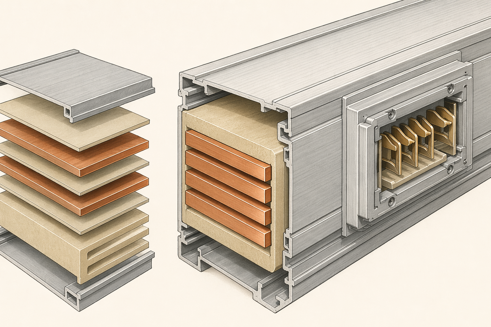
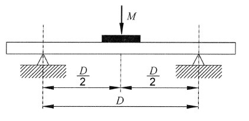
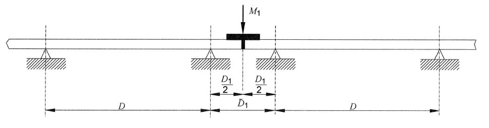
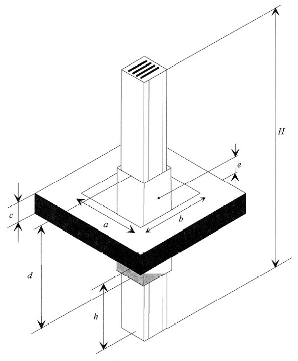
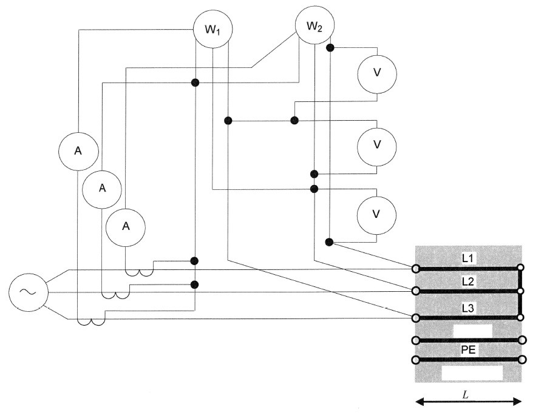
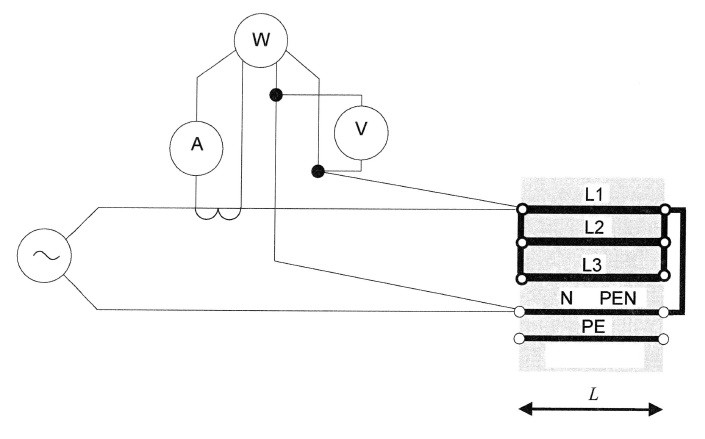
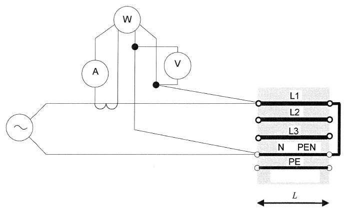
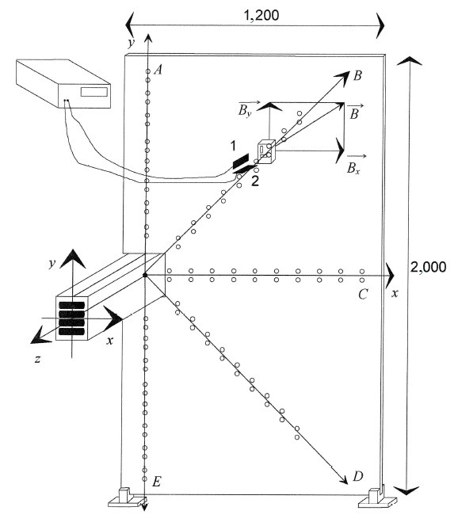
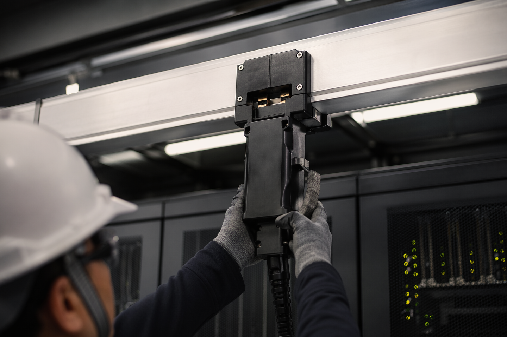

課程總覽與知識樹
一張地圖看懂 CNS 61439-6 匯流排線槽系統(BTS) 試運轉知能全貌——從標準導讀到 AI 算力中心實戰｜全課程導航
本章導讀：本課程以 CNS 61439-6:2021（對應 IEC 61439-6:2012）為經、AI 算力中心試運轉實務為緯，帶領機電工程師從「讀懂標準」走到「上手驗收」。全課程分六大模組：標準導讀基礎、規格介面與使用條件、構造與性能、查證與檢驗（試運轉核心）、附錄工程應用、AI 算力中心實戰與評量。在開始逐章研讀之前，請先建立三個整體觀念：其一，BTS 在資料中心的角色是「機櫃供電的最後一哩骨幹」；其二，本標準的靈魂是「設計查證(Design Verification)＋例行檢驗(Routine Verification)」的雙層查證體系；其三，試運轉顧問的價值，在於把標準節次轉譯成採購規格、查證審查與現場驗收清單。
■ 課程定位：為何 AI 算力中心選用 Busway（vs 電纜＋橋架）
一座 20 MW 等級的 AI 資料中心，IT 負載密度動輒每櫃 30~130 kW，且 GPU 叢集部署以「週」為單位滾動擴充。傳統「電纜＋橋架」方案在此場景遭遇結構性瓶頸：大截面電纜彎曲半徑大、橋架佔滿天花板空間並阻礙冷通道氣流、每新增一櫃須停電配線、工期以月計。匯流排線槽系統(Busway)則以「模組化封閉母線幹道＋插入式分接頭單元(plug-in tap-off unit)」的架構，恰好對症下藥。CNS 61439-6 正是這類產品的性能與查證基準——本課程即以此標準為主軸。
高密度、節省空間
同載流能力下，BTS 以緊貼排列之匯流排導體與金屬箱體散熱，截面積遠小於等效電纜群；架空安裝於機櫃正上方，釋放高架地板下與橋架空間，冷熱通道氣流不被線纜阻塞——這對氣流組織敏感的 AI 機房至關重要。（工程實務觀點）
彈性擴充、熱插拔
具分接頭設施之 BTU 在原製造廠預定之多點提供分接口（3.104）；插入式分接頭單元為「能以手動操作進行連接及切離之可移除式分接頭單元」（3.111 備考 2），配合 8.5.2 之聯鎖設計，可在幹道持續帶電下增減機櫃饋路——擴充不停機，部署從「週」縮短到「小時」。
施工期短、品質可控
BTS 於工廠完成模組化製造並逐單元例行檢驗（第 11 節：在 BTS 之每個單元上進行），現場僅需吊掛、接合、鎖扭矩；相較電纜敷設、剝線、壓接的大量現場手作，工期短且缺陷率低，查證文件鏈（型式試驗→例行檢驗→SAT）完整可追溯。
低阻抗、低損耗
標準 5.101 要求製造廠宣告相導體特性（表 102：R、R20、X、Z）與故障迴路特性（表 103），使電壓降（附錄 AA）、故障電流（表 104）與線損皆可量化設計；低阻抗意味低 I²R 損耗，直接貢獻 PUE 改善。
高短路耐受與安全查證
短路耐受強度（10.11）、溫升（10.10）、保護電路完整性（10.5）皆經型式試驗或基準設計比較查證；相較現場施工的電纜接續品質，BTS 之電氣安全由工廠查證背書，試運轉風險前移消化。
可監測、可維運
分接頭單元可內建量測模組，逐櫃回傳電流、功率、溫度至 EMS；配合紅外線窗與定期熱影像，接合點健康度可視化——這正是 AI 機房「永不停止」營運模式所需的維運體質。
■ 知識樹：全課程地圖
以下知識樹展開本課程六大模組與各章節之邏輯關係。根節點是學習目標；每個模組內的葉節點即網站章節（括號內為對應之標準節次或附錄）。建議先建立整體骨架，再逐模組深入。
- CNS 61439-6 匯流排線槽系統(BTS) 試運轉知能
- 模組一｜標準導讀基礎
- 標準定位・適用範圍・引用標準（前言、節次 1.、2.：IEC 61439-6 技術等同、AC 1,000 V／DC 1,500 V 上限、與 CNS 15783-1 併用）
- 用語及定義（節次 3.：BTS、BTU、BT 通道、饋線單元、分接頭單元、火焰擋板 BTU…）
- 符號及縮寫（節次 4.：k1A、k1c、k2c、R、X、Z）
- 模組二｜規格介面與使用條件
- 模組三｜構造與性能
- 模組四｜查證與檢驗（試運轉核心）
- 模組五｜附錄工程應用
- 附錄 C~EE：規範表 C（採購溝通範本）、設計查證總表 D、電壓降 AA、相導體特性 BB、故障迴路阻抗 CC~DD、磁場 EE
- 模組六｜AI 算力中心實戰與評量
- AI 算力中心實戰案例（20 MW 資料中心全生命週期：規劃→採購→查證審查→安裝→SAT→維運擴充）
- 痛點 × 流程 × 成本效益總覽（10 大痛點對策、Busway vs 電纜橋架生命週期成本）
- 復盤測驗（15 題單選：10 基礎＋5 進階情境）
- 模組一｜標準導讀基礎
■ 學習路徑建議
三種典型學員，三條路徑。無論走哪條，最後都請回到「AI 算力中心實戰案例」與「復盤測驗」收束。
路徑 A｜初學者（新進機電工程師）
- 模組一全讀：先背熟 BTS／BTU／分接頭單元等用語，建立標準語感。
- 模組二→三：理解介面特性如何對應規格欄位，構造與性能如何對應安全。
- 模組四：精讀設計查證與例行檢驗，這是日後審報告的基本功。
- 模組六案例→測驗：用案例把碎片知識串成流程。
預估時數：12~16 小時。
路徑 B｜有經驗者（配電／試運轉工程師）
- 快速掃過模組一，僅核對用語差異（BTS 改稱規則、BTU 型式）。
- 直攻模組四：10.2.101、10.10、10.11、10.101/10.102 之查證選項與判定基準。
- 模組五：電壓降（附錄 AA）與故障迴路（CC/DD）計算工具上手。
- 模組六：對照自身專案痛點，複盤測驗 5 題進階情境。
預估時數：6~8 小時。
路徑 C｜採購／業主代表（規格與合約視角）
- 讀「介面特性」與「資訊與標示」：搞懂 InA／RDF／阻抗數據該怎麼寫進規格。
- 精讀附錄 C 規範表（表 C.1）：逐欄填寫即是採購規格書骨架。
- 讀「設計查證」與「例行檢驗」之「交付文件解析」：訂出審查與驗收文件清單。
- 讀「痛點 × 成本效益」：掌握議價與價值工程談判點。
預估時數：4~6 小時。
■ 試運轉生命週期 × 標準章節對照
BTS 試運轉不是單一事件，而是一條從規劃到維運的查證鏈。下表對照各階段之工作主軸、應用之本標準節次與關鍵交付文件——此表即全課程之「作戰序列」。
| 生命週期階段 | 工作主軸 | 對應標準節次／附錄 | 關鍵交付文件 |
|---|---|---|---|
| 規劃 | 架構選定（2N／N+1）、容量估算、路由與防火區劃檢討 | 節次 1.（適用範圍）、5.1、7.2（特殊使用條件） | 設計準則書、單線圖概念 |
| 設計 | InA／RDF 選定、電壓降與短路計算、防火時效與 IP 選定 | 5.3、5.4（表 101）、5.101（表 102~104）、9.102、附錄 AA | 計算書、配置圖、規範表草稿 |
| 採購 | 規範表填寫、型式試驗報告要求、查證責任釐清 | 附錄 C（表 C.1）、附錄 D（表 D.1）、節次 6. | 附錄 C 規範表、採購規格書 |
| FAT（工廠驗收） | 型式試驗報告審查、例行檢驗見證、銘牌與配件核對 | 節次 10.、11.（每個單元）、6.1 | 型式試驗報告、例行檢驗記錄、FAT 報告 |
| 安裝 | 支撐間距 D、接合扭矩、垂直度、防火貫穿施工 | 8.1.101／10.2.101（D 值由來）、8.6.101、10.102（施工應符合原製造廠說明書） | 安裝查核表、扭矩記錄、貫穿部施作照片 |
| SAT（現場驗收） | 絕緣電阻、耐壓或其替代、保護電路連續性、相序極性 | 節次 11. 之現場延伸、5.101、8.6.101 | SAT 程序書與報告、量測記錄 |
| 功能驗證 | 分接箱熱插拔演練、滿載／假負載溫升熱影像、EMS 點對點 | 8.5.2、10.10 之溫升觀念延伸、5.102（磁場） | 功能驗證報告、熱影像基線 |
| 維運 | 熱插拔擴充、定期熱影像、接合點複測扭矩、文件維護 | 3.111、6.2、9.2（溫升限度為巡檢判據） | O&M 手冊、巡檢記錄、擴充變更記錄 |
知識點複習
- 本課程主軸：CNS 61439-6:2021（技術等同 IEC 61439-6:2012）× AI 算力中心試運轉實務，適用於額定電壓 AC 1,000 V／DC 1,500 V 以下之 BTS，並須與 CNS 15783-1（一般規則）併用。
- AI 機房選用 Busway 的五大理由：高密度節省空間、彈性擴充、熱插拔分接（8.5.2／3.111）、施工期短、低阻抗低損耗（5.101 阻抗宣告使損耗可量化）。
- 全課程六大模組：標準導讀→介面與條件→構造與性能→查證與檢驗（核心）→附錄工程應用→實戰與評量；設計查證（節次 10.）與例行檢驗（節次 11.）是試運轉顧問的主戰場。
- 試運轉生命週期八階段（規劃→設計→採購→FAT→安裝→SAT→功能驗證→維運）各有對應標準節次與交付文件，以階段門管理避免「階段斷鏈」。
- 三種學習路徑：初學者依序全讀（12~16 h）、有經驗者直攻模組四與五（6~8 h）、採購／業主聚焦附錄 C 規範表與文件清單（4~6 h），終點皆收束於實戰案例與復盤測驗。
AI 算力中心應用連結
本課程的收尾章「AI 算力中心實戰案例」，以一座 20 MW 資料中心為情境：列頭上方 400 A／225 A 匯流排槽採 2N 架構（A／B 路）供電 IT 機櫃，穿樓層豎井以 1,200 A 饋線 Busway 銜接，並示範 120 min 防火貫穿選定、附錄 C 規範表填寫、SAT 實測與熱插拔擴充演練。建議在讀完模組一至五後進入該章，帶著標準節次逐一對照現場決策。
標準定位、適用範圍與引用標準
讀懂 CNS 61439-6 的「身分證」——它從哪裡來、管到哪裡、與誰搭配使用，是後續所有查證與試運轉工作的前提｜對應標準前言、節次 1.、2.
本章導讀：任何一份標準的第一堂課都不是技術條文，而是「定位」。CNS 61439-6:2021 是依據 IEC 61439-6:2012 第 1.0 版、不變更技術內容制定而成的中華民國國家標準，專門規定額定電壓交流 1,000 V、直流 1,500 V 以下匯流排線槽系統（Busbar Trunking System, BTS）的定義、使用條件、構造要求、技術特性及查證要求。在 BTS 全生命週期中，規劃顧問依本章確認「該不該用這本標準」；採購階段依本章確認「規格書要引用哪些標準、哪個版次」；試運轉階段依本章確認「查證報告引用依據是否正確」。對 AI 算力中心而言，列頭匯流排槽是機櫃供電的最後一哩骨幹，選錯標準依據，後面所有驗收都是空談。
■ 條文解析
前言 —— CNS 61439-6:2021 的身世與法律位階
前言開宗明義：「本標準係依據 2012 年發行之第 1.0 版 IEC 61439-6，不變更技術內容，制定成為中華民國國家標準者。」這句話對工程實務有三層意義：
- 技術等同（identical adoption）：國際大廠依 IEC 61439-6:2012 完成的設計查證（Design Verification）試驗報告，在技術內容上與 CNS 61439-6:2021 完全對應，採購審查時可以直接採認其技術內容，不必因為「是 IEC 版不是 CNS 版」而要求重做試驗。
- 版次鎖定：對應的是 IEC 61439-6 2012 年第 1.0 版。引用時應寫全「CNS 61439-6:2021」或「IEC 61439-6:2012」，避免與舊制 IEC 60439-2:2000（本標準之前身）混淆。
- 程序完備：本標準係依標準法之規定，經國家標準審查委員會審定，由主管機關公布之中華民國國家標準，具備正式國家標準位階。
前言另一關鍵句：「依標準法第四條之規定，國家標準採自願性方式實施。但經各該目的事業主管機關引用全部或部分內容為法規者，從其規定。」這表示 CNS 61439-6 本身不具強制力，但一旦經由法規、公共工程採購綱要、業主規範或契約引用，即轉化為具有拘束力的技術要求。顧問在撰寫採購規格時明引本標準，就是讓自願性標準在該專案中「升級」為契約義務。前言同時聲明：本標準並未建議所有安全事項，使用前應適當建立相關維護安全與健康作業，並且遵守相關法規；且部分內容可能涉及專利權、商標權與著作權，主管機關及標準專責機關不負責此類權利之鑑別——這兩段是標準的免責與提醒，現場安全作業不能僅依本標準。
母法－子法關係：CNS 15783-1 與 CNS 61439-6
CNS 61439-6 屬於「低電壓開關裝置及控制裝置組裝品」標準家族。其母法（一般規則）為 CNS 15783-1（低電壓開關裝置及控制裝置組裝品－第 1 部：一般規則，對應 IEC 61439-1:2011）；CNS 61439-6 則是家族中專門針對匯流排線槽系統的「特定要求（particular requirements）」子法。全書採統一體例：每一節開頭標示「除下列所述，CNS 15783-1 第 N 節適用於本標準」，再以「取代」「追加」「修正」三種方式寫出 BTS 專屬規定。實務意義重大：
- 兩本必須併用：只看 CNS 61439-6 會缺漏絕緣配合、防護等級、介面特性等一般規則的完整架構；只看 CNS 15783-1 則缺少 BTU 型式、機械負載、火焰擋板等匯流排槽專屬要求。規格書引用時應寫「CNS 61439-6:2021 併用 CNS 15783-1」。
- 用語轉換規則：第 1 節備考 1 明定「本標準中，縮寫 BTS 用於匯流排線槽系統。當引用 CNS 15783-1 時，用語『組裝品』改稱『BTS』。」換言之，CNS 15783-1 中所有針對「組裝品（assembly）」的要求，在匯流排槽領域讀作「BTS」。
- 角色延伸：「原製造廠（original manufacturer）」與「組裝品製造廠（assembly manufacturer）」的責任分工定義於 CNS 15783-1 之 3.10.1 及 3.10.2，CNS 61439-6 第 1 節明示 BTS「可由原製造廠以外之製造廠進行製造及/或組裝」——品牌原廠與在地組裝廠分工時，查證責任歸屬依此釐清。
1. 適用範圍 —— 哪些產品歸本標準管
本標準規定下述低電壓 BTS（參照 3.101）之定義、使用條件、構造要求、技術特性及查證要求：
- 額定電壓不超過交流 1,000 V 或直流 1,500 V 之 BTS。
- 預期用於與發電、輸電、配電、電能轉換相關，以及用於控制電能消耗設備之 BTS。
- 在符合相關特定要求下，設計在特殊使用條件（例：船舶、軌道車輛）下使用，並供家用（由非專業人員操作）之 BTS。備考 2 指明：IEC 60092-302 涵蓋船舶之 BTS 的補充要求。
- 設計供機器之電氣設備用之 BTS；形成機器一部分之 BTS，其補充要求涵蓋於 IEC 60204 系列標準中。
標準同時宣示其普遍適用性：「本標準適用於所有 BTS，無論係在一次性基礎上設計、製造及查證，或完全標準化及大量生產。」也就是說，客製化長度與佈建的資料中心匯流排槽專案，與量產型產品，同樣落在查證要求的射程內，不得以「客製品」為由規避查證。
不適用範圍（原文明示）：
- 符合相關產品標準之個別裝置及獨立性（self-contained）組件，例：電動機起動器、熔線開關、電子設備等——這些裝置各有自身產品標準，即使裝在分接頭單元箱內，其本體仍依各自標準驗證。
- CNS 61439 系列標準其他各部所涵蓋之特定型式的組裝品。
- IEC 60570 規定之電源線軌系統（electrical supply track systems）。
- IEC 61084 系列標準規定之電纜線槽及管道系統（cable trunking and ducting systems）。
- IEC 61534 系列標準規定之電力線軌系統（powertrack systems）。
■ 引用標準解析（節次 2.）
第 2 節開頭同樣採「除下列所述，CNS 15783-1 第 2 節適用於本標準」體例——亦即 CNS 15783-1 引用的一整組基礎標準（絕緣、EMC、外殼防護等）全部繼承，再追加下列五項。每一項在查證鏈中的角色如下表：
| 引用標準 | 標準名稱（對應國際標準） | 在 BTS 查證中的角色 |
|---|---|---|
| CNS 12514-1 | 建築物構造構件耐火試驗法－第 1 部：一般要求事項（ISO 834-1:1999） | 火焰擋板 BTU（3.113）與建築物穿口防火（9.102）設計查證時，耐火試驗爐的升溫曲線與試驗方法基準——防火時效宣告是否成立，以此為判據。 |
| CNS 15130-3-10 | 電纜之燃燒試驗－第 3-10 部：垂直敷設成束電線電纜之垂直火焰擴散試驗－器材（IEC 60332-3-10:2000） | BTS「耐火焰延燒」（9.101）設計查證的燃燒試驗器材依據——垂直區段（立管）遭火焰延燒時，火焰不得沿線槽擴散的驗證方法。 |
| CNS 15783-1 | 低電壓開關裝置及控制裝置組裝品－第 1 部：一般規則（IEC 61439-1:2011） | 母法。組裝品通用之介面特性、介電性能、溫升、短路耐受、防護等級、設計查證與例行檢驗架構皆源於此；本標準各節以「除下列所述」方式繼承並追加 BTS 專屬要求。 |
| IEC 60439-2:2000 | Low-voltage switchgear and controlgear assemblies − Part 2: Particular requirements for busbar trunking systems (busways) | 本標準之前身。舊案既有 BTS 的型式試驗報告多依此版完成；新標準查證制度下，其報告之接受性須個案評估（見痛點與對策）。 |
| IEC 61786:1998 | Measurement of low-frequency magnetic and electric fields with regard to exposure of human beings − Special requirements for instruments and guidance for measurements | 附錄 EE「BTS 附近磁場之決定」（5.102 電磁場）量測時，低頻磁場量測儀器與方法的依據——關係機房內敏感設備佈局與人員暴露評估。 |
■ 顧問工作重點
規劃／設計階段
- 寫對標準全銜：採購規格書引用「CNS 61439-6:2021 低電壓開關裝置及控制裝置組裝品－第 6 部：匯流排線槽系統（併用 CNS 15783-1）」，並加註「或技術內容等同之 IEC 61439-6:2012」，避免國際廠牌因法規形式被排除、也避免廠商拿舊版報告魚目混珠。
- 把自願性標準轉成契約義務：依標準法第四條，CNS 本為自願性實施；規格書、圖說、契約條款中明引本標準全部或部分內容，即成為該專案的強制驗收依據。
- 以附錄 C 規範表為溝通骨架：本標準介面特性宣告（第 5 節）與使用者規範表（附錄 C）是規格書的技術欄位來源，規劃階段就應把額定電壓（≤AC 1,000 V／DC 1,500 V 範圍內之系統標稱值）、額定電流、短路耐受等逐項填入。
- 界定標的物邊界：依第 1 節不適用範圍，於規格中排除電纜線槽（IEC 61084）、電源線軌（IEC 60570）、電力線軌（IEC 61534）等替代品，避免比價基準不一。
監造／試運轉階段
- 審查查證文件的引用鏈：設計查證報告應引用 CNS 61439-6（或 IEC 61439-6:2012）第 10 節、例行檢驗報告應引用第 11 節；引用舊版 IEC 60439-2 者，依對策流程評估接受性。
- 確認製造責任歸屬：若為「原製造廠以外之製造廠」組裝（CNS 15783-1 之 3.10.1／3.10.2 架構），合約應載明設計查證由誰負責、例行檢驗由誰執行。
- 特殊使用條件另立協議：凡涉及船舶、軌道車輛或家用等特殊條件，依第 1 節確認「相關特定要求」（如 IEC 60092-302）已納入協議文件。
- 驗收基準回歸標準原文：試運轉查驗表的每一判定欄位，應能回溯到本標準（或併用之 CNS 15783-1）的具體節次，杜絕「依慣例」驗收。
■ 交付文件解析
本章（前言、節次 1.、2.）本身不產出試驗報告，但它定義了所有下游文件的「引用格式」。顧問應查收並把關下列文件：
- 採購規格書／技術規範：開頭「引用標準」章節應列 CNS 61439-6:2021、CNS 15783-1，以及依專案需求追加的 CNS 12514-1（防火）、CNS 15130-3-10（耐焰）等；各引用標準附版次年份。
- 製造廠型錄與宣告文件：應聲明產品符合 CNS 61439-6（或 IEC 61439-6:2012）；宣稱範圍不得超出第 1 節適用範圍（額定電壓上限 AC 1,000 V／DC 1,500 V）。
- 設計查證報告（Design Verification Report）：封面與依據欄應載明標準全銜與版次；以舊版 IEC 60439-2:2000 完成之試驗資料若作為查證證據，應附差異評估說明。
- 契約與法規引用紀錄：公共工程或法規引用本標準時，保留引用條款出處（目的事業主管機關令、採購綱要條次），作為爭議時的位階證據。
■ 痛點與對策
對策：規格書明定「須同時符合 CNS 61439-6 與 CNS 15783-1，二者缺一不可」；審標時檢查查證報告是否包含第 6 部專屬條款（10.2.101 機械負載、9.101/9.102 防火等）。成本效益觀點：補做專屬試驗費用遠低於機房上線後發現機械或防火缺陷的停工整改成本。
對策：規格書採「原則接受、逐項評估」：要求廠商提具舊報告逐項對照新標準第 10 節查證項目之差異表，缺項（舊制未涵蓋之查證項目）以補試驗或補計算補齊。此舉兼顧競爭性與技術把關，避免「只收新版報告」造成獨家綁標爭議。
對策：依標準法第四條，自願性標準一經契約或法規引用即具拘束力。顧問應在契約中寫明引用範圍（全部或部分條文），並於驗收程序書把每一查驗項目對應到標準節次——引用一旦落筆，標準即從「建議」變成「義務」。
對策：規格書以第 1 節「不適用範圍」清單反向確認標的物；箱內開關元件依其自身產品標準要求個別合格證明，整體組裝再依 CNS 61439-6 查證，兩層文件分別查收。
知識點複習
- CNS 61439-6:2021 依據 IEC 61439-6:2012 第 1.0 版、不變更技術內容制定；依標準法程序審定公布，屬正式國家標準。
- 依標準法第四條，國家標準採自願性實施，但經目的事業主管機關引用為法規（或經契約引用）者，從其規定——引用方式決定拘束力。
- 本標準適用於額定電壓不超過 AC 1,000 V 或 DC 1,500 V 之 BTS，涵蓋發電、輸電、配電、電能轉換及控制電能消耗設備用途，一次性設計與量產品皆適用。
- 用語轉換規則：引用 CNS 15783-1 時，「組裝品」一律改稱「BTS」；BTS 可由原製造廠以外之製造廠製造及/或組裝（CNS 15783-1 之 3.10.1、3.10.2）。
- 不適用範圍包括：個別裝置及獨立性組件（電動機起動器、熔線開關、電子設備等）、CNS 61439 系列其他各部、IEC 60570 電源線軌、IEC 61084 電纜線槽及管道、IEC 61534 電力線軌。
- 第 2 節追加引用五項標準：CNS 12514-1（耐火試驗）、CNS 15130-3-10（垂直火焰擴散）、CNS 15783-1（母法）、IEC 60439-2:2000（前身標準）、IEC 61786:1998（低頻磁場量測）。
AI 算力中心應用連結
AI 算力中心的列頭匯流排槽（overhead busway）長期滿載、全年無休，正是 CNS 61439-6 適用範圍中「配電」與「控制電能消耗設備」的典型場景。採購階段若誤引一般盤體標準而漏掉第 6 部，分接箱熱插拔、線槽機械負載與防火貫穿等資料中心關鍵性能將無查證依據。顧問在規格書第一章正確引用 CNS 61439-6:2021 併用 CNS 15783-1，就是把整個供電骨幹的驗收基準錨定在正確的法源上——後續介面特性宣告（第 5 節）、設計查證（第 10 節）、例行檢驗（第 11 節）才有依循起點。
用語及定義
13 個 BTS 專屬術語是全書的「零件命名法」——圖說、規範、備品、查驗單能否對得上號，全看術語是否統一｜對應標準節次 3.（3.101～3.113）
本章導讀：用語及定義是 CNS 61439-6 的「語言層」。標準以「除下列所述，CNS 15783-1 第 3 節適用於本標準」的體例，在組裝品通用術語之上追加 3.101～3.113 共 13 個匯流排線槽系統（Busbar Trunking System, BTS）專屬定義。規劃階段，顧問用這套術語寫規格與圖說；採購階段，它決定投標廠商報價單上的料號能不能對應到設計意圖；安裝與試運轉階段，查驗表單上的每一個「單元型式」欄位都必須回溯到本章定義。術語一亂——「匯流排槽」「母線槽」「Busway」「插接箱」各說各話——合約爭議與備品漏項就隨之而來。對 AI 算力中心而言，機櫃上方的分接箱就是本章 3.111「分接頭單元」的實體，術語的精準度直接影響擴充與維運效率。
■ 條文解析 基礎
第 3 節採追加體例：CNS 15783-1 第 3 節的組裝品通用術語（組裝品、進線單元、出線單元、固定式部件、可移除式部件、原製造廠、組裝品製造廠等）全部沿用，再追加下列 13 個 BTS 專屬定義。以下依編號逐條重建（定義內文以原文為準，【顧問解讀】為工程實務補充）：
定義：一種封閉式組裝品，其以導體系統之形式，在工業、商業及類似應用上，用於對所有型式之負載配電並控制電能。該導體系統係由管道、槽或類似箱體中之絕緣材料間隔及支撐的匯流排構成。［來源：IEC 60050-441:1984 之 441-12-07，修正］
備考 1：關於組裝品之定義，參照 CNS 15783-1 之 3.1.1。備考 2：BTS 可由一完整範圍之機械及電氣組件構成，例：具或不具分接頭設施之匯流排線槽單元；換相、擴張、可彎曲、饋線及轉接器單元；分接頭單元；通訊及/或控制用之額外導體。備考 3：用語「匯流排」不預先設定導體之幾何形狀、尺寸及尺度。
【顧問解讀】本條界定了三個關鍵屬性：封閉式（有箱體，區別於裸匯流排）、導體系統（匯流排由絕緣材料間隔及支撐，區別於電纜）、組裝品（繼承 CNS 15783-1 的查證架構）。「匯流排槽（busway）」為並列同義語——這正是合約常見的「Busway／匯流排線槽系統」雙名並存的標準依據，規格書宜於術語章一次定名後全文統一。
定義：BTS 之單元，其由匯流排、其支撐物與絕緣、外部箱體以及與其他單元之任何固定與連接裝置組成，可具有或不具有分接頭設施。
備考 1：BTU 可具有不同幾何形狀，例：直形、肘形、T 形或十字形。
【顧問解讀】BTU 是 BTS 的「最小完整構件」——匯流排、絕緣支撐、箱體、單元間固定與連接裝置四件套缺一不可。採購計量（公尺數、單元數）、出廠例行檢驗批次的劃分，都以 BTU 為單位。直形、肘形（elbow）、T 形、十字形是佈線轉折與分歧的幾何語言，圖說上的每一個轉折符號都對應一個實體 BTU 料號。
定義：連接在一起構成 BTS 之多個 BTU，不包括分接頭單元。
【顧問解讀】BT 通道是「主幹」的概念：從進線端到末端，所有串接 BTU 的總和。為何明示不含分接頭單元？因為整條 BTS 的額定電流（InA）、機械負載、電壓降與短路耐受宣告，都是以 BT 通道為對象；分接頭單元另有其自身額定電流（Inc）與 RDF 規定（5.3.2、5.4）。查驗時「主幹載流能力」與「分接迴路能力」分屬兩層，不可混為一談。
定義：一種 BTU，其係設計成能使分接頭單元安裝在原製造廠預先決定之 1 點或多點。
【顧問解讀】注意「原製造廠預先決定」七個字：分接點位置是設計定值（插接口間距、開口位置出廠已定），不是現場想在哪開口就在哪開口。資料中心常見的插接式線槽（plug-in busway）即屬此類；規劃階段必須核對插接口間距與機櫃佈局的模數配合，否則機櫃位移後分接箱對不到插接口，只能換整段 BTU。
定義：一種 BTU，係設計成能容許使用滾輪式或電刷式分接頭單元。
【顧問解讀】觸輪式（trolley-type）即滑接式取電：分接頭單元以滾輪或電刷沿導體滑動取電，可在通道上移動供電，典型應用為起重機、產線懸吊工具、滑動式負載。它與 3.104 的定點插接是兩種不同的分接哲學；資料中心一般使用定點插接式，但若機房內有滑動維修吊具或移動式測試負載架，規格上就會出現本型 BTU，其查證與維護重點（電刷磨耗、接觸壓力）與插接式完全不同。
定義：一種 BTU，用於連接相同系統但不同型式或不同額定電流之 2 個單元。
【顧問解讀】轉接器 BTU 是系統內的「變徑接頭」：例如自 4,000 A 主幹縮減為 2,000 A 支幹（變徑功能），或不同系列產品間的銜接。額定電流遞減的設計必須搭配下游保護協調一併檢討——變徑點後段的短路耐受與過載保護以較小定額為準，查驗時應核對轉接點位置與單線圖一致。
■ 條文解析（續）—— 3.107 至 3.113
定義：一種 BTU，其容許因系統之熱擴張而在 BT 通道軸向有一定移動量。
備考 1：此用語不預設何個元件容許移動，例：箱體內之導體或導體與箱體兩者。
【顧問解讀】銅導體每公尺溫升伸縮雖小，長距離直線通道（資料中心整排機櫃長廊動輒數十公尺）累積伸縮量可觀；滿載升溫與卸載冷卻的日循環會讓通道反覆「呼吸」。熱擴張 BTU 就是吸收此軸向位移的緩衝單元。佈建設計時應依製造廠宣告的間距設置，並在查驗單上核對其安裝位置與設計圖一致——漏裝的後果是接合點長期承受軸向應力，接觸電阻劣化。
定義：一種 BTU，用於改變相導體之相對位置，以平衡電感性電抗或轉換相位（例：L1-L2-L3-N 至 N-L3-L2-L1）。
【顧問解讀】換相有兩種目的：長距離通道上平衡電感性電抗（降低不平衡電壓），以及在進線或轉接處轉換相序以配合上下游盤體的相序配置。現場最常見的失誤是把換相 BTU 當普通直形單元安裝，或未在單線圖標示換相點，導致末端相序與盤體不符。查驗時應以相序表逐段核對相別——換相單元的存在與位置，是送電前核相檢查的重點。
定義：導體及箱體設計成在安裝期間容許規定之方向改變的 BTU。
【顧問解讀】注意「安裝期間」四字：可彎曲 BTU 的彎折是一次性的安裝調整（配合現場障礙物、橫樑穿越、設備對位），不是使用中的反覆撓動。規格書應要求製造廠宣告最小彎曲半徑與允許彎折次數；現場監造要防止施工人員超彎或反覆扳折，造成內部導體絕緣損傷——這種損傷外觀看不出，卻是日後絕緣故障的種子。
定義：作為進線單元用之 BTU。
備考 1：關於進線單元之定義，參照 CNS 15783-1 之 3.1.9。
【顧問解讀】饋線 BTU 是 BTS 與上游電源（變壓器、低壓盤、發電機）的界面單元，承受全通道最大電流與最高短路應力。採購時它是獨立料項（法蘭盤、接續箱、电缆銜接段等型式因廠而異）；查證上它與 BT 通道一體適用額定電流 InA。資料中心常見雙饋線（A/B 路）架構時，依 5.3.1 備考 4，額定電流須由使用者與製造廠協議——饋線配置是協議的起點。
定義：從 BTU 分接出電源之出線單元，其可為固定式或可移除式。
備考 1：關於出線單元、固定式部件及可移除式部件之定義，參照 CNS 15783-1 之 3.1.10、3.2.1 及 3.2.2。備考 2：插入式分接頭單元為能以手動操作進行連接及切離之可移除式分接頭單元（參照 8.5.2）。
【顧問解讀】這是資料中心最重要的術語：機櫃上方的「分接箱／插接箱（plug-in box）」就是可移除式（插入式）分接頭單元的實體——內含斷路器或熔線、量測模組，以手動操作完成與母排插接口的連接及切離，支援熱插拔擴充。「固定式」則是螺栓鎖固、需停電拆裝的分接型式。規格書必須寫明採用何種型式及其聯鎖、防誤插要求；查驗時分接頭單元的額定電流 Inc、RDF（表 101）與插入操作機構（8.5.2）都是獨立查驗項目。
定義：預期容許由於建築物之熱擴張、收縮及/或彎曲而使建築物移動的 BTU。
【顧問解讀】BTS 穿越建築物伸縮縫、抗震縫或長跨度結構的撓曲區時，建築物本身的位移必須由專用單元吸收，否則通道被建物「掰彎」。它與 3.107 的分工是：熱擴張 BTU 吸收線槽自身的熱伸縮；建築物移動用 BTU 吸收建築物傳來的位移。查驗時核對伸縮縫位置是否配置本型單元，是土建－機電介面檢查的固定項目。
定義：在起火情況下，預期在規定時間內防止火焰穿透延燒建築物區域之 BTU 或其一部分。
【顧問解讀】BTS 穿越防火區劃牆、樓板（建築物穿口）時，金屬槽體會成為火焰與煙的通道，火焰擋板 BTU 即在穿口處維持防火時效的專用單元。其查證依 9.102 與 CNS 12514-1 耐火試驗法（第 2 節引用標準），設計查證報告應載明防火時效宣告。資料中心機房多為防火區劃分隔，每一處穿牆／穿樓板點都要在圖說上標出火焰擋板 BTU 料號，並於竣工查驗時逐點核對——漏一處穿口，整個防火區劃失效。
術語體系總覽 —— BTS 的「解剖圖」
把 13 個定義串起來，BTS 的結構邏輯如下表。規格書與圖說的料項分類，建議直接套用此架構：
| 層級 | 術語（節次） | 工程角色 | 查驗／採購關注點 |
|---|---|---|---|
| 系統層 | BTS 匯流排線槽系統（3.101） | 完整封閉式配電組裝品 | 整體設計查證、額定電壓 ≤AC 1,000 V／DC 1,500 V |
| 主幹層 | BT 通道（3.103）＝ 多個 BTU 串接（不含分接頭單元） | 載流主幹 | InA、R/X/Z、電壓降、機械負載宣告 |
| 單元層 | BTU（3.102）：直形／肘形／T 形／十字形 | 最小完整構件 | 料號、長度、幾何型式、例行檢驗 |
| 功能 BTU | 具分接頭設施 BTU（3.104） | 提供定點插接口 | 插接口間距與機櫃模數配合 |
| 觸輪式分接 BTU（3.105） | 滑接取電（滾輪／電刷） | 電刷磨耗、接觸壓力（特殊應用） | |
| 轉接器 BTU（3.106） | 不同型式／額定電流銜接（變徑） | 變徑點保護協調 | |
| 熱擴張 BTU（3.107） | 吸收線槽自身軸向熱伸縮 | 設置間距、安裝位置 | |
| 換相 BTU（3.108） | 平衡電抗／轉換相序 | 換相點標示、送電前核相 | |
| 可彎曲 BTU（3.109） | 安裝期間一次成型轉向 | 最小彎曲半徑、禁止反覆扳折 | |
| 饋線 BTU（3.110） | 進線介面（上游電源銜接） | 最高短路應力、進線協議 | |
| 建築／防火 BTU | 建築物移動用 BTU（3.112）、火焰擋板 BTU（3.113） | 吸收建物位移／穿口防火時效 | 伸縮縫對位、9.102 防火查證 |
| 出線層 | 分接頭單元（3.111）：固定式／可移除式（插入式，8.5.2） | 自 BTU 分接電源之出線單元 | Inc、RDF（表 101）、插拔機構與聯鎖 |
■ 顧問工作重點
術語一致性管理（貫穿全生命週期）
- 規格書第一章先建術語表：將 3.101～3.113 中本專案用到的術語（含英文原文與縮寫）全文收錄，並宣告「本規範用語依 CNS 61439-6 第 3 節」——後續條文一律使用定名後術語。
- 圖說圖例與術語綁定：單線圖、平面佈建圖的圖例（legend）以標準術語標註：饋線 BTU、具分接頭設施 BTU、換相 BTU、熱擴張 BTU、火焰擋板 BTU、分接頭單元，杜絕自創符號名。
- 禁止混用俗名：「匯流排槽」「母線槽」「母線槽道」「Busway」「插接式匯流排」等市場俗名並存，規格與契約文件中應統一為「匯流排線槽系統（BTS）／匯流排槽（busway）」，其餘寫法視為同義但不得單獨用於定義性條文。
以術語驅動查驗與備品管理
- 查驗單料項對應定義：竣工查驗表的每一列（單元型式、數量、額定電流、位置）都能對到 3.102～3.113 之一；對不到的料項即為規格外項目，須回歸設計變更程序。
- 備品清單以 BTU 型式分類：備品（直形單元、插接口單元、分接箱、接合組件）按術語分類建檔，並保留原製造廠料號對照，避免停電搶修時「有備品、對不上」。
- 擴充評估從術語開始：機房擴建時，先確認既有通道是「具分接頭設施 BTU（3.104）」還是無分接設施段、分接頭單元是固定式或可移除式（3.111），擴充方案與停電窗口需求立刻清晰。
■ 交付文件解析
術語章節的產出物不是試驗報告，而是「文件的一致性」。顧問應確保下列文件貫徹同一套術語：
- 採購規格書術語章：收錄專案適用的標準定義（至少含 BTS、BTU、BT 通道、分接頭單元、具分接頭設施 BTU、饋線 BTU、火焰擋板 BTU），並註明出處節次（CNS 61439-6 之 3.101 等）。
- 設計圖說（單線圖／佈建圖／料表）：料表（Bill of Material）每一列以「標準術語＋廠商料號」雙欄呈現；佈建圖標示熱擴張、換相、火焰擋板、建築物移動用等功能 BTU 的設置位置。
- 型錄與宣告文件：製造廠型錄的產品分類應可對映標準術語；顧問審查時把廠商商品名逐一對照回 3.102～3.113 的定義，建立「商品名－標準術語」對照表作為審查附件。
- 查驗表單與竣工文件：出廠例行檢驗單、現場安裝查驗單、試運轉紀錄表之料項名稱與規格書術語章完全一致；竣工圖依實際安裝結果更新功能 BTU 位置。
■ 痛點與對策
對策：導入「型式辨識卡」：以 3.102～3.113 定義為綱，為每型 BTU 建立外觀照片、銘板特徵、功能說明一頁卡，納入監造與維運教育訓練；查驗表設計成「依定義逐型勾稽」而非自由填寫。成本效益觀點：一份辨識卡的製作成本極低，卻能避免買錯一支數萬元的熱擴張單元、或漏驗一處防火穿口的重工風險。
對策：規格書明定「分接頭單元應為可移除式（插入式），能以手動操作進行連接及切離（參照 CNS 61439-6 之 8.5.2）」，並要求具備聯鎖與防誤插機能；驗收時實機演練一次插拔流程。效益：免除未來每次擴充的停電協調成本，這在全年無休的 AI 機房是決定性優勢。
對策：契約術語章以 CNS 61439-6 第 3 節定義為準繩，並加註「同義俗名不影響契約範圍之解釋」；BTS 範圍依 3.101 備考 2 列舉（含分接頭單元、換相／擴張／可彎曲／饋線／轉接器單元、通訊及控制用額外導體）正面表列，使範圍無模糊空間。
對策：佈建圖審查時以「功能 BTU 逐點標示」為必要條件：每一長直線段檢討熱擴張間距、每一伸縮縫檢討建築物移動單元、每一防火穿口檢討火焰擋板——三張檢核清單對應三個定義，審圖意見一次到位。
知識點複習
- BTS（3.101）是封閉式組裝品：匯流排由箱體內絕緣材料間隔及支撐，用於配電並控制電能；「匯流排槽（busway）」為其同義用語。
- BTU（3.102）是 BTS 的最小完整單元（匯流排＋支撐絕緣＋箱體＋連接裝置）；多個 BTU 串接構成 BT 通道（3.103），且 BT 通道不包括分接頭單元。
- 具分接頭設施 BTU（3.104）之分接點位置由原製造廠預先決定；觸輪式 BTU（3.105）容許滾輪式或電刷式分接頭單元滑接取電。
- 功能 BTU 各司其職：轉接器（3.106，不同型式／額定電流銜接）、熱擴張（3.107，軸向熱位移）、換相（3.108，平衡電抗／轉換相序）、可彎曲（3.109，安裝期間一次成型）、饋線（3.110，進線）、建築物移動用（3.112，建物位移）、火焰擋板（3.113，穿口防火時效）。
- 分接頭單元（3.111）是從 BTU 分接電源之出線單元，分固定式與可移除式；插入式分接頭單元能以手動操作連接及切離（參照 8.5.2），是資料中心熱插拔擴充的標準依據。
- 熱擴張 BTU（3.107）吸收線槽自身熱伸縮；建築物移動用 BTU（3.112）吸收建築物熱擴張、收縮及／或彎曲位移——兩者吸收對象不同，不可互代。
- 術語文件策略：規格書、圖說、料表、查驗單統一採用 CNS 61439-6 第 3 節定名（附英文原文），是避免合約爭議與備品漏項最低成本的手段。
AI 算力中心應用連結
AI 算力中心機櫃上方的熱通道／冷通道匯流排槽，就是 3.104「具分接頭設施 BTU」串成的 BT 通道（3.103）；懸掛其下、內含斷路器與量測、可熱插拔的列頭分接箱，正是 3.111「（插入式）分接頭單元」的實體——單櫃 30～100 kW 級的供電都經由它分接。當 GPU 機櫃逐批進場、逐櫃上線時，「可移除式分接頭單元」讓擴充免停電；而長廊通道的熱擴張 BTU（3.107）與機房防火穿口的火焰擋板 BTU（3.113），則分別守住熱循環位移與防火區劃兩道防線。把本章術語學透，等於拿到讀懂資料中心供電圖說的鑰匙。
符號及縮寫
k1A、k1c、k2c、R、X、Z——六個符號撐起降額計算與短路計算的半邊天，讀錯一個下標，計算書就全盤皆錯｜對應標準節次 4.
本章導讀：CNS 61439-6 第 4 節篇幅雖短，卻是工程計算的「字典索引」。標準沿用 CNS 15783-1 第 4 節的全部符號（InA、RDF 等），再追加四組 BTS 專屬符號：溫度因數 k1A、電路溫度因數 k1c、安裝因數 k2c，以及相導體及故障迴路特性 R、X、Z。規劃階段，顧問用這些符號寫降額與電壓降公式；採購階段，它們是製造廠宣告文件的欄位代碼；試運轉階段，試驗報告與短路計算書的每一個數值都掛在這些符號之下。AI 算力中心的匯流排槽長期高載、諧波豐富，溫度降額（k 因數）與阻抗參數（R/X/Z）的辨讀能力，直接決定供電容量規劃的成敗。
■ 條文解析
第 4 節原文：「除下列所述，CNS 15783-1 第 4 節適用於本標準。追加：」——亦即組裝品通用符號（如額定電流 InA、電路額定電流 Inc、額定參差因數 RDF、額定電壓 Un 等）全部繼承自母法，下表為 CNS 61439-6 追加的符號及縮寫，忠實重建：
| 符號/縮寫 | 用語 | 節次 |
|---|---|---|
| k1A | BTS 之溫度因數 | 5.3.1 |
| k1c | 電路之溫度因數 | 5.3.2 |
| k2c | 電路之安裝因數 | 5.3.2 |
| R, X, Z | 相導體及故障迴路特性 | 5.101 |
k1A —— BTS 之溫度因數（節次 5.3.1）
整條 BTS（BT 通道與饋線 BTU）額定電流 InA 的環境溫度修正因數。5.3.1 規定：BTS 製造廠可說明不同周圍溫度時 BTS 之額定電流，公式為：
I′nA = k1A · InA 式中，k1A 為溫度因數，周圍空氣溫度為 35 ℃時等於 1
工程意義：標準基準環溫是 35 ℃（k1A＝1）。機房實際環溫高於 35 ℃時 k1A＜1（降額）；低於 35 ℃時 k1A＞1（增額，但須以製造廠宣告為限）。資料中心冷通道溫度通常控制在 25～27 ℃，熱通道上方的匯流排槽卻可能暴露於 40 ℃ 以上回風——同一條線槽掛在熱通道還是冷通道上方，可用的 I′nA 不同，規格階段就要指明安裝位置的設計環溫。另依 5.3.1，在顯著諧波電流情況中，若必要時應就衰減因數達成特殊協議——AI 負載諧波豐富，此協議不可省。
k1c、k2c —— 電路之溫度因數與安裝因數（節次 5.3.2）
每條電路（進線單元、BTU、分接頭單元、出線電路）額定電流 Inc 的雙重修正。5.3.2 規定：若適用時，BTS 製造廠說明不同周圍溫度及/或安裝條件之不同額定電流，公式為：
I′nc = k1c · k2c · Inc 式中，k1c 為電路之溫度因數，周圍空氣溫度為 35 ℃時等於 1； k2c 為電路之安裝因數，基準安裝條件時等於 1
工程意義：k1c 對應環溫（基準 35 ℃）；k2c 對應裝設條件——5.3.2 明定裝設條件包括方向（水平／垂直；除非另有規定，基準方向為水平）與位置（BT 通道沿邊或貫層方向、分接頭單元位於 BTU 之下方或頂部）。垂直立管段、分接箱倒掛於線槽下方等偏離基準的裝設方式，都透過 k2c 反映其散熱差異。審查宣告文件時，k1c、k2c 的適用區間必須由製造廠白紙黑字給出，不能只有「定型值」。
R、X、Z —— 相導體及故障迴路特性（節次 5.101）
這三個符號是電壓降與故障電流計算的輸入參數，定義於 5.101 並以表 102（相導體特性）宣告，單位為 Ω/m（在額定電流 Inc 及額定頻率 fn 下之平均值）。5.101 備考 1 指出：對於額定電流小於 100 A 之 BTS，電抗視為可忽略。表 102 的符號體系如下（依原文整理）：
| 符號 | 意義 | 溫度基準／性質 | 用途（依 5.101 原文） |
|---|---|---|---|
| R | 相導體電阻（周圍空氣溫度 35 ℃時） | 35 ℃ 基準 | 表 102 之 R 及 X 預期用於計算電壓降（參照附錄 AA） |
| X | 相導體電抗（與溫度無關） | 溫度無關 | |
| R20 | 相導體電阻（導體溫度 20 ℃時） | 20 ℃ 基準 | R20 及 X 與表 103 之故障迴路電阻及電抗（相導體及返迴路徑之總電阻及電抗），用於依阻抗法（表 104）計算故障電流 |
| X | 相導體電抗 | 同上 | |
| Z＝Z(1)＝Z(2) | 正序及負序阻抗（35 ℃時） | 35 ℃ 基準 | Z 及 Z20 與表 103 之故障迴路零序阻抗（相導體及返迴路徑之總零序阻抗），用於依對稱分量法（表 104）計算故障電流 |
| Z20＝Z(1)20＝Z(2)20 | 正序及負序阻抗（20 ℃時） | 20 ℃ 基準 |
所有相導體特性可依據附錄 BB 決定（量測電路見附錄章圖 BB.1）。5.101 備考 2 並給出故障電流的溫度邏輯：故障電流在最高阻抗值時達到最低值——視為 BTU 在最高正常周圍空氣溫度（35 ℃）、Inc 操作時發生，導體溫度為（35＋Δθ）℃，其中 Δθ 為依 10.10 量測之平均穩定溫升；相反地，故障電流在最低阻抗值時達到最高值——視為 BTU 在不操作時發生，導體溫度為 20 ℃，且當出現短路時電路閉合。換言之：保護協調的「最小故障電流」（驗證保護靈敏度）用 35 ℃ 熱態參數，「最大故障電流」（驗證設備耐受與啟斷容量）用 20 ℃ 冷態參數——兩個溫度基準各有用途，絕不可混。
本標準其他節次使用的關鍵符號（工程實務補充整理）
下列符號雖未列入第 4 節追加表（InA、Inc、RDF 等係繼承自 CNS 15783-1 第 4 節；D、D1、M、M1 等定義於第 10 節試驗程序），但讀懂查證報告與試驗紀錄時一定會遇到，謹依原文出處整理：
| 符號/縮寫 | 意義 | 出處節次 | 備註 |
|---|---|---|---|
| BTS | 匯流排線槽系統（busbar trunking system） | 1. 備考 1／3.101 | 引用 CNS 15783-1 時，「組裝品」改稱「BTS」 |
| BTU | 匯流排線槽單元（busbar trunking unit） | 3.102 | BTS 之最小完整單元 |
| InA | 組裝品（BTS）之額定電流 | 5.3.1 | BT 通道及饋線 BTU 之載流天花板；多進線點時由使用者與製造廠協議 |
| Inc | 電路之額定電流 | 5.3.2 | 進線單元、BTU、分接頭單元、出線電路各自之定額 |
| RDF | 額定參差因數（rated diversity factor） | 5.4（CNS 15783-1 之 3.8.11） | 整個 BTS 之 RDF＝1；多迴路分接頭單元依表 101（2～3 路 0.9、4～5 路 0.8、6～9 路 0.7、10 路以上 0.6） |
| fn | 額定頻率 | 表 102 註 | R/X/Z 宣告之頻率基準 |
| Δθ | 平均穩定溫升 | 5.101 備考 2（依 10.10 量測） | 推估熱態導體溫度（35＋Δθ）℃ 之用 |
| D | 機械負載試驗之支撐距離 | 10.2.101.1 | 直形單元多跨支撐試驗（圖 101）之跨距 |
| D1 | 鄰近接合點 2 支撐點間之最大距離 | 10.2.101.2 | 接合點機械負載試驗（圖 102）之跨距 |
| M、M1 | 機械負載試驗之加載質量 | 10.2.101.1／10.2.101.2 | M＝m＋mL（正常）或 m＋mL＋90 kg（重型）；M1＝m1＋mL1（正常）或 m1＋mL1＋90 kg（重型）；試驗持續至少 5 min |
| m、mL、m1、mL1 | 試驗質量組成 | 10.2.101.1／10.2.101.2 | m：兩支撐點間 BTU 質量；mL：連接至長度 D 之饋線及分接頭單元質量；m1：D1 間 BTU 部件質量（含接合點）；mL1：連接至長度 D1 之饋線及分接頭單元最大質量 |
■ 顧問工作重點
- 試驗報告的符號辨讀：審查設計查證報告時，先確認阻抗參數的「符號—溫度基準—節次」三者齊全：電壓降用的 R、X（35 ℃、附錄 AA）與故障電流用的 R20/X（阻抗法）或 Z/Z20（對稱分量法）各有出處（5.101、表 102～表 104），單位應為 Ω/m 平均值，並註明額定電流 Inc 與額定頻率 fn 條件。
- 降額鏈的查核：容量計算書應呈現完整降額鏈 I′nA＝k1A·InA（系統層）與 I′nc＝k1c·k2c·Inc（電路層），並附 k 因數的來源（製造廠宣告曲線或數表）與適用環溫、裝設方向、分接箱方位。凡計算書直接引用型錄 InA 而未乘 k 因數者，退回補正。
- 圖說符號統一：單線圖與計算書的符號體系應與第 4 節一致（k1A、k1c、k2c、R、X、Z），避免設計端自創符號（如 Kt、Kinst）與標準符號混用，造成審查與交底時的轉譯錯誤。
- 機械試驗紀錄的參數勾稽：10.2.101 機械負載試驗報告中，跨距 D/D1、加載質量 M/M1（含 90 kg 重型加碼）與試驗持續時間（至少 5 min）應逐項對應原文定義；吊架間距設計值不得大於查證時的 D 值。
- 協議文件的符號落地：諧波衰減因數、多進線點 InA 等「由使用者與製造廠協議」的項目（5.3.1），協議紀錄應直接引用標準符號與公式，使日後容量檢討可直接代入。
■ 交付文件解析
- 介面特性宣告文件（第 5 節＋附錄 C 規範表）：k1A、k1c、k2c 之基準條件與修正曲線；R、X、Z（含 R20、Z20）之 Ω/m 宣告值——此為計算書的合法輸入。
- 電壓降計算書（附錄 AA 方法）：引用表 102 之 R、X，逐段計算至最遠分接點；資料中心對電壓敏感，驗收時核對計算所用阻抗值與宣告文件一致。
- 短路／接地故障計算書（表 104 之阻抗法或對稱分量法）：最大故障電流（20 ℃ 冷態，R20/Z20）與最小故障電流（35 ℃＋Δθ 熱態，R/Z）雙邊界檢算，故障迴路採表 103 含返迴路徑之合成參數。
- 設計查證報告（第 10 節）：溫升（10.10）量測之 Δθ、機械負載（10.2.101）之 D/D1/M/M1、附錄 BB～DD 之阻抗量測電路與結果——所有數值應能對應本章符號。
- 例行檢驗報告（第 11 節）：出廠逐台查驗紀錄中的額定值標示（InA、Inc、RDF）與銘板、型錄、宣告文件三方一致。
■ 痛點與對策
對策：計算書審查建立「三問」檢核：(1) 此阻抗是相導體還是故障迴路（含返迴路徑）？(2) 溫度基準是 35 ℃ 還是 20 ℃（下標 20 有無標註）？(3) 計算方法（阻抗法／對稱分量法）與所用參數組合是否符合 5.101 與表 104 的對應？三問有任一含糊，計算書退回。成本效益觀點：一次退件重算的顧問費，遠低於保護不協調造成機房跳電的營運損失。
對策：依 5.101 備考 2 的溫度邏輯建立「用途—溫度」對照並寫入設計準則：電壓降→R/X（35 ℃）；最大故障電流（耐受、啟斷）→20 ℃ 冷態參數；最小故障電流（保護靈敏度）→35 ℃＋Δθ 熱態參數。計算書封面即應宣告所用邊界。
對策：容量計算書以「降額鏈一覽表」呈現：基準定額→k1A/k1c（環溫）→k2c（安裝）→諧波特殊協議因數，逐欄註明來源與適用條件，由設計、審查、製造廠三方簽認。AI 機房諧波豐富，5.3.1/5.3.2 的「衰減因數特殊協議」應列為採購必要文件。
對策：要求送審文件附「符號對照表」：報告用符號 ↔ CNS 61439-6 第 4 節符號 ↔ 定義節次，三方對照無歧義後再進入技術審查；此舉亦便利日後維運單位直接引用標準符號下備品與改造單。
知識點複習
- 第 4 節追加四組符號：k1A（BTS 之溫度因數，5.3.1）、k1c（電路之溫度因數，5.3.2）、k2c（電路之安裝因數，5.3.2）、R、X、Z（相導體及故障迴路特性，5.101）；其餘符號（InA、Inc、RDF 等）繼承 CNS 15783-1 第 4 節。
- 降額公式：I′nA＝k1A·InA；I′nc＝k1c·k2c·Inc。k1A、k1c 於周圍空氣溫度 35 ℃ 時等於 1；k2c 於基準安裝條件（水平方向等）時等於 1。
- R/X/Z 的用途分流：R、X（35 ℃）→電壓降（附錄 AA）；R20、X＋表 103 故障迴路電阻電抗→阻抗法故障電流；Z＝Z(1)＝Z(2)、Z20＋表 103 零序阻抗→對稱分量法故障電流（表 104）。
- 故障電流溫度邏輯：最高阻抗（35 ℃＋Δθ 熱態）→最小故障電流；最低阻抗（20 ℃ 冷態）→最大故障電流；Δθ 為依 10.10 量測之平均穩定溫升。
- 額定電流小於 100 A 之 BTS，電抗視為可忽略（5.101 備考 1）——小容量分接通道的電壓降可只以 R 估算。
- 機械負載試驗符號：D／D1（支撐跨距）、M／M1（加載質量，重型負載加 90 kg），試驗持續至少 5 min（10.2.101）。
AI 算力中心應用連結
AI 算力中心的匯流排槽容量規劃，是本章符號的實戰場：GPU 機櫃高密度負載讓 InA 動輒數千安培，熱通道上方的高環溫必須以 k1A 降額，UPS 與整流負載帶來的諧波又觸發 5.3.1 的衰減因數特殊協議。供電骨幹長達數十至上百公尺，末端機櫃的電壓降計算（R/X、附錄 AA）與接地故障保護靈敏度（Z、表 103/104）決定保護協調的成敗。把 k1A、k1c、k2c、R、X、Z 六個符號的定義與邊界條件記熟，試運轉階段讀試驗報告與計算書時，就能一眼看出數值該不該是那個數。
介面特性
BTS 與電力系統、建築物、負載之間的「規格語言」——所有採購、查證與試運轉的基準線｜對應標準節次 5.、5.101、5.102
本章導讀：介面特性（Interface Characteristics）是 CNS 61439-6 全書的規格核心。規劃階段，顧問依本章向製造廠索取額定電壓、額定電流、額定參差因數（RDF）與 R/X/Z 阻抗參數；採購階段，這些宣告值是審標與比價的共同尺度；安裝與試運轉階段，溫升、電壓降、短路耐受與諧波降額的驗算全部建立在第 5 節的宣告之上。一句話：沒有第 5 節的完整宣告，就沒有可以驗收的匯流排線槽系統（Busbar Trunking System, BTS）。對 AI 算力中心而言，列頭匯流排槽承載的是每櫃數十 kW、全年無休的高密度負載，本章每一個參數都直接關係供電連續性。
■ 條文解析 進階
CNS 61439-6 第 5 節採「除下列所述，CNS 15783-1 第 5 節適用於本標準」的修正體例：匯流排槽專屬的要求以「取代」「追加」「修正」標示，其餘直接沿用 CNS 15783-1（對應 IEC 61439-1）對組裝品介面特性的完整架構。以下依宣告項目逐項解析。
5.1 一般（取代）——宣告義務的起點
BTS 之特性應確保與所連接電路之定額及安裝條件相容，且應由 BTS 製造廠依 5.2 至 5.6 及 5.101 至 5.102 所識別之準則予以宣告。標準同時指明：附錄 C 規定之規範表（表 C.1 使用者規範表），係用於協助使用者及 BTS 製造廠達成此目標——無論使用者是「選擇特性符合其需求且符合本標準要求之類別產品」，或「與製造廠達成具體協議」。備考並提示：附錄 C 亦與第 6 節（資訊）及第 7 節（使用條件）所述之主題有關；在某些情況中，BTS 製造廠提供之資料可取代協議。
5.2 額定電壓——Un、Ui 與 Uimp
額定電壓（Un）與額定絕緣電壓（Ui）等電壓定額，CNS 61439-6 未另修正，直接適用 CNS 15783-1 之規定。本標準適用範圍為額定電壓交流不超過 1,000 V、直流不超過 1,500 V 之 BTS（附錄 C 表 C.1 亦以「標稱電壓 Un ≤ 1,000 V（交流）或 1,500 V（直流）」為預設配置，並由當地要求依安裝條件選定）。BTS 專屬修正出現在衝擊耐電壓：
- 5.2.4（組裝品之）額定衝擊耐電壓（Uimp）— 取代備考：除非另有規定，依 CNS 15783-1 表 G.1 所示之過電壓類別 IV（安裝設備之原點，即使用入口位準）或類別 III（配電電路位準）選擇額定衝擊耐電壓。
工程意義：列頭匯流排槽位於配電電路位準（類別 III），但若直接銜接建物進線點之饋線段，應按類別 IV 選定 Uimp。同一條 BTS 饋線上不同區段所處的過電壓類別不同，規格書應明確寫出安裝位置對應之類別，而非籠統要求一個數字。
5.3.1 組裝品之額定電流（InA）——整條 BT 通道的載流天花板
額定電流 InA 是整個 BTS（BT 通道與饋線 BTU）的載流能力宣告。CNS 61439-6 追加三項關鍵規定：
- 備考 4（多進線點協議）：若 BTS 未在 BT 通道之一端配備單一進線單元（例：進線單元未安裝在 BTS 之一端，或超過 1 個進線單元），則額定電流將由使用者與製造廠協議。資料中心常見的雙饋線（A/B 路）或中段進線架構正屬此類，InA 不能照型錄照抄，必須白紙黑字協議。
- 裝設方向：額定電流應適用於規定之裝設方向（參照 5.3.2）。但對於水平 BTS 中短的垂直區段（例：小於 3 m 之長度），裝設方向之影響可忽略不計——垂直爬升段（立管）因煙囪效應散熱條件改變，長度超過 3 m 即應要求製造廠宣告對應定額。
- 溫度因數與諧波：BTS 製造廠可說明不同周圍溫度時之額定電流，公式如下；在顯著諧波電流情況中，若必要時，應就衰減因數（derating factor）達成特殊協議。
I′nA = k1A · InA 式中，k1A 為 BTS 之溫度因數，周圍空氣溫度為 35 ℃時等於 1
5.3.2 電路之額定電流（Inc）——每條電路各自把關
每條電路（亦即進線單元、BTU、分接頭單元、出線電路）之額定電流 Inc 應等於或高於其假定負載；對於備有超過 1 條主出線電路之分接頭單元，亦參照 5.4（RDF）。額定電流應適用於規定之裝設條件，裝設條件包括：
- (a) 方向：可為水平或垂直；除非另有規定，基準方向為水平。
- (b) 位置：舉例而言，BT 通道之位置可為沿邊方向或貫層（平面）方向，及/或分接頭單元之位置可位於 BTU 之下方或頂部。
若適用時，BTS 製造廠說明不同周圍溫度及/或安裝條件之不同額定電流：
I′nc = k1c · k2c · Inc 式中，k1c 為電路之溫度因數，周圍空氣溫度為 35 ℃時等於 1； k2c 為電路之安裝因數，基準安裝條件時等於 1
同 5.3.1，在顯著諧波電流情況中，若必要時應就衰減因數達成特殊協議。實務上，分接頭單元掛在線槽下方（熱空氣上升直衝箱體）與掛在頂部，其 k2c 不同；規格階段就應把「分接箱安裝方位」寫入圖說，否則驗收時無基準可驗。
5.4 額定參差因數（RDF）——多迴路分接箱的降額密碼
本小節為 CNS 61439-6 之取代規定，分兩層次理解：
- 整個 BTS 層級：除非另有規定，RDF（參照 CNS 15783-1 之 3.8.11）應等於 1——亦即在 BT 通道及饋線 BTU 之額定電流限度內，所有分接頭單元能連續且同時承載其全部額定電流。備考 1 說明：此係因分接頭單元間之熱影響視為可忽略不計。
- 分接頭單元內部層級：對於配備超過 1 條主出線電路之分接頭單元，此等電路應能在分接頭單元之額定電流限度內，連續且同時承載「其額定電流乘以 RDF」。除非另有規定，此種分接頭單元之 RDF 應等於表 101 所示之值。
| 主出線電路之數目 | 額定參差因數（RDF） |
|---|---|
| 2 及 3 | 0.9 |
| 4 及 5 | 0.8 |
| 6 至 9 | 0.7 |
| 10 以上 | 0.6 |
備考解說（原文備考 1～4）：
- 備考 1：整個 BTS 之 RDF＝1，係因分接頭單元間之熱影響視為可忽略不計——線槽金屬箱體沿長向散熱良好，相鄰分接箱不會互相加熱。
- 備考 2：RDF 識別多個功能性單元實際上非全部同時加載或間歇加載——它反映的是「同一分接箱內多條出線不會同時滿載」的統計事實。
- 備考 3：出線電路之假定負載可為穩定連續電流或可變電流之熱等效——負載非恆定時，以熱等效電流評估。
- 備考 4：（空白）——原文保留，無內容。
另依 5.4 末段：在 BTS 操作於額定電流（InA）下，RDF 可適用——即 RDF 的降額利益以線槽整體載流達 InA 為前提情境。而 5.3.1/5.3.2 均規定：在顯著諧波電流情況中，若必要時，應就衰減因數達成特殊協議。資料中心 IT 負載雖經 PFC 整流，3 次諧波疊加於中性線的效應仍須在協議中明確處理（中性線導體截面、諧波量測報告、衰減因數三項一併約定）。
5.5 額定頻率（fn）
CNS 61439-6 對額定頻率未另修正，適用 CNS 15783-1 之規定；附錄 C 表 C.1 之預設配置為「直流／50 Hz／60 Hz，依當地安裝條件」（參考節次 3.8.12、5.5、8.5.3、10.10.2.3、10.11.5.4）。頻率看似小事，實務上直接影響電抗 X 之大小（X＝2πf·L）與溫升試驗的適用性：依 10.10.3.1，額定電流 800 A 以下時在 50 Hz 電路上進行之溫升試驗可適用於 60 Hz；大於 800 A 且未做 60 Hz 試驗者，60 Hz 額定電流應減至 50 Hz 額定電流之 95 %（或 50 Hz 時最高溫升未超過容許值之 90 % 者不在此限）。台灣為 60 Hz 系統，進口設備之 50 Hz 試驗報告能否引用，正是審查重點。
額定耐短路電流——Icw／Ipk／Icc 概念與保護協調
CNS 61439-6 對短路定額之相關小節未另加修正，直接適用 CNS 15783-1 第 5 節之規定；顧問應掌握三個核心定額的物理意義：
- 額定短時間耐電流（Icw，rated short-time withstand current）：BTS 在規定時間（如 1 s 或 0.2 s）內能承載而不損壞之短路電流均方根值——對應上游斷路器短延時（short-time）跳脫期間線槽實際承受的熱應力（I²t）。
- 額定峰值耐電流（Ipk，rated peak withstand current）：BTS 能承受之短路電流峰值——對應故障初始半週波的電動力（electromagnetic force）衝擊，考驗匯流排支撐物與箱體的機械強度。
- 額定條件短路電流（Icc，rated conditional short-circuit current）：搭配規定之短路保護裝置（SCPD）時所能承受之預期短路電流——定額成立的前提是那個特定 SCPD 必須存在且正確設定。
附錄 C 表 C.1 把短路耐受能力拆成可填答的協議欄位，顧問審規時應逐欄落實：
| 特性 | 參考節次 | 預設配置／標準所列之選項 |
|---|---|---|
| 於電源端子之預期短路電流 Icp（kA） | 3.8.7 | 由電力系統決定 |
| 中性點之預期短路電流 | 10.11.5.3.5 | 最高為相值之 60 % |
| 保護性電路之預期短路電流 | 10.11.5.6 | 最高為相值之 60 % |
| 進線功能性單元之短路保護裝置（SCPD） | 9.3.2 | 依當地安裝條件（是／否） |
| 短路保護裝置之協調，包括外部短路保護裝置細節 | 9.3.4 | 依當地安裝條件 |
| 與可能產生短路電流之負載有關聯的資料 | 9.3.2 | 預設：無負載可能產生已容許之顯著貢獻 |
設計查證面：依 10.11.1，短路耐受強度定額應予查證（CNS 15783-1 之 10.11.2 免除查證者除外），可藉由 CNS 15783-1 之 10.11.5 規定的試驗，或與 10.11.3 之基準設計比較（查檢表法）進行查證；試驗應於代表性 BT 通道及代表性分接頭單元上進行，由原製造廠負責選擇。試運轉顧問的關鍵動作：將上游保護協調曲線（TCC）與 BTS 宣告之 Icw/Ipk 疊圖比對，確認故障清除時間與能量通過值（let-through energy）均在線槽耐受包絡內。
5.6 其他特性——BTS 專屬追加
CNS 61439-6 對 CNS 15783-1 之 5.6 修正兩項、追加三項，全部與匯流排槽的安裝物理形態直接相關：
- 修正 (e)：靜置式（固定式）BTS。BTS 一經安裝即固定於建築物，非移動式設備。
- 修正 (j)：封閉式 BTS。匯流排導體全長由金屬或絕緣箱體封閉，構成防止直接接觸的基本屏障。
- 追加 (aa)：耐受機械負載之能力，無論為正常或重型（參照 8.1.101）。依 8.1.101：供水平安裝之 BTS 在使用中應耐受 5.6 (aa) 規定之正常或重型機械負載——正常機械負載除 BTU 之重量外，亦包括非由其自身個別固定件支撐之饋線單元及分接頭單元的重量；重型機械負載包括額外之負載，例：人員之重量（備考：此說明並非意指 BTS 為通道——線槽不是走道，不可當工作踏板）。符合性以 10.2.101 之機械負載試驗檢查：直形 BTU 以原製造廠規定之最大支撐距離 D 支撐，正常負載施加質量 M＝m＋mL、重型負載再加 90 kg，持續至少 5 min。
- 追加 (bb)：（若適用時）耐火焰延燒（參照 9.101）。依 9.101：當火源已移開時，非火焰延燒之 BTS 不應點燃，或若點燃時不應繼續燃燒；以 10.101 規定之火焰延燒試驗檢查其符合性。
- 追加 (cc)：（若適用時）建築物穿口之防火（參照 9.102）。依 9.102：火焰擋板 BTU（若有時）之設計應能在 BTS 穿過水平或垂直建築物區域（例：牆或地板）之起火條件下，於規定時間內防止火焰延燒；優先選用之時間為 60 min、90 min、120 min、180 min 或 240 min，此可用額外部件達成；依 10.102 規定之防火試驗檢查其符合性。
5.101 相導體及故障迴路特性——R、X、Z 參數家族 進階
這是 BTS 規格書中最常被忽略、卻是電壓降與短路電流計算的唯一原料。備考 1：對於額定電流小於 100 A 之 BTS，電抗視為可忽略。表 102 規定之 R 及 X 係預期用於計算電壓降（參照附錄 AA）。
| 特性項目 | 量測／基準條件 | 符號 |
|---|---|---|
| 電阻 | 在周圍空氣溫度為 35 ℃時 | R |
| 在導體溫度為 20 ℃時 | R20 | |
| 電抗（與溫度無關） | — | X |
| 正序及負序阻抗 | 在周圍空氣溫度為 35 ℃時 | Z = Z(1) = Z(2) |
| 在導體溫度為 20 ℃時 | Z20 = Z(1)20 = Z(2)20 |
所有相導體特性可依據附錄 BB 決定（於試驗樣品輸出端將所有相導體短路，記錄溫升試驗期間之量測值，換算平均電阻與電抗）。製造廠的填表義務：表 102 每一列都應有數值，且須註明對應之導體材質（銅／鋁）、截面與溫度基準；僅給「電壓降百分比」而未給 R/X 原值者，無法供不同功率因數與負載分布下複算。
| 特性項目 | 量測／基準條件 | 相對中性線 | 相對相 | 相對PEN | 相對PE |
|---|---|---|---|---|---|
| 零序阻抗 | 在周圍空氣溫度為 35 ℃時 | Z(0)bphN | — | Z(0)bphPEN | Z(0)bphPE |
| 在導體溫度為 20 ℃時 | Z(0)b20phN | — | Z(0)b20phPEN | Z(0)b20phPE | |
| 電阻 | 在周圍空氣溫度為 35 ℃時 | RbphN | Rbphph | RbphPEN | RbphPE |
| 在導體溫度為 20 ℃時 | Rb20phN | Rb20phph | Rb20phPEN | Rb20phPE | |
| 電抗（與溫度無關） | — | XbphN | Xbphph | XbphPEN | XbphPE |
故障迴路零序阻抗可依附錄 CC 決定；故障迴路電阻及電抗可依附錄 DD 決定。符號讀法：下標 b＝故障迴路（相導體＋返回路徑之總和），phph＝相對相、phN＝相對中性線、phPEN／phPE＝相對 PEN／PE 導體。表 103 的返迴路徑取決於 BTS 的 PE 架構（獨立 PE 導體或以箱體作為保護導體），不同架構的零序阻抗差異極大，直接向製造廠索取數值時應一併確認其 PE 構成。
兩種故障電流計算路徑的對應關係（原文 5.101 之說明）：表 102 之 R20 及 X 與表 103 之故障迴路電阻及電抗（亦即相導體及返迴路徑之總電阻及電抗），係用於依阻抗法（參照表 104）計算故障電流；表 102 之 Z 及 Z20 與表 103 之故障迴路零序阻抗（亦即相導體及返迴路徑之總零序阻抗），係用於依對稱分量法（參照表 104）計算故障電流。
| 故障電流類別 | 阻抗法 | 對稱分量法 |
|---|---|---|
| 最大短路電流 — 三相 | R20、X | Z20 |
| 最大短路電流 — 相對相 | Rb20phph、Xbphph | Z20 |
| 最大短路電流 — 相對中性線 | Rb20phN、XbphN | Z20 及 Z(0)20phN |
| 最小短路電流 — 相對相 | Rbphph、Xbphph | Z |
| 最小短路電流 — 相對中性線 | RbphN、XbphN | Z 及 Z(0)phN |
| 接地故障電流〔相對 PE(N)〕 | RbphPE(N)、XbphPE(N) | Z 及 Z(0)phPE(N) |
備考 3：對稱分量法係以分別對故障迴路正序、負序及零序阻抗（參照 IEC 60909-0）計算之模數和為基礎；同樣地，阻抗法係以分別對故障迴路電阻及電抗計算之模數和為基礎。備考 2 的溫度邏輯務必讀懂：最大故障電流發生在最低阻抗——BTU 不操作、導體溫度 20 ℃、短路出現時電路閉合之冷態情境（用 20 ℃ 欄位）；最小故障電流發生在最高阻抗——BTU 在最高正常周圍空氣溫度（亦即 35 ℃）以 Inc 運轉、導體溫度為 (35＋Δθ) ℃ 之熱態情境（用 35 ℃ 欄位），其中 Δθ 為依 10.10 量測之平均穩定溫升。最小故障電流用於校驗保護裝置靈敏度（能否跳脫），最大故障電流用於校驗設備耐受與啟斷容量——兩者一頭一尾，缺一不可。
5.102 電磁場
BT 通道附近之商頻磁場的強度可由 BTS 製造廠規定（備考：磁場為距離之快速遞減函數）；BTS 周圍磁場模數之量測及計算方法如附錄 EE 所示。對於與高敏感性 IT 設備（高速數據網、工作站監視器等）近距離共構的資料中心佈線，此宣告值與 7.2 (cc) 之特殊使用條件互為表里。
附錄 AA 之串聯：表102 R/X 的實戰用法——電壓降計算
附錄 AA（參考）給出 BTS 系統電壓降公式：
u = k · √3 · IB · L · (R·cosφ + X·sinφ) u ：系統之複合電壓降（V） R、X ：5.101 規定之平均電阻及電抗（Ω/m） IB ：所考量之電路的電流（A） L ：所考量之系統的長度（m） cosφ ：所考量之負載功率因數 k ：負載分布因數
負載分布因數 k：計算 BT 通道末端之電壓降時，負載集中在 BT 通道末端者 k＝1；負載均勻分布在 n 個分支之間者 k＝(n＋1)/2n。對於沿 BT 通道均勻分布之負載，計算距離 BT 通道原點 d 之分支原點處的電壓降時，k＝(2n＋1−n·d/L)/2n。原製造廠可提供不同功率因數之預先計算電壓降表（V/A 及 V/m），以便於進行基本計算——資料中心一條 60 m 列頭線槽掛 20 個分接箱，正是「均勻分布負載」的典型，用 k＝1 的末端集中假設會嚴重高估電壓降，顧問應以公式複核廠商軟體輸出。

■ 顧問工作重點
規劃／設計階段
- InA 選定：以機櫃規劃總容量 × 同時率反推線槽定額，並保留擴充裕度；AI 機櫃單櫃 30～130 kW 已成常態，列頭線槽常以 800 A～2,500 A 等級配置，A/B 雙路各自獨立核算。
- RDF 對多迴路分接箱的意義：1 個分接箱出 6 條出線饋 6 個機櫃時，依表 101 每條出線僅需按「額定電流 × 0.7」連續同時加載設計分接箱容量——但資料中心機櫃是 7×24 高載因子負載，不滿足備考 2「非全部同時加載」的統計前提時，應於規格書宣告 RDF＝1 或按實測負載曲線協議。
- 短路耐受與上游保護協調：以台電或發電機供電端之 Icp 為邊界，選定 Icw/Ipk；確認 UPS 輸出、發電機饋電等不同電源情境下之最不利值，並校驗最小接地故障電流能否驅動保護裝置在規定時間內切離（表 104 的雙向校核）。
- 過電壓類別定位：屋頂戶外段或銜接進線點之饋線按類別 IV 宣告 Uimp，機房內部按類別 III。
採購／監造／試運轉階段
- 宣告完整性把關：以附錄 C 規範表逐欄索取填答；R、X、Z、零序阻抗、溫度因數 k1A/k1c、安裝因數 k2c、諧波衰減因數缺一即退件。
- 多進線點架構：雙端饋電或中段進線者，InA 依 5.3.1 備考 4 由使用者與製造廠協議，協議值須載入合約附件。
- 裝設條件凍結：水平／垂直、沿邊／平面、分接箱於 BTU 下方或頂部、垂直段長度（≥3 m 須另宣告）——全部寫入送審圖說，作為例行檢驗與現場驗收基準。
- 試運轉量測回饋：滿載測試時以紅外線熱像與鉤錶記錄各分接箱實際電流分布，回頭驗算 RDF 假設與電壓降預估值是否成立，差異納入竣工報告。
■ 交付文件解析
本章的核心交付物是「特性參數宣告表」——以附錄 C 使用者規範表為骨架、由製造廠填答並簽認之文件。顧問應確認其至少涵蓋：
- 額定值群：Un／Ui／Uimp（含過電壓類別）、InA、各電路 Inc（含裝設方向與位置條件）、fn、Icw／Ipk／Icc（含配合之 SCPD 型式）、RDF（分接箱出線數對應值或協議值）。
- 阻抗參數群：表 102（R、R20、X、Z、Z20）、表 103（各故障迴路型態之零序阻抗、電阻、電抗），並附 PE 架構說明與附錄 BB/CC/DD 之量測或計算依據。
- 降額群：k1A／k1c 溫度因數曲線或表格、k2c 安裝因數、諧波衰減協議、60 Hz 額定電流之 50 Hz 試驗引用論證（10.10.3.1）。
- 其他特性群：機械負載等級（正常／重型）與最大支撐距離 D、耐火焰延燒宣告、建築物穿口防火時效（60～240 min）與對應之火焰擋板 BTU 型式、5.102 磁場宣告（如業主要求）。
■ 測試程序、方法與驗證重點
介面特性本身不是單一試驗，而是一組「如何向製造廠索取並核對特性值」的查證活動。顧問的標準作業程序：
| 查驗項目 | 標準依據 | 驗證方法 | 合格判據 |
|---|---|---|---|
| InA／各 Inc 宣告（含裝設方向、位置） | 5.3.1、5.3.2 | 文件審查＋溫升查證報告（10.10）勾稽 | 宣告值 ≥ 設計負載，且基準條件與現場一致或已降額修正 |
| RDF（分接箱出線數對應） | 5.4、表101 | 文件審查；多分接箱溫升試驗配置（10.10.2.3.7）核對 | 宣告 RDF 與表 101 或協議值一致；資料中心高同時率負載宜 RDF＝1 |
| R／X／Z 及故障迴路參數 | 5.101、表102～104、附錄BB/CC/DD | 量測報告審查＋獨立複算 | 數值齊全（20 ℃ 與 35 ℃ 兩基準）；可重現電壓降與故障電流計算 |
| Icw／Ipk 與 SCPD 協調 | 10.11、表C.1 | 短路耐受查證報告＋TCC 疊圖 | 耐受值 ≥ 安裝點 Icp；故障清除時間在耐受時間內 |
| 機械負載等級／防火時效宣告 | 5.6 (aa)~(cc)、8.1.101、9.101、9.102 | 10.2.101／10.101／10.102 試驗報告審查 | 等級與防火時效符合設計指定（正常／重型；60～240 min） |
■ 痛點與對策
對策：把表 102／表 103 全欄位填答列為投標資格條件；規格書明訂「未宣告之參數視同不存在，不得作為驗收依據」。成本觀點：附錄 BB/CC/DD 量測可與溫升試驗同一試品、同一場次完成，邊際成本極低，拒絕提供者多半代表其設計查證能量不足——這本身就是風險訊號。
對策：於使用條件與規範表中明確宣告「本專案分接頭單元 RDF＝1」（標準本就允許「除非另有規定」）；或以實測負載曲線的熱等效電流（備考 3）與製造廠協議專用 RDF，並要求 10.10.2.3.7 之多出線電路溫升試驗以該 RDF 執行。省下的銅排成本與一次接點熔毀停機損失相比，不成比例。
對策：審查設計查證報告時，將「試驗頻率 vs 使用頻率」列為獨立查核項；800 A 以上線槽要求 60 Hz 試驗數據或書面降額計算，納入特性參數宣告表備註欄。
知識點複習
- CNS 61439-6 第 5 節採「修正體例」：BTS 專屬規定以取代／追加／修正標示，其餘適用 CNS 15783-1 第 5 節；所有特性由製造廠「宣告」，附錄 C 規範表是雙方溝通的標準格式。
- InA 是整條 BT 通道之額定電流，Inc 是每條電路（進線單元、BTU、分接頭單元、出線電路）之額定電流；多進線點時 InA 須協議（5.3.1 備考 4）；水平 BTS 之垂直短區段小於 3 m 者方向影響可忽略。
- 溫度與安裝降額公式：I′nA＝k1A·InA；I′nc＝k1c·k2c·Inc；k1 於 35 ℃ 為 1，k2c 於基準安裝條件為 1；顯著諧波電流之衰減因數須特殊協議。
- 整個 BTS 之 RDF 預設為 1；具多條主出線電路之分接頭單元依表 101：2～3 迴路 0.9、4～5 迴路 0.8、6～9 迴路 0.7、10 迴路以上 0.6。
- 短路定額三兄弟：Icw（短時間耐電流，熱應力）、Ipk（峰值耐電流，電動力）、Icc（條件短路電流，須搭配指定 SCPD）；查證依 10.11，以試驗或基準設計比較為之。
- 表 102 給相導體 R、R20、X、Z、Z20（Ω/m，供附錄 AA 電壓降計算）；表 103 給四種故障迴路之零序阻抗、電阻、電抗；表 104 指定各故障型態以阻抗法或對稱分量法應選用的參數組合。
- 最大故障電流用 20 ℃ 冷態參數（驗證耐受與啟斷容量），最小故障電流用 35 ℃＋Δθ 熱態參數（驗證保護靈敏度）；額定電流小於 100 A 之 BTS 電抗可忽略（5.101 備考 1）。
- 5.6 追加三項 BTS 專屬特性：耐受機械負載（正常／重型，8.1.101）、耐火焰延燒（9.101）、建築物穿口防火（9.102，60～240 min 五檔優先時效）。
AI 算力中心應用連結
列頭（End-of-Row）或列中（Overhead Busway）配電是 AI 機房的主流拓撲：UPS 輸出經線槽沿冷／熱通道上方佈設，分接箱熱插拔直供機櫃 PDU。此架構把本章每一個參數都推到極限——InA 動輒 1,200 A 以上、機櫃同時率趨近 100 % 使 RDF 降額失效、熱通道上方 40 ℃ 環境觸發 k1A 降額、GPU 負載諧波須另協議衰減因數。規格訂定時，請把本章的宣告表當作與伺服器採購規格同等重要的文件處理；實戰展開見「AI 算力中心實戰」章。
資訊（標示與文件）
銘牌是設備的身分證、文件是試運轉的入場券——「文件先於設備」的查驗哲學由此而來｜對應標準節次 6.1、6.2
本章導讀：第 6 節篇幅雖短，卻是試運轉實務中退件率最高的環節之一。匯流排線槽系統（BTS）由數十至數百個單元組成——每一個匯流排線槽單元（BTU）與每一個分接頭單元都必須有自己的銘牌，而整個系統的身世（定額、重量、安裝法、維護法）則由隨附技術文件承載。規劃階段，文件是規格審查的載體；進場階段，銘牌與文件是驗貨的第一道閘門；試運轉與維運階段，它們是故障追查與擴充變更的唯一線索。顧問的鐵律：文件不到，設備不驗；銘牌不符，送審退回。
■ 條文解析
CNS 61439-6 第 6 節同樣採修正體例：「除下列所述，CNS 15783-1 第 6 節適用於本標準。」亦即標示與文件的主體架構沿用組裝品通則，BTS 專屬的強化規定集中在 6.1。
6.1 組裝品名稱標示——銘牌的法定內容與 BTS 專屬位置要求
依 CNS 15783-1 第 6.1 節之架構，組裝品製造廠應提供銘牌，標示下列項目：
| 項次 | 標示內容 | CNS 61439-6 之處理 |
|---|---|---|
| (a) | 組裝品製造廠之名稱或商標 | 沿用，未修正 |
| (b) | 型式名稱或識別號碼，或其他可供向製造廠取得相關資訊之識別方式 | 沿用，未修正 |
| (c) | 可供識別製造日期之方式 | 沿用，未修正 |
| (d) | 標準編號 | 取代為「CNS 61439-6」——BTS 產品依本標準宣告符合性 |
CNS 61439-6 於第 1 段之後追加 BTS 專屬規定：「在靠近每個 BTU 之一端處及在每個分接頭單元上皆應放置 1 個銘牌。」這是本節最重要的實務條款——一般開關盤只需在盤體設銘牌，但 BTS 是「由單元組成的系統」：一段 3 m 直形 BTU、一個彎頭、一個分接箱，各自都是可獨立更換的物件。銘牌位置規定在「靠近 BTU 之一端」，目的在於單元接合後仍可自外部辨識，且分接箱（含熔絲或斷路器之保護定額）必須單獨掛牌。
標示耐久性：依附錄 D 表 D.1 設計查證項次 1，「標示」之符合性以 10.2.7 之試驗查證（查證選項：試驗「是」、與基準設計比較「否」、評估「否」）——即銘牌的耐久性必須經過實際試驗（如擦拭、環境暴露後仍可判讀），不得以文件評估取代。試運轉觀點：機房走道上方環境長年高溫，紙質或不耐熱黏膠銘牌兩三年即捲邊脫落，驗收時應確認銘牌材質與固定方式（鉚接、蝕刻金屬板或耐候標籤）並抽查黏著狀態。
銘牌之外的「資訊」——額定值與保護等級如何呈現
銘牌版面有限，CNS 61439-6 體系把完整資訊分層承載：
- 銘牌（單元級）：製造廠名／商標、型式或識別號碼、製造日期、標準編號 CNS 61439-6——透過識別號碼即可向製造廠調出該單元完整定額。
- 技術文件與規範表（系統級）：額定電壓 Un／Ui／Uimp、額定電流 InA／Inc、額定頻率 fn、短路定額、RDF、R/X/Z 參數等，依第 5 節宣告並登載於附錄 C 使用者規範表（5.1 備考明示：附錄 C 亦與第 6 節及第 7 節所述之主題有關）。
- 保護等級（IP 碼）：依 8.2.2／8.2.3 及附錄 C 表 C.1，防止固體外物及水侵入之保護以 IP 碼宣告——預設配置為屋內（封閉）IP 2X、屋外 IP 23，且「於移除分接頭單元後：於連接位置／降低保護」亦須載明；防機械撞擊之 IK 碼則依 8.2.1 由原製造廠依 CNS 15772 宣告。資料中心走道上方線槽常宣告 IP4X 以上以防塵防滴，但分接窗口在插入或移除分接箱瞬間的等級變化，必須在文件中交代。
6.2 隨附技術文件——組裝品的「使用說明書」
CNS 15783-1 第 6.2 節（文件）適用於本標準；附錄 C 表 C.1 的引用勾勒出 BTS 文件的必備內容輪廓：
- 6.2.1：組裝品之識別與整體資訊——表 C.1 於「最大總尺度及總重量」一列引用 5.6 與 6.2.1，即文件應載明 BTS 的總尺度與總重量（吊裝、支撐設計與結構載重核對的直接依據）。
- 6.2.2：運送、搬運與儲存資訊——表 C.1 引用 6.2.2 之項目包括「運送單元之最大尺度及重量」（與 10.2.5 起重查證連動）、「運送法（例：堆高機、起重機）」（與 8.1.6 連動）及「包裝細節」。
- 安裝／操作／維護說明：BTS 實務上的安裝手冊必載——原製造廠規定之最大支撐距離 D（10.2.101 機械負載試驗即以此為基準，現場支撐間距超過 D 即宣告值失效）、支撐物之位置及形式、接合點之組立程序與緊固要求（工程實務上含螺栓扭矩值）、分接頭單元之插接與切離程序（8.5.2 插入式分接頭單元之操作規定）、火焰擋板 BTU 之穿口安裝細節（9.102／10.102）、以及維護時之可觸及性與帶電零件防護安排（8.4.6）。
■ 顧問工作重點
- 「文件先於設備」原則：試運轉團隊在設備進場前 4～6 週即應取得並審畢型錄、安裝手冊、設計查證報告與特性參數宣告表（CH.5 交付物）；文件未齊，材料進場單不簽。此原則把資訊風險前置到採購端解決，而非在吊車與人力到位後才發現缺件。
- 進場檢驗的銘牌核對：抽核（量大時按比例，關鍵單元全核）每一進場 BTU 端部與每一只分接箱之銘牌——製造廠名、型式識別、製造日期、CNS 61439-6 字樣四項齊全且與送審資料一致；拍照建檔（銘牌照片列為交付文件，見下節）。
- 型式識別與定額勾稽：以銘牌上的型式／識別號碼向製造廠文件庫勾稽該單元之 Inc、IP 碼與防火時效，確認「現場掛的」就是「送審過的」。
- 安裝手冊落實查核：把安裝手冊中的支撐間距 D、吊點形式、接合緊固程序、分接箱插接步驟轉譯為監造查驗點（hold point）；凡現場作法與手冊不符，宣告值即不保證，應退請原製造廠書面認可。
- 維運移交：竣工時將銘牌照片集、文件清單與定額總表移交業主維運團隊，作為日後擴充（加掛分接箱）與故障更換（同型式單元調料）的基線資料。
■ 交付文件解析
對應第 6 節，專案應建立「資訊類文件查收清單」，並以「文件先於設備」為原則排定提交時程（送審→進場→竣工三節點）：
| 文件 | 對應依據 | 查收重點 | 提交節點 |
|---|---|---|---|
| 銘牌照片（每型式 BTU／分接箱至少 1 幀，現場抽查補拍） | 6.1 | 四項目齊全（製造廠名／商標、型式識別、製造日期、CNS 61439-6）；位置於 BTU 端部附近及分接箱本體 | 進場／竣工 |
| 型錄與特性參數宣告表 | 5.1、附錄C | 額定電壓／電流／頻率、IP 碼、RDF、R/X/Z、防火時效與送審版一致 | 送審 |
| 安裝手冊 | 6.2、8.1.101、10.2.101 | 最大支撐距離 D、吊點形式與位置、接合組立程序、分接箱插接／切離程序、穿口防火安裝細節 | 送審／進場 |
| 運送與儲存說明 | 6.2.2、表C.1 | 運送單元最大尺度及重量、運送法（堆高機／起重機）、包裝細節、儲存環境限制 | 進場前 |
| 設計查證報告（含 10.2.7 標示試驗） | 10.、附錄D | 試驗品與交貨型式同一基準設計；標示耐久性經試驗查證 | 送審 |
| 例行檢驗報告（出廠） | 11. | 每件組裝品之出廠檢驗紀錄可追溯至銘牌識別號碼 | 進場／竣工 |
■ 測試程序、方法與驗證重點
本章直接相關之查證試驗為標示耐久性（10.2.7，依附錄 D 表 D.1 僅能以試驗查證），其餘為進場查驗作業。顧問標準程序：
■ 痛點與對策
對策：規格書明訂銘牌材質（耐候金屬板或耐高溫聚酯標籤）與固定方式，並要求 10.2.7 試驗證據；竣工交付「銘牌照片集＋單元清冊」，維運端據以管理。成本觀點：一套像樣的銘牌系統不到整案金額萬分之一，一次停機尋線的人力與風險成本即可回收。
對策：把 6.2 文件內容（含最大總尺度及總重量、運送單元重量、支撐間距 D、包裝與吊運法）寫成合約交付清單的強制欄位，送審階段逐欄查收；文件不齊視同未交貨，工程款暫緩。此舉同時解決結構技師簽證所需的載重數據來源問題。
對策：進場檢驗以型式識別號碼全數（關鍵單元）或按比例勾稽送審資料，不符者隔離退場；把「單元清冊—銘牌—宣告表」三方一致列為驗收前提。
知識點複習
- CNS 61439-6 第 6 節採修正體例：主體適用 CNS 15783-1 第 6 節，BTS 專屬追加為「每個 BTU 靠近一端處及每個分接頭單元上皆應放置 1 個銘牌」。
- 銘牌四項法定內容：製造廠名稱或商標、型式名稱或識別號碼、製造日期識別、標準編號——其中 (d) 取代為「CNS 61439-6」。
- 標示耐久性屬設計查證項目（10.2.7），且僅能以試驗查證，不得以比較或評估替代。
- 額定電壓／電流／頻率、IP 碼、R/X/Z 等完整資訊由技術文件與附錄 C 規範表承載（5.1 備考指明附錄 C 與第 6、7 節相關）；IP 預設屋內 IP 2X、屋外 IP 23，移除分接箱後之保護變化須載明。
- 6.2 文件涵蓋：總尺度與總重量（6.2.1）、運送單元尺度重量／運送法／包裝細節（6.2.2），以及安裝操作維護說明——支撐間距 D 與接合緊固程序是 BTS 安裝手冊的查核核心。
- 「文件先於設備」是試運轉查驗的總原則：文件未審畢不驗貨、銘牌不符即退件，資訊風險前置到採購與送審端處理。
AI 算力中心應用連結
AI 機房的列頭線槽動輒數百個單元、數十只分接箱，且因算力擴充頻繁，分接箱的插拔、移位與增設是常態作業。唯有每一單元銘牌清晰可追、每一份文件版本受控，擴充時才能在不中斷供電的前提下快速調料與比對定額——這正是 6.1「每單元一牌」規定在資料中心的真實價值。建議業主把銘牌照片集與單元清冊納入 DCIM 資產管理，作為容量管理與變更管理的底層資料。
使用條件
額定值只在使用條件的邊界內成立——環境溫度、濕度、污染與海拔是 BTS 宣告值的「有效範圍」｜對應標準節次 7.1、7.2、7.3
本章導讀：第 5 節的所有額定值（InA、Inc、溫升、絕緣）都隱含一個前提——設備運轉於「正常使用條件」之內。第 7 節正是定義這個前提的章節：周圍空氣溫度、相對濕度、污染等級、海拔與安裝環境。規劃階段，顧問以本章盤點安裝現址的環境剖面；採購階段，超出正常條件的部分必須轉化為「特殊使用條件」寫入規範表與合約；試運轉階段，實測環境參數與宣告條件的比對是容量判定（降額）的最後一道把關。對於熱通道動輒 40 ℃ 以上的 AI 算力中心，本章不是背景知識，而是額定電流能否不打折交付的關鍵。
■ 條文解析
CNS 61439-6 第 7 節體例：「除下列所述，CNS 15783-1 第 7 節適用於本標準。」——正常使用條件沿用組裝品通則，BTS 專屬修正集中在 7.2 特殊使用條件之四項追加。
7.1 正常使用條件（適用 CNS 15783-1 第 7.1 節）
各項正常使用條件的具體數值，可由附錄 C 使用者規範表（表 C.1）的「預設配置」欄完整對照——該表以參考節次錨定 CNS 15783-1 第 7.1 節之各小節：
| 條件項目 | 參考節次 | 正常使用條件（預設配置） |
|---|---|---|
| 周圍空氣溫度—下限 | 7.1.1 | 屋內：−5 ℃；屋外：−25 ℃ |
| 周圍空氣溫度—上限 | 7.1.1 | 40 ℃ |
| 周圍空氣溫度—每日平均最高 | 7.1.1、9.2 | 35 ℃ |
| 最高相對濕度 | 7.1.2 | 屋內：40 ℃時為 50 %；屋外：25 ℃時為 100 % |
| （安裝環境之）污染等級 | 7.1.3 | 工業用途：3（標準所列選項：1、2、3、4） |
| 海拔 | 7.1.4 | ≤ 2,000 m |
| EMC 環境 | 9.4、10.12、附錄J | A／B 類環境 |
| 位置型式 | 3.5、8.1.4、8.2 | 屋內／屋外 |
判讀重點：
- 溫度三值結構：上限 40 ℃ 是瞬時天花板，「每日平均最高 35 ℃」才是額定電流的熱基準——這正是 5.3.1／5.3.2 中溫度因數 k1A、k1c 在 35 ℃ 時等於 1 的原因。環境平均溫度每高於 35 ℃ 一度，實質可用電流即按製造廠宣告之溫度因數曲線遞減。
- 濕度與冷凝：屋內 40 ℃／50 % RH 的條件，允許在較低溫時有較高相對濕度（溫度下降時空氣含水能力下降）；但異常冷凝（例如空調除濕模式切換、梅雨季地板下）屬特殊使用條件範疇，須另行協議。
- 污染等級 3：工業環境預設為污染等級 3（導電性污染或乾燥非導電污染因冷凝而可能導電）；資料中心若有正壓過濾之潔淨環境，可主張較佳等級，但高架地板下積塵區域不宜當然適用。
- 海拔 ≤ 2,000 m：超過時空氣稀薄影響介電強度與散熱，須依 CNS 15783-1 之相關修正處理（台灣機房一般無此議題，但海外案場常見）。
7.2 特殊使用條件——CNS 61439-6 之四項追加
凡使用條件偏離 7.1 之正常範圍，即屬特殊使用條件，應由使用者與製造廠協議處理方式。CNS 61439-6 追加四項 BTS 特有情境：
| 項次 | 特殊使用條件 | 典型情境 |
|---|---|---|
| (aa) | 承受特殊機械負載，例：照明設備、額外電纜、梯形支撐物等 | 線槽上附掛燈具或橋架，超出 5.6 (aa) 正常／重型之預設負載 |
| (bb) | 具高重複性過電流之應用，例：電阻銲接 | 衝擊性負載頻繁啟停，熱循環與接點疲勞加劇 |
| (cc) | 鄰近高敏感性 IT 設備裝置，例：高速數據網、無線電設備、工作站監視器等 | 線槽商頻磁場（5.102）對敏感設備之干擾評估 |
| (dd) | 在起火情況下要求特定性能之應用，例：一定時間內之電路完整性 | 消防排煙、緊急照明等迴路於火災時須維持供電 |
附錄 C 表 C.1 進一步列出特殊使用條件的示例清單（參考節次 7.2、8.5.4、9.3.3 表 7）：異常冷凝、重度污染、腐蝕環境、霉菌、小動物、強電場或強磁場、在高度敏感 IT 設備附近之安裝、爆炸危害、在火災條件下定義之性能、劇烈振動及衝擊、地震、特殊機械負載、高重複過電流——預設配置為「無特殊使用條件」。凡專案存在其中任何一項，即應在規範表「使用者要求」欄具體載明，不能讓預設值默默生效。
7.3 儲存、搬運與使用條件不同之環境條件
表 C.1 於儲存及搬運項下列有「與使用條件不同之環境條件」（參考節次 7.3）：設備在運輸與倉儲期間可能遭遇比運轉條件更嚴苛的環境（低溫運輸、高濕海運、工地露天堆放）。實務上 BTS 箱體雖為金屬，內部絕緣件與接點鍍層在受潮後會成為絕緣電阻量測不合格與日後腐蝕的遠因；進場驗收時若發現包裝破損受潮，應追溯儲存條件紀錄並加驗絕緣電阻。
■ 顧問工作重點
資料中心環境剖面對應
- 熱通道上方：實測環境常達 40～45 ℃，已觸及或超過正常條件上限 40 ℃／日平均 35 ℃——應以 k1A／k1c 溫度因數降額核算，或將線槽改配置於冷通道／走道上方位於空調混合區；規格書應載明設計環境溫度並要求製造廠宣告對應定額。
- 高架地板下：積塵、潮濕與小動物風險，污染等級與 IP 碼需從嚴宣告；同時屬「移除分接頭單元後保護等級變化」的檢討情境。
- 屋頂戶外段（發電機／變壓器進線）：按屋外條件宣告——下限 −25 ℃（寒流不適用台灣但日曬溫升適用）、25 ℃時 100 % RH、IP 碼至少 IP 23 以上、耐紫外線（10.2.4）與耐蝕（10.2.2）等級須於規範表勾選屋外。
宣告與驗收管理
- 環境條件確認單：設計階段由業主／機電顧問填具各安裝區域之溫度、濕度、污染、海拔、特殊條件，作為製造廠定額宣告的輸入；竣工時以實測值回填比對。
- 降額連鎖檢討：環境溫度（k1）、安裝方式（k2c）、諧波衰減、RDF 四者交互作用——審查時要求製造廠提出「最不利疊加情境」之可用電流，而非各項單獨合格。
- 特殊條件觸發之追加驗證：7.2 (cc) 敏感 IT 設備情境連動 5.102 磁場宣告與附錄 EE 量測；7.2 (dd) 火災時電路完整性連動 9.102 防火時效與耐火配線設計。
■ 交付文件解析
本章核心交付物為「環境條件確認單」，建議欄位與流程如下：
| 欄位 | 內容 | 填具者 | 用途 |
|---|---|---|---|
| 安裝區域／路徑 | 例：3F 熱通道上方、B1 高架地板下、屋頂戶外 | 機電顧問 | 分段定義環境剖面 |
| 周圍空氣溫度（設計值） | 上限、日平均、下限（℃） | 機電顧問（依空調負荷計算） | 決定 k1A／k1c 適用性 |
| 相對濕度／冷凝風險 | 設計 RH、是否有異常冷凝情境 | 機電顧問 | 絕緣與腐蝕評估 |
| 污染等級／位置型式 | 1～4 級；屋內／屋外 | 機電顧問 | 空間距離／沿面距離與 IP 宣告依據 |
| 特殊使用條件 | 對照 7.2 (aa)～(dd) 及表 C.1 示例逐項勾選 | 業主＋顧問 | 觸發協議與追加驗證 |
| 製造廠確認 | 對應之定額宣告／降額值／備註 | BTS 製造廠簽認 | 合約附件、驗收基準 |
配套文件：附錄 C 使用者規範表之「安裝環境」段落填答版、空調環境設計條件摘要、（若有）磁場敏感設備清單與防火分區圖。竣工階段以試運轉實測環境資料（溫度記錄器連續量測）回填，形成「設計—宣告—實測」三欄閉環。
■ 測試程序、方法與驗證重點
使用條件本身無專屬型式試驗，其驗證屬「環境實測與文件比對」性質，顧問標準程序：
■ 痛點與對策
對策：規格書明定設計環境溫度（例：日平均 40 ℃）而非接受 35 ℃ 預設；要求製造廠提供 35～45 ℃ 區間之 k1A 溫度因數表並據以選大一級定額；試運轉以連續溫度記錄驗證。成本觀點：定額放大一級的銅價差，遠低於一次因過熱跳電造成的 SLA 賠償與商譽損失。
對策：招標階段以表 C.1 特殊使用條件示例逐項 walk-through（異常冷凝、重度污染、腐蝕、霉菌、小動物、強電磁場、敏感 IT 設備、爆炸危害、火災性能、振動衝擊、地震、特殊機械負載、高重複過電流），逐項簽認「有／無」；有者附協議內容。台灣位處地震帶，「地震」一項建議預設勾選並協議支撐補強細節。
對策：依 7.3 與 6.2.2 於採購階段約定儲運環境條件與包裝細節；進場檢驗納入包裝狀態與受潮跡象檢查，受潮疑慮單元加驗絕緣電阻並記錄，作為保固主張的證據鏈。
知識點複習
- 第 7 節採修正體例：正常使用條件適用 CNS 15783-1 第 7 節；CNS 61439-6 僅於 7.2 追加 (aa)～(dd) 四項 BTS 特有特殊使用條件。
- 正常使用條件關鍵值：周圍溫度屋內 −5～40 ℃（屋外下限 −25 ℃）、日平均最高 35 ℃、屋內 40 ℃時 RH 50 %（屋外 25 ℃時 100 %）、污染等級工業 3、海拔 ≤ 2,000 m。
- 35 ℃ 是額定電流的熱基準：k1A／k1c 於 35 ℃ 等於 1；環境日平均高於 35 ℃，可用電流即按溫度因數降額——熱通道是資料中心最典型的超標情境。
- 7.2 追加四項特殊使用條件：特殊機械負載（aa）、高重複性過電流（bb）、鄰近高敏感性 IT 設備（cc）、火災時特定性能如電路完整性（dd）；表 C.1 另列 13 類示例供逐項勾選。
- 7.3 處理儲存與搬運等「與使用條件不同之環境條件」，與 6.2.2 運送／包裝文件連動，是進場驗收與保固證據的依據。
AI 算力中心應用連結
AI 機房的功率密度把環境條件推離「正常」：熱通道上方 40 ℃ 已成常態、液冷歧管鄰近帶來冷凝風險、屋頂氣冷散熱設備段兼具戶外與振動條件。顧問應把「環境條件確認單」列為線槽採購的前置文件，並在試運轉階段以連續溫度記錄閉環驗證——額定電流不打折，是從第 7 節開始守起的。實戰降額計算範例見「AI 算力中心實戰」章。
構造要求
把「匯流排槽該長什麼樣子」寫成可查核的構造語言——進場檢驗與安裝查核的依據｜對應標準節次 8.
本章導讀：構造要求是匯流排線槽系統(Busbar Trunking System, BTS)全生命週期的骨架——規劃階段決定材料、絕緣等級與機械負載等級；採購階段轉化為構造圖說與宣告書；安裝階段落實為吊架間距、接合扭矩與接地連續性；試運轉階段則以目視、量測與文件比對收斂風險。CNS 61439-6 第 8 節採「除下列所述，CNS 15783-1 第 8 節適用」的架構，僅對 BTS 特有的構造議題（觸輪式分接頭、機械負載、強化絕緣、單元間正確連接等）提出修正與追加。讀懂本章，才知道進場時該看什麼、量什麼、退什麼貨。
■ 條文解析 進階
第 8 節開宗明義：「除下列所述，CNS 15783-1 第 8 節適用於本標準。」意即材料與零件、外殼與外蓋、電氣間隙（空間距離）與爬電距離（沿面距離）、防電擊與保護電路、內建元件組裝、內部電路與連接、外部導體端子等一般構造要求，全部回歸 CNS 15783-1（對應 IEC 61439-1）第 8 節；CNS 61439-6 只針對 BTS 的產品特性作以下取代、追加與排除。以下逐項解析（條號為 CNS 61439-6 原條號）。
具觸輪式(trolley)分接頭設施之 BTS，應能沿 BT 通道之導體連續來回移動 10,000 次，其滑動接點在額定電壓下承載額定電流；在交流情況中，負載之功率因數應在 0.75 至 0.8 之間。以 10.13 之試驗檢查此要求之符合性。
解析：觸輪式分接頭（滑軌式取電）常見於產線工具懸吊與移動負載，接點在帶載滑移下的磨耗與灼蝕是壽命關鍵。10,000 次來回是設計查證門檻，不是維運更換週期；顧問應要求原製造廠提供 10.13 試驗報告，並確認觸輪速率與移動距離與實際使用條件一致。
供水平安裝之 BTS，在使用中應耐受 5.6 (aa) 規定之正常或重型機械負載。正常機械負載除 BTU（匯流排線槽單元）之重量外，亦包括非由其自身個別固定件支撐之饋線單元及分接頭單元的重量；重型機械負載包括額外之負載，例：人員之重量。備考特別聲明：此說明並非意指 BTS 為通道（人員行走通道）。必要之機械屬性可經由選擇材料、材料之厚度、形狀及/或經由原製造廠指示之固定點數量及位置而獲得。以 10.2.101 之試驗檢查其符合性。
解析：10.2.101 之試驗配置為：直形 BTU 以原製造廠規定之最大支撐距離 D 的 2 個位置支撐，於箱體頂部中央經剛性板施加質量 M（正常負載 M＝m＋mL；重型負載 M＝m＋mL＋90 kg，m 為兩支撐點間 BTU 質量、mL 為連接至長度 D 之饋線及分接頭單元質量），持續至少 5 min；接合點另以 M1（重型加 90 kg）試驗；箱體耐擠壓則對正常負載用 BTS 施加至少等於 1 m 長度重量 4 倍之擠壓力（重型追加 90 kg），每點至少 5 min。合格判據（10.2.101.4）：箱體不應破裂或永久變形至損害保護等級、使空間距離及沿面距離低於 8.3 之規定值、或影響進線及出線單元之正確插入；保護性電路應保持其功能性，且試驗樣品應耐受 CNS 15783-1 之 10.9.2 的介電試驗。顧問要點：吊架間距不得大於原製造廠宣告之 D，這是安裝查核第一優先。
當承受間歇任務時，由彈簧構件之偏移產生接觸力的插入式分接頭單元，應能耐受由溫度變化引起之機械抑制（應力鬆弛）。備考：就此要求之目的而言，碟狀彈簧不視為彈簧構件。以 10.2.102 之熱循環試驗檢查其符合性。
解析：熱循環試驗先以無負載電流進行插拔調適，循環次數依額定電流分級（表 105：Inc ≤ 63 A 為 25 次；63 A < Inc ≤ 200 A 為 10 次；Inc > 200 A 為 5 次），再進行 84 個循環（通額定電流 3 h、切斷 3 h；若初始 2 h 通電結束時溫度與穩定運行溫度相差 5 K 以內，可改採 2 h／2 h）。合格判據：第 84 個循環後記錄之溫度，不應高於穩定運行結束時記錄之溫度 5 K。此條直接對應資料中心熱插拔分接箱的「插爪熱鬆弛」風險。
當原製造廠依 CNS 15772 之 IK 碼宣告防機械撞擊之保護等級時，BTS 應設計為能耐受 CNS 15772 之 IK 碼（參照 10.2.6）規定的試驗。依 10.2.6，試驗後 BTS 應符合 IP 碼及介電強度；若適用時，應能移除並重新安裝可移除式外蓋及分接頭單元，並能使門開啟及閉合。
解析：IK 碼是「宣告制」——有宣告才須試驗。採購規格若未寫 IK 等級，現場被撞凹也無從求償；走道下方、機房搬運動線建議明定 IK 等級。
補充絕緣之空間距離應不小於基本絕緣之規定值。強化絕緣之空間距離的尺寸應依額定衝擊耐電壓確定，較基本絕緣之規定高 1 級（參照 CNS 15783-1 表 1）。
解析：BTS 常以空氣為主絕緣介質，補充／強化絕緣層級影響雷擊突波與操作過電壓的耐受餘裕；設計階段選定額定衝擊耐電壓(Uimp)與過電壓類別後，空間距離即被鎖定，現場不得以任何方式縮減（例：私自彎折銅排、增加未經認證的隔板）。
補充絕緣之沿面距離應不小於基本絕緣之規定值。強化絕緣之沿面距離應為基本絕緣規定值之 2 倍（參照 CNS 15783-1 表 2）。
解析：沿面距離受污染等級與材料 CTI 影響，現場粉塵、潮濕會放大失效風險；進場檢驗以目視確認絕緣件完整、無裂痕與碳化通道為主。
在具觸輪式分接頭設施之 BTS 中，應採取構造性預防措施，以確保分接頭單元之外露導電部件與固定式外露導電部件之間具有良好且永久之導電性，尤其是當固定式單元之箱體為設備之保護性電路的一部分時。
解析：本條是「外殼能否作為保護導體(PE)」爭議的構造面依據：以箱體（外殼）作為保護電路一部分時，必須以構造手段（而非僅靠裝配品質）保證永久導電。採購時應要求原製造廠宣告外殼作為 PE 的適用性，並提供故障迴路阻抗資料（參照 5.101 系列）。
可移除式部件可裝配 1 個裝置，該裝置確保僅在其主電路與負載斷開後始能移除及插入。追加備考：分接頭單元是否為本小節及 CNS 15783-1 之 3.2.2 中定義的可移除式零件，依製造廠稱呼。
解析：「可裝配」表示聯鎖為選配功能——資料中心熱插拔分接箱務必在規格中明定要求此聯鎖（負載斷開後始能插拔），並於進場時逐台操作驗證。分接頭單元是否屬可移除式零件由製造廠認定，規格審查時應要求其書面說明適用邏輯。
CNS 15783-1 之 8.5.5 不適用於本標準。解析：BTS 為封閉式線槽產品，其可觸及性議題由外殼、外蓋與分接口之 IP 構造另行規範，故排除 Part 1 之通用條文。
BTU 之設計應確保組成 BTS（供電電路、輔助及通訊電路、PE…）之相鄰單元的導體之間正確連接，此要求可藉由正確識別每個連接件而達到。BTU 及分接頭單元之設計應確保其導體（供電電路、輔助及通訊電路、PE…）之間正確連接，此要求應藉由插入互鎖（參照 CNS 15783-1 之 3.2.5）達成。
解析：本條是防呆設計的源頭：相鄰 BTU 靠「連接件識別」防錯，BTU 與分接頭單元之間靠「插入互鎖（極性鍵）」防錯。試運轉階段的相序錯誤，多半不是設計沒做，而是現場改裝、混用他廠單元或防呆鍵被破壞所致。
■ 顧問工作重點
- 規劃／設計階段：於採購規格明定機械負載等級（正常或重型，對應 8.1.101 與 5.6 (aa) 之特殊機械負載宣告）、IK 碼（8.2.1，有宣告才有試驗依據）、IP 等級、絕緣層級（基本／補充／強化，影響 8.3.2、8.3.3 之距離）、以及分接頭單元之聯鎖需求（8.5.2 為「可裝配」選配，不寫就沒有）。
- 採購審查階段：要求投標廠商提交構造圖說（剖面、導體材質與截面、絕緣件材料、接合構造）、原製造廠宣告之最大支撐距離 D 與接合點支撐距離 D1、外殼可否作為 PE 之宣告與故障迴路阻抗資料、接合扭矩表與插接互鎖型式說明。
- 監造／安裝階段：吊架間距以不超過原製造廠規定 D 為鐵則（8.1.101 之查證基礎）；接合螺栓依製造廠扭矩表施鎖並做標記漆；外殼作 PE 時逐接合點檢視跨接片、接地端子與接合面（噴漆或陽極處理面是否依製造廠工法處理）；分接箱防呆鍵與聯鎖逐台操作確認。
- 試運轉階段：把構造查核結果銜接到例行檢驗記錄與現場 SAT：間隙爬電目視、接合扭矩抽查、接地連續性量測、IP 構造複核、相序與極性確認（8.6.101），全部留痕以供驗收與日後維運基線。
■ 交付文件解析
構造圖說
剖面圖（導體配置、絕緣系統、外殼材質與厚度）、接合詳圖、分接口構造、支撐與固定件圖。用途：進場比對實物、安裝放樣與日後改建之依據。查收重點：圖說版次須與交貨批號對應。
接合扭矩記錄
每個接合點之螺栓規格、規定扭矩、實鎖扭矩、作業人員與日期。用途：接觸電阻與溫升風險的第一手證據；試運轉熱影像異常時回溯用。
IP／IK 宣告書
原製造廠對外殼防護等級(IP)與防機械撞擊等級(IK，依 CNS 15772)之宣告，並附 10.3、10.2.6 之查證依據。查收重點：宣告等級須涵蓋分接口裝上外蓋（或分接頭單元）後之狀態。
保護電路構造說明
PE 路徑說明（獨立 PE 導體或外殼兼用）、跨接構造、8.4.3.2.3 之構造性預防措施，以及故障迴路阻抗資料（5.101 系列）。外殼兼 PE 時此份文件不可缺。
安裝手冊與固定點規定
最大支撐距離 D、接合點支撐距離 D1、吊架型式、熱膨脹處理、分接頭單元插拔程序與聯鎖說明。監造查核的直接依據。
設計查證報告（構造相關部分）
10.2.101 機械負載、10.2.102 熱循環、10.13 機械操作（觸輪式 10,000 次）等報告，證明 8.1.5、8.1.101、8.1.102 之符合性。
■ 測試程序、方法與驗證重點
構造章本身以設計查證（型式試驗）為主，現場端的工作是「進場檢驗」與「安裝查核」——以下程序供顧問建立查核表使用，屬工程實務作法，用以確認交貨與安裝未偏離標準構造要求。
| 查核項目 | 目的 | 方法／儀器 | 驗收判據 |
|---|---|---|---|
| 外觀與構造 | 確認實物與設計一致、無運輸損傷 | 目視、核對圖說與銘牌 | 與構造圖說一致；外殼、絕緣件無裂痕變形 |
| 空間距離／沿面距離 | 防止絕緣失效 | 卡尺、塞尺抽測可及部位 | 不低於設計值；強化絕緣較基本絕緣高 1 級（間隙）或 2 倍（爬電），8.3.2／8.3.3 |
| 接合扭矩 | 控制接觸電阻、防止接合發熱 | 校正扭力扳手、標記漆 | 符合原製造廠扭矩表；100% 標記可追溯 |
| 支撐間距 | 維持 8.1.101 機械負載查證前提 | 捲尺量測吊架間距 | 不大於原製造廠規定之 D（接合點處 D1） |
| 接地連續性（構造面） | 確保保護電路永久導電 | 目視跨接片／接地端子；導通量測見 CH.11 | 8.4.3.2.3 之構造措施齊全，無漏裝、無絕緣性接合面 |
| IP 構造 | 維持宣告之防護等級 | 目視密封、護蓋、排水 | 與 IP 宣告一致；分接口未裝分接箱時護蓋完整 |
| 分接頭單元聯鎖與極性 | 防止帶載插拔與誤插 | 無負載插拔操作、防呆鍵檢視 | 8.5.2 聯鎖有效；8.6.101 插入互鎖不可旁路 |
■ 痛點與對策
對策：把扭矩表與標記漆制度寫進施工規範，接合扭矩記錄列為隱蔽工程查驗點；試運轉初期（建議 100% 載流或接近滿載時）做一次紅外線熱影像基線掃描，之後納入年度維護。成本效益：一次熱影像檢查費用約為一次非計畫停機損失的零頭，卻能把接合缺陷在驗收前攔下。
對策：採購階段要求原製造廠依 8.4.3.2.3 提出構造性預防措施說明與故障迴路阻抗資料（5.101）；安裝階段逐接合點外觀查核；試運轉階段量測接地連續性並記錄（銜接 CH.11 例行檢驗之保護電路連續性方法）。成本效益：補裝一片跨接片的成本極低，但故障迴路阻抗超標導致保護電器不跳脫，後果是人身與火災風險，不可衡量。
對策：採購時要求 8.1.102 之 10.2.102 熱循環試驗報告（84 循環、判據 5 K）與表 105 插拔調適概念所對應的插拔壽命資料；維運端建立分接箱插拔次數登錄與接點溫度抽測；重要迴路選用具聯鎖（8.5.2）與狀態指示之分接箱。成本效益：把「插拔壽命」從口頭承諾變成查證報告，是把維運風險前移轉嫁給製造廠的最便宜作法。
知識點複習
- 觸輪式分接頭設施之 BTS 須沿導體帶額定電流來回移動 10,000 次（交流功率因數 0.75～0.8），以 10.13 查證（8.1.5）。
- 正常機械負載＝BTU 自重＋未獨立支撐之饋線／分接頭單元重量；重型負載另加人員等額外負載（試驗時加 90 kg）；「耐受機械負載」不意指 BTS 可當人員通道（8.1.101）。
- 插入式分接頭單元之熱循環查證：先依表 105 插拔調適（25／10／5 次），再 84 循環通斷電，末次溫度不得高於穩定溫度 5 K（8.1.102、10.2.102）。
- 強化絕緣之空間距離較基本絕緣高 1 級（依額定衝擊耐電壓，CNS 15783-1 表 1），沿面距離為基本絕緣之 2 倍（表 2）（8.3.2、8.3.3）。
- 可移除式零件之聯鎖為「可裝配」選配：僅在主電路與負載斷開後始能移除及插入；分接頭單元是否屬可移除式零件依製造廠稱呼（8.5.2）。
- 相鄰 BTU 靠連接件識別、BTU 與分接頭單元靠插入互鎖確保供電／輔助／通訊電路與 PE 之正確連接（8.6.101）——這是出廠與現場極性檢查的構造依據。
- IK 碼屬宣告制（8.2.1，依 CNS 15772）：規格未宣告即無試驗義務，採購端必須主動寫入。
AI 算力中心應用連結
AI 算力中心的列頭櫃上方匯流排槽，是本章所有條文的交會點：機櫃負載快速擴充使分接箱熱插拔頻繁（8.1.102 熱循環、8.5.2 聯鎖）；走道上方安裝使外殼成為人員可觸及部件，機械負載等級與支撐間距 D 須在施工圖明定（8.1.101）；高可用性要求把「接合扭矩＋熱影像基線」變成試運轉標配；而 200% 不中斷擴充的設計前提，正是 8.6.101 插入互鎖與極性防呆存在的理由——在資料中心，插錯一次分接箱的代價是一整排機櫃的 SLA。
性能要求
把設計意圖轉成可查證的採購語言——性能條款與型式試驗報告的一一對應｜對應標準節次 9.
本章導讀：性能要求是 BTS 採購契約的核心——規劃階段用它定義「要什麼」，採購階段用它寫「怎麼證明」，驗收階段用它對「型式試驗報告涵蓋了沒有」。CNS 61439-6 第 9 節同樣採「除下列所述，CNS 15783-1 第 9 節適用」的架構：溫升、介電性能、短路耐受強度、保護電路有效性、電氣間隙與爬電距離、機械操作、防護等級等一般性能基準回歸 Part 1，第 6 部僅修正溫升限度之註，並追加 BTS 特有的兩項防火性能——9.101 耐火焰延燒與 9.102 建築物穿口之防火。後者是資料中心跨樓層豎井匯流排槽能否通過消防與建築查驗的關鍵。
■ 條文解析 進階
「除下列所述，CNS 15783-1 第 9 節適用於本標準。」意即下列性能基準全部沿用 CNS 15783-1（對應 IEC 61439-1）第 9 節之架構，並由 CNS 61439-6 第 10 節規定對應的設計查證方法：
- 溫升限度（9.2）：各部件在額定電流下之溫升不得超過規定限度，CNS 61439-6 對外蓋及箱體之註有條件放寬（詳下）。以 10.10 溫升查證檢查。
- 介電性能：以額定衝擊耐電壓(Uimp)與工頻耐壓表徵絕緣耐受能力，與 8.3 之空間距離、沿面距離互為表裡。以 CNS 15783-1 之 10.9 查證。
- 短路耐受強度：BTS 在額定短時間耐電流與額定峰值耐電流下不得喪失功能。以 10.11 查證——注意 CNS 61439-6 明文規定 CNS 15783-1 之 10.11.4（藉由計算方式比較基準設計）不適用於 BTS，短路耐受只能以試驗（10.11.5）或查檢表比較（10.11.3）完成。
- 保護電路有效性：保護電路之連續性與短路耐受須維持；試驗後相對 PE 間之故障迴路電阻增量不宜超過 10%（10.11.5.6.2，參照 5.101）。
- 電氣間隙與爬電距離、機械操作、防護等級(IP)：性能基準同 Part 1，BTS 之機械操作設計查證循環次數修正為 50 次（10.13），觸輪式分接頭另有 10,000 次帶載滑移要求（8.1.5）。
「除非另有規定，在正常操作期間可觸及但不需接觸之外蓋及箱體，可容許金屬表面之溫升限度增加 25 K，絕緣材料表面之溫升限度增加 15 K。」
解析：BTS 外殼面積大、散熱路徑長，此放寬是對產品特性的務實調整，但前提嚴格——僅限「可觸及但不需接觸」之表面。人員會長時間倚靠、觸摸的位置（例：走道扶手高度之垂直段）不在放寬範圍；採購規格可「另有規定」要求不放寬。資料中心走道下方之水平段，顧問宜評估是否引用放寬或加嚴。
「當火源已移開時，非火焰延燒之 BTS 不應點燃，或若點燃時不應繼續燃燒。」以 10.101 規定之火焰延燒試驗檢查其符合性。
解析：10.101 試驗依 CNS 15130-3-10 進行，施加火焰時間 40 min；試樣為至少長 3 m 並具有 1 個接合點之直線長度 BT 通道；相同型式之 3 個直線長度 BT 通道以規律間隔垂直放置在火焰試驗裝置中之垂直梯形物上，每個 BT 通道以不同側朝向燃燒器火焰衝擊（大寬度通道可減少樣品數，但須重複試驗以涵蓋箱體 3 種側邊方向）；具分接頭設施之 BTU 應將 1 個分接頭出口側如同正常使用情況裝配（例：帶有外蓋）朝向燃燒器並置於受火焰影響處。燃燒停止後擦拭箱體，煙灰若擦除後原始表面未損壞則忽略，非金屬材料之軟化或變形亦忽略；自燃燒器底部邊緣至開始燒焦處量測損壞最大程度（以 m 計，精確至小數點後 1 位）。通過判據：(1) 未點燃（小組件遭點燃若未影響 BT 通道完整性，予以忽略）；(2) BT 通道之燒焦部分（外部或內部）未達到高於燃燒器底部邊緣 2.5 m 之高度。
「火焰擋板 BTU（若有時）之設計應能在 BTS 穿過水平或垂直建築物區域（例：牆或地板）之在起火條件下，於規定時間內防止火焰延燒。若適用時，優先選用下列時間：60 min、90 min、120 min、180 min 或 240 min。此可用額外部件達成。」依 10.102 規定之防火試驗檢查其符合性。
解析：10.102 試驗依 CNS 12514-1 進行，耐火時間即上述優先時限。試驗在代表性之直線長度 BTU 樣品上進行：樣品（包括額外部件）裝設在混凝土試驗台(test-floor)上，周圍空隙填充防火密封層（應符合消防安全建築要求），試驗台厚度應符合所需之防火時間，整個配置依建築慣例裝設並符合原製造廠之說明書；樣品非外露側放置 1 組熱電偶記錄火焰擋板 BTU 箱體表面溫度，試驗報告記錄圖 103 之各種尺度。性能基準如 CNS 12514-1 所示。標準並明定：「具試驗台之試驗對穿越牆的情況有效」——即以樓板（水平）配置查證之結果可涵蓋穿牆（垂直）應用。
| 性能項目 | 性能節次 | 查證方法 | 試驗／判定依據 |
|---|---|---|---|
| 溫升限度 | 9.2（註 d 取代：金屬 +25 K／絕緣 +15 K） | 10.10 溫升查證 | 各部件溫升不超過規定限度 |
| 介電性能 | CNS 15783-1 第 9 節 | CNS 15783-1 之 10.9 | 衝擊耐電壓／工頻耐壓 |
| 短路耐受強度 | CNS 15783-1 第 9 節 | 10.11（10.11.5 試驗或 10.11.3 查檢表比較；10.11.4 計算不適用） | 故障迴路電阻增量 ≤ 10% 等判定 |
| 保護電路有效性 | CNS 15783-1 第 9 節 | 10.5.3（測試或查檢表比較） | 連續性與短路耐受不明顯受損 |
| 機械操作 | CNS 15783-1 第 9 節 | 10.13（循環次數修正為 50；觸輪式另依 8.1.5） | 試驗後無機械及電氣缺陷 |
| 防護等級(IP) | CNS 15783-1 第 9 節 | 10.3 | 符合宣告 IP 碼；必要時補以介電試驗 |
| 耐火焰延燒 | 9.101 | 10.101 | CNS 15130-3-10，施加火焰 40 min；不點燃或燒焦高度 < 2.5 m |
| 建築物穿口之防火 | 9.102 | 10.102 | CNS 12514-1，耐火 60／90／120／180／240 min |
■ 顧問工作重點
- 性能規格寫入採購契約的鐵律——「每條性能都要對應查證方法」：參照表 9-1 建構規格條款。例：寫「溫升符合 CNS 61439-6 之 9.2」就必須同時要求「提送 10.10 溫升查證報告」；寫「短路耐受 Icw／Ipk 額定值」就必須要求 10.11.5 試驗報告或 10.11.3 查檢表比較紀錄——因 10.11.4 計算方式對 BTS 不適用，廠商若僅以計算書回應短路耐受，即屬不符合。
- 防火時效條款的三段式寫法：(1) 依建築防火區劃圖說指定時效（60／90／120／180／240 min，9.102 優先時限）；(2) 要求 10.102 試驗報告（依 CNS 12514-1，含試驗台厚度、防火密封層材料、熱電偶記錄與圖 103 尺度）；(3) 要求現場施工（火焰擋板 BTU 安裝、密封層填塞）與試驗配置及原製造廠說明書一致——試驗是「配置」的查證，現場偏離配置即失去時效依據。
- 耐火焰延燒條款：要求 10.101 報告（CNS 15130-3-10，40 min 施加火焰），並確認試樣含接合點、分接頭出口側已朝向火源——這兩處是實績上最脆弱的位置，也是標準刻意納入試驗配置的原因。
- 溫升與負載多樣性：規格應連結額定值介面（第 5 節）之額定電流與額定多樣性因數(RDF，表 101)，避免廠商以部分負載之溫升數據回避滿載查證；9.2 註(d) 之 +25 K／+15 K 放寬是否引用，須依人員可接觸性逐案決定並白紙黑字。
- 特殊使用條件之宣告（7.2）：若案場要求起火情況下之特定性能（例：一定時間內之電路完整性，7.2 (dd)），或鄰近高敏感性 IT 設備（7.2 (cc)）、高重複性過電流（7.2 (bb)），屬「特殊使用條件」，必須在詢價階段宣告，讓原製造廠納入設計與查證範圍——9.101／9.102 只解決「不延燒」，不解決「起火下持續供電」。
■ 交付文件解析
型式試驗（設計查證）報告
涵蓋溫升（10.10）、介電（10.9）、短路耐受（10.11.5 或 10.11.3）、保護電路（10.5.3）、IP（10.3）、機械操作（10.13）之查證紀錄。查收重點：試驗樣品配置（BTS 長度、接合點、分接頭單元位置）與報告結論之適用範圍。
耐火焰延燒試驗報告（10.101）
依 CNS 15130-3-10、施加火焰 40 min 之紀錄：樣品長度（≥3 m）、接合點、三種側邊朝向、分接頭出口配置、燒焦高度量測值（對 2.5 m 判據）與點燃與否之判定。
防火時效證明（10.102）
依 CNS 12514-1 之耐火試驗報告：耐火時間（60～240 min）、混凝土試驗台厚度、防火密封層材料與施工說明、非外露側熱電偶溫度紀錄、圖 103 各尺度。並附「穿越牆適用性」之引用依據（具試驗台之試驗對穿越牆有效）。
性能宣告表（Data Sheet）
額定電壓（本標準適用於交流 ≤1,000 V 或直流 ≤1,500 V 之 BTS）、額定電流、Icw／Ipk、IP、IK、溫升放寬引用與否、防火時效——作為契約附表，驗收時逐項勾稽。
■ 測試程序、方法與驗證重點
性能章之試驗屬設計查證（型式試驗），由具能力之試驗室執行；顧問的角色是「審查試驗配置是否忠於標準、判據是否正確引用」。兩項 BTS 特有防火試驗之程序骨架如下（依 10.101、10.102 條文重構）：
■ 痛點與對策
對策：設計階段由機電與建築（消防）雙向套圖：把每一處穿樓板／穿牆位置之區劃時效列成「防火貫穿清冊」，逐處指定 9.102 優先時限，並將 10.102 報告之試驗台厚度、密封層材料、安裝說明轉化為施工大樣圖；完工查驗時以「配置一致性」查核（密封層材料、厚度、火焰擋板 BTU 長度），而非僅收型錄。成本效益：穿口防火是消防驗收一票否決項，事後開槽重做一處穿口的費用（含停工）遠高於設計階段一次套圖會審。
對策：建立「報告涵蓋範圍矩陣」逐項勾稽；變體要求提出標準允許之推導或比較依據；火焰擋板 BTU 之「額外部件」須在 10.102 報告中列名。成本效益：審報告的工時以日計，退貨重製以月計。
對策：規格明文逐類位置宣告：人員可長時間接觸之垂直段、走道旁水平段「不引用註(d) 放寬」；高架不可觸及段得引用。並於溫升查證報告中確認外蓋及箱體之量測點位。成本效益：一條白紙黑字的條款，省去驗收階段的量測重作與會議。
知識點複習
- 9.2 取代表 6 註(d)：可觸及但不需接觸之外蓋及箱體，金屬表面溫升限度可 +25 K、絕緣材料表面 +15 K——有條件放寬，規格可「另有規定」。
- 9.101 耐火焰延燒：火源移開後，BTS 不應點燃，或點燃後不應繼續燃燒；以 10.101 查證。
- 10.101 試驗：CNS 15130-3-10、施加火焰 40 min、≥3 m 含 1 接合點、3 支樣品不同側朝向燃燒器；通過判據為未點燃或燒焦高度未達燃燒器底部邊緣以上 2.5 m。
- 9.102 建築物穿口之防火：火焰擋板 BTU 於規定時間防止火焰延燒，優先時限 60／90／120／180／240 min，可用額外部件達成；以 10.102 查證。
- 10.102 試驗：依 CNS 12514-1，混凝土試驗台＋防火密封層＋建築慣例裝設，非外露側熱電偶記錄表面溫度；具試驗台之試驗對穿越牆的情況有效。
- BTS 之短路耐受不得以計算方式比較基準設計查證（CNS 15783-1 之 10.11.4 不適用），只能試驗或查檢表比較；短路試驗後故障迴路電阻增量不宜超過 10%。
- 機械操作設計查證循環次數修正為 50 次（10.13）；觸輪式分接頭另有 10,000 次帶載滑移要求（8.1.5）。
AI 算力中心應用連結
AI 算力中心常以跨樓層豎井匯流排槽作為垂直配電骨幹：每一處穿越樓板都是防火區劃的破口，火焰擋板 BTU 之 10.102 時效證明與現場密封層配置一致性，直接決定消防驗收成敗。同時，單櫃數十 kW 的負載密度使溫升（9.2）與短路耐受（10.11）成為擴充彈性的上限；而機房內大量敏感 IT 設備（7.2 (cc)）與對起火情況下電路完整性的要求（7.2 (dd)），都必須在性能規格階段白紙黑字宣告——性能章寫得多精確，試運轉與驗收就走得多順。
設計查證
型式試驗是 BTS 安全履歷的源頭——看不懂查證邏輯，就守不住採購與試運轉品質｜對應標準節次 10.（含 10.101、10.102）
本章導讀：設計查證(Design Verification)是匯流排線槽系統(Busbar Trunking System, BTS)全生命週期中「位階最高」的符合性證明——它回答的問題是：「這個設計本身，能不能承受它宣告的額定？」在規劃階段，它決定型錄上的額定電流、短路耐受、防火時效是否可信；在採購階段，它是型式試驗報告審查的依據；在安裝與試運轉階段，它界定哪些項目「出廠前已查證、現場不必重試」，哪些項目必須靠例行查證（第11節）與現場試驗補足。CNS 61439-6 第10節以「除下列所述，CNS 15783-1 第10節適用」為骨幹，針對 BTS 特性追加機械負載、熱循環、火焰延燒與建築物穿口防火等專屬查證，是全系統安全履歷的源頭文件。
■ 設計查證的本質與查證位階
BTS 的品質證明分為三個位階，顧問必須能向業主說清楚三者的邊界，否則不是重複試驗浪費預算，就是該查未查留下缺口：
① 設計查證（第10節）
對「代表性設計」執行，由原製造廠負責，通常於認可實驗室進行。一個設計只查證一次，其結論依規則延伸至「類似變體(variant)」。本質上是型式試驗(Type Test)＋比對查證＋評估查證的組合——CNS 61439-6 附錄D 表D.1 明定每一查證項目可取得之查證選項為「試驗／與基準設計之比較／評估」三途徑（詳本章末總表）。
② 例行查證（第11節）
對「每一件出貨單元」執行——11.1 明定「在 BTS 之每個單元上進行」，屬出廠檢驗(FAT)性質，確認製造與組裝品質未偏離已查證的設計。例行查證不能取代設計查證，反之亦然。
③ 現場試運轉
對「安裝完成的系統」執行，驗證運輸、安裝、介面銜接未破壞出廠性能（絕緣電阻、保護電路連續性、極性、紅外線熱影像等）。現場試驗項目與判據多源自設計查證所建立的基準值（如 5.101 故障迴路阻抗）。
10.1 一般 — 舊版 IEC 60439-2 試驗報告之接受規則
CNS 61439-6 之 10.1 取代 CNS 15783-1 第10節之第2段，明定：
實務意義：老品牌產品線常持有 1990～2000 年代依 IEC 60439-2:2000（舊版匯流排線槽系統標準）完成的型式試驗報告。依 10.1，只要該等試驗結果仍能滿足 CNS 61439-6 之對應要求，即具效力、不得要求重做——但兩項追加項目（10.101、10.102）在 IEC 60439-2 時代並不存在，舊報告不可能涵蓋；若採購規格要求耐火焰延燒或穿口防火時效，供應商必須提出依本標準 10.101／10.102 完成的新報告，不得以舊報告充數。顧問審查時應建立「查證項目 × 報告出處 × 適用節次」對照矩陣，逐項勾稽新舊報告的涵蓋性。
■ 條文解析 — 逐項查證項目（10.2 構造強度系列）
第10節前半（10.2～10.9）處理材料、構造與絕緣的固有性能。以下各小節凡 CNS 61439-6 未另行規定數值者，其試驗參數與判據均依 CNS 15783-1 對應節次，本章僅解析 BTS 專屬的修正與追加。
10.2.2～10.2.5、10.2.7 材料與零件強度（依 CNS 15783-1）
- 目的確認箱體與絕緣零件在壽命期間不因腐蝕、熱老化、異常熱、紫外線或起重吊運而失效。
- 方法耐蝕(10.2.2)、絕緣材料熱穩定性(10.2.3.1)、耐受內部電效應異常熱及火(10.2.3.2)、耐紫外線(10.2.4，僅適用於屋外用 BTS，除非另有規定)、起重(10.2.5)、標示耐久(10.2.7)——各依 CNS 15783-1 對應節次之試驗。
- 判據依 CNS 15783-1 各對應節次；附錄D 表D.1 規定此等項目之查證選項多為「僅試驗」（10.2.3.2 與 10.2.4 另開放「評估」）。
10.2.6 機械撞擊（IK 碼查證）
- 目的對應 8.2.1 之性能要求：當原製造廠依 CNS 15772（外殼防護外部機械撞擊之分類，即 IK 碼）宣告防機械撞擊保護等級時，BTS 須證明能承受該等級之撞擊能量——資料中心佈線密集、維修頻繁，走道上方 Busway 被工具、梯具誤撞是常態風險。
- 方法/程序10.2.6「取代」CNS 15783-1 對應條文：BTS 應依 CNS 15772 進行試驗（以宣告之 IK 碼對應之撞擊錘能量，對箱體薄弱面施加撞擊；試驗配置與撞擊點數依 CNS 15772 規定）。
- 驗收判據試驗後 BTS 應符合：(1) 原宣告之 IP 碼及介電強度（撞擊不得破壞防護與絕緣）；(2) 若適用時，可移除式外蓋及分接頭單元應能移除並重新安裝；(3) 門應能開啟及閉合。即「可以凹、不可以壞」——外觀變形可接受，功能與安全不可喪失。
10.2.101 耐受機械負載之能力 — BTS 最具系統特色的結構查證
目的對應 5.6(aa) 之介面特性宣告與 8.1.101 之性能要求：供水平安裝之 BTS，在使用中應耐受原製造廠宣告之正常或重型機械負載。正常機械負載＝BTU 自重＋非由其自身個別固定件支撐之饋線單元及分接頭單元的重量；重型機械負載＝正常負載外另加額外負載（例：人員之重量，備考特別申明「此說明並非意指 BTS 為通道」）。本查證以三個試驗構成，全部為靜態（不具動態負載）試驗。
（試驗一）10.2.101.1 直形匯流排線槽單元之試驗程序 — 圖101
- 配置：取 1 個直形 BTU，如同正常使用情況，以間隔原製造廠規定之最大距離 D 的 2 個位置支撐（單跨）；支撐物之位置及形式由原製造廠規定（參照圖101）。
- 加載：將質量 M 放置在「側邊寬度等於 BTU 寬度之正方形剛性板」上，剛性板置於箱體頂部、兩支撐點中間（D/2）——即簡支梁中央集中載重，模擬跨中最不利彎矩。
- 持續時間：至少 5 min。
質量 M 之計算（10.2.101.1）
正常負載時：M = m + mL
重型負載時：M = m + mL + 90 kg
式中 m = 兩支撐點間（長度 D）之 BTU 的質量
mL = 原製造廠規定連接至長度 D 之饋線及分接頭單元的質量

（試驗二）10.2.101.2 接合點之試驗程序 — 圖102
- 配置：取 2 個接合在一起之 BTU，如同正常使用情況以最少之支撐位置支撐在距離 D 及 D1 之處——D 為 10.2.101.1 規定之距離；D1 為鄰近原製造廠規定之接合點的 2 個支撐點間之最大距離；接合點須位於該 2 個支撐點中間（參照圖102）。
- 加載：質量 M1 置於同型正方形剛性板上，剛性板放在箱體上部連接處——刻意將最大應力施加在接合點（系統機械弱點）正上方。
- 持續時間：至少 5 min。
質量 M1 之計算（10.2.101.2）
正常負載時：M1 = m1 + mL1
重型負載時：M1 = m1 + mL1 + 90 kg
式中 m1 = 位於距離 D1 之支撐點間的 BTU 部件之質量，包括接合點
mL1 = 原製造廠規定連接至長度 D1 之饋線及分接頭單元的最大質量

（試驗三）10.2.101.3 箱體之耐擠壓
- 配置：直形 BTU 水平支撐在平坦平面上，承受持續作用於 4 個或更多點（若有絕緣體時，包括相鄰絕緣體間之 1 點）之擠壓力；施力透過「寬度等於 BTU 寬度、長 120 mm」之剛性板施加。
- 力值：正常機械負載用 BTS——擠壓力至少等於 1 m 長度之重量的 4 倍；重型機械負載用 BTS——追加 90 kg 之質量。
- 持續時間：每個點至少 5 min。
（判據）10.2.101.4 待獲得之結果——三個試驗共用同一組判據：
- 驗收判據試驗期間及試驗後，箱體不應破裂、亦不應產生永久變形而：(1) 損害保護等級（IP）；(2) 使空間距離及沿面距離降至低於 8.3 之規定值；(3) 影響進線及出線單元之正確插入。且保護性電路應保持其功能性，試驗樣品並應耐受 CNS 15783-1 之 10.9.2 的介電試驗。
10.2.102 熱循環試驗（插入式分接頭單元專屬）
- 目的對應 8.1.102：插入式分接頭單元之接觸力若由彈簧構件偏移產生（備考：碟狀彈簧不視為彈簧構件），須證明承受間歇任務之反覆熱脹冷縮後，接觸性能不退化——這是資料中心「熱插拔分接箱」長期可靠度的關鍵證據。
- 試驗樣品相同接插設計（含物理特性、材料與表面加工如電鍍）用於一系列額定電流／保護裝置時，可擇代表組合試驗。含熔線者裝配最大規格熔線；含斷路器者裝配最大定額斷路器；依 10.10.2.3.6 配置及加載。試驗前在無負載電流下以預期方式插拔調適，次數依表105。
| 額定電流 Inc（A） | 插拔之循環次數 |
|---|---|
| Inc ≤ 63 | 25 |
| 63 < Inc ≤ 200 | 10 |
| 200 < Inc | 5 |
- 方法/程序先施加電流至溫度穩定並記錄溫升試驗規定之溫度，斷電回復室溫；隨後進行 84 個循環，每循環為 (a) 通以額定電流 3 h、切斷 3 h；或 (b) 通 2 h、切 2 h（條件：初始 2 h 通電期間結束時所記錄之溫度，與穩定運行結束時相差 5 K 以內）。
- 驗收判據第 84 個循環後記錄之溫度，不應高於穩定運行結束時所記錄之溫度 5 K（即溫度漂移 ≤ 5 K，證明接點無漸進性劣化）。
■ 條文解析 — 防護、絕緣與保護電路（10.3～10.9）
10.3 組裝品之保護等級（IP 碼查證）
- 目的查證箱體對固體異物侵入與水侵入之防護，確保宣告之 IP 碼在含分接頭開口、可移除外蓋、接合點的真實產品上成立。
- 方法/程序依 CNS 15783-1 之 10.3 試驗（防塵、防水等級依宣告 IP 碼施加）；CNS 61439-6 取代其倒數第2段：當試驗後水痕可能引起對設備正確運作及安全性之疑慮時，應進行 CNS 15783-1 之 10.9.2 的介電試驗（以耐壓試驗證明進水未造成絕緣劣化）。
- 驗收判據IP 試驗通過；有水痕疑慮時追加之商頻耐壓試驗須通過（無崩潰、無閃絡）。
10.4 電氣間隙與爬電距離（空間距離／沿面距離）
- 目的確認帶電體間及帶電體對地之絕緣距離，能承受系統過電壓（空間距離）與長期電場＋污染（沿面距離）之應力。
- 方法/程序本節 CNS 61439-6 未加修正——量測方法、距離值（與額定衝擊耐壓、污染等級、材料組別連動）依 CNS 15783-1 之 10.4 及其引用之 8.3 規定值。附錄D 表D.1 將空間距離與沿面距離各列一項，查證選項均為「僅試驗（量測）」。
- 驗收判據實測距離不得低於 CNS 15783-1 之 8.3 規定值——注意 10.2.101.4、10.11.5.6.2 等多處判據均回引此值，它是機械／短路試驗後判定的共同底線。
10.5 防電擊保護與保護性電路之完整性（含 10.5.3 保護性電路短路耐受）
- 目的BTS 常「以箱體兼作保護導體(PE)」，接合點眾多、現場拆卸頻繁，保護電路的電氣連續性是接地故障保護能否動作的前提。10.5.2 查證外露導電零件與保護性電路間之有效連續性（依 CNS 15783-1）；10.5.3 查證保護性電路在短路故障電流下不被燒斷、不失效。
- 方法/程序（10.5.3.1 取代條文）應依 10.5.3.5 進行測試，或依 10.5.3.3 與試驗過之基準設計比較，以查證原製造廠規定之短路耐受強度；基準設計由原製造廠決定（並應留存比對紀錄供追溯）。
- 比對查證條件（10.5.3.3 取代條文）與已試驗過之設計比較後符合下列所有要求方完成查證：
(a) CNS 15783-1 表13 查檢表之項目編號 1 至 3、5 至 6 及 8 至 10；
(b) 待評估 BTS 每條電路之匯流排支撐物，與基準設計具相同型式、形狀及材料，沿匯流排長度具相同或較小間隙，且絕緣材料為相同型式、形狀及厚度；
(c) 為確保流過外露導電部件之部分故障電流具相同電流承載能力，在保護性導體與外露導電部件之間提供接點的部件，其設計、數量及配置應與已試驗過之基準設計相同。 - 計算途徑10.5.3.4 明定 CNS 15783-1 之 10.5.3.4（計算查證）不適用於本標準——保護電路短路耐受只有「試驗」與「比對」兩條路，不承認純計算。
- 驗收判據依 CNS 15783-1 之 10.5.3.5 試驗後，保護電路連續性不得喪失（配合 10.11.5.6.2 之故障迴路電阻增量 ≤ 10% 判據）。
10.9 介電性能（商頻耐壓／衝擊耐壓）
- 目的證明主電路對地及相間絕緣能承受長期工頻過電壓與瞬態雷擊／開關突波，是所有高能量配電設備的絕緣底線查證。
- 方法/程序CNS 61439-6 未修正本節方法——商頻（工頻）耐電壓依 CNS 15783-1 之 10.9.2；衝擊耐電壓依 10.9.3（試驗電壓值依額定絕緣電壓／額定衝擊耐壓查 CNS 15783-1 對應表格）。附錄D 表D.1：商頻耐壓僅能試驗；衝擊耐壓允許「試驗」或「評估」。
- 驗收判據依 CNS 15783-1：試驗中無絕緣崩潰或閃絡。另注意本標準多處把 10.9.2 耐壓試驗當作「健康檢查工具」——機械撞擊後、機械負載後、IP 水痕疑慮時，均以重過 10.9.2 作為佐證，顧問審閱報告時應確認這些「試後耐壓」都有執行紀錄。
10.6～10.8、10.12 組裝整合性與 EMC（以評估查證為主）
- 10.6 開關操作裝置與組件之結合、10.7 內部電路及連接、10.8 外部導體用之端子——依 CNS 15783-1 對應節次；附錄D 表D.1 規定此三項查證選項均為「僅評估」（不須試驗），即審查設計圖面、組裝工法與端子容量宣告即可。
- 10.12 電磁相容性(EMC)——依 CNS 15783-1 之 10.12；表D.1 選項為「試驗」或「評估」。BTS 本體多為被動載流導體，EMC 主要涉及分接頭單元內裝之電子式裝置。
■ 條文解析 — 10.10 溫升之查證（取代整個小節）
溫升是 BTS 設計查證中篇幅最大、實務爭議最多的項目：Busway 的載流能力不是導體截面決定而已，還受箱體散熱、接合點接觸電阻、安裝方向與周圍溫度支配。10.10 整節取代 CNS 15783-1 對應內容，建立 BTS 專屬的試驗配置與額定電流推導規則。
10.10.1 一般 — 兩條查證途徑
- 目的查證 BTS 不同部件之溫升未超過 9.2 規定之溫升限度（9.2 引用 CNS 15783-1 表6，並以其註(d) 放寬「正常操作期間可觸及但不需接觸」之金屬外蓋／箱體表面 ＋25 K、絕緣材料表面 ＋15 K）。
- 途徑(a) 測試（10.10.2）；及／或 (b) 類似變體額定電流之推導（10.10.3）——後者即俗稱的「等效延伸」，是審查攻防重點。
10.10.2.2 代表性配置之選擇 — 「最嚴苛變體」原則
- 一般（10.10.2.2.1）試驗在代表性 BTU 及分接頭單元上進行；若中性導體尺寸等於或大於相導體並以相同方式配置，則三相/三線 BTU 及分接頭單元可分別視為三相/四線、三相/五線及單相/二線或單相/三線之代表。代表性之選擇由原製造廠負責，並宜考量依 10.10.3 可從已試驗配置推導之範圍。
- BTU 類似變體條件（10.10.2.2.2a）由每極矩形導體區段組成之 BTU，即使額定電流不同，符合下列所有條件即屬相同設計之類似變體：相同之匯流排配置；相同導體間隔；相同箱體。
- 代表性 BTU（10.10.2.2.2b）應同時符合：最低電導率（導體材質最不利）；最大高度、厚度及導體截面積；最不利之通風（開口尺寸、自然或主動冷卻）。若單一 BTU 無法同時符合所有要求，應進行進一步測試。
- 分接頭單元類似變體條件（10.10.2.2.3a）六項全符：(1) 主電路功能相同（例：電纜饋線、電動機起動器）；(2) 裝置框架尺寸相同且屬相同系列；(3) 裝設結構及箱體相同型式；(4) 裝置相互配置相同；(5) 導體型式及配置相同（含分接頭單元與 BTU 間連接型式及導體材料）；(6) 主電路導體截面積定額至少等於串聯裝置之最低定額（導體選擇與已試驗者相同或依 IEC 60364-5-52；匯流排截面積與已試驗者相同或如 CNS 15783-1 附錄N）。
- 代表性分接頭單元（10.10.2.2.3b）先確立每變體之最大可能電流定額（單一裝置：其額定電流；串聯多裝置：最低額定電流裝置之額定電流），於最大可能電流下以各裝置特有數據與導體功率損失計算總功率損失；代表變體須同時符合：主電路導體規格最低電導率、最高總功率損失、最具代表性之密閉箱體（總尺度、隔板及通風）。無法以單一分接頭單元符合時應追加測試；原製造廠並宜決定是否需在基準方向以外之方向加測。
10.10.2.3 試驗法 — BT 通道與分接頭單元的標準配置
- 一般（10.10.2.3.1）溫升試驗於額定頻率下進行；為產生所需電流可使用任何適當試驗電壓；各相電流調整為實質相等；應防止非蓄意空氣流入待測 BT 通道（例：閉合箱體末端）；含熔線之分接頭單元須裝配原製造廠規定之熔線鏈，其功率損失（量測或熔線鏈製造廠宣告）應記入試驗報告；含額外控制電路或裝置者以加熱電阻器模擬其功率消耗；控制電磁鐵通電時，主電路與電磁鐵皆達熱平衡方量測；外部導體尺寸及配置應載於報告。熱穩定判據：所有量測點（含周圍溫度）變化不超過 1 K/h；為縮短試驗，前半段可提高電流再降回規定試驗電流。
- 試驗導體（10.10.2.3.2）依 CNS 15783-1 之 10.10.2.3.2。
- 溫度量測（10.10.2.3.3）使用熱電偶或溫度計（繞組以電阻變化法）；量測元件應防止氣流及熱輻射；應量測記錄 9.2 所示所有點之溫度，特別注意導體中之接合點及主電路中之端子；BTS 內側空氣溫度於適當位置配置數個量測裝置。
- 周圍空氣溫度（10.10.2.3.4）試驗期間周圍溫度應在 +10 ℃ 至 +40 ℃ 之間；周圍溫度取所有量測點之平均值；量測元件同樣須防氣流與熱輻射。
| 項目 | BT 通道試驗（10.10.2.3.5） | 分接頭單元試驗（10.10.2.3.6） |
|---|---|---|
| 樣品構成 | 饋線單元＋1 個或多個代表性直線長度接合，所有外蓋就位，總長至少 6 m、含至少 2 個接合點；配件（肘形、可彎曲 BTU 等）可併入最適當位置同試 | 分接頭單元裝配於額定電流不小於其額定電流 2 倍（或最近可用者）之 BT 通道上 |
| 加載方式 | 基準裝設條件下，BT 通道承載其額定電流 Inc | 分接頭單元承載其額定電流；BT 通道承載其本身額定電流直至分接頭位置 |
| 量測點 | 導體溫度：BT 通道長度中點及每一接合點；箱體相對應部件於所有自由側 | 導體接合點、裝置端子、分接頭單元箱體所有自由側，及連接 BTU 之箱體導體與相對應部件之溫升 |
| 水平方向 | BT 通道水平支撐於地板上約 1 m；周圍空氣於通道中心附近、距箱體兩縱向側約 1 m 同高度量測 | 依 10.10.2.3.5(a)；分接頭單元儘量置於 BT 通道中心；周圍空氣於其中心附近距箱體兩縱向側約 1 m 同高度量測 |
| 垂直方向 | 至少 4 m 位於垂直位置，依原製造廠說明書固定於剛性結構；周圍空氣於距箱體各縱向側約 1 m、試驗配置頂端之下 1.5 m 處量測 | 依 10.10.2.3.5(b)；分接頭單元中心位於 BT 通道頂端以下約 1.5 m；周圍溫度於其中心距箱體各縱向側約 1 m 處量測 |
- 多條出線電路之分接頭單元（10.10.2.3.7）若所有出線電路能同時連續滿載（RDF＝1），全出線同時加額定電流，適用 10.10.2.3.6。若額定參差因數(RDF) < 1，分 2 步驟：(a) 每種型式出線電路在其額定電流下個別試驗；(b) 整個分接頭單元加載其額定電流、每條出線電路加載其額定電流 × RDF；若分接頭單元額定電流低於各出線試驗電流總和，應將出線電路分組——分組方式以獲得最高可能溫升為原則，且組成群組須足以使至少 1 個群組涵蓋出線電路所有不同變體。
- 驗收判據（10.10.2.3.8）試驗結束時，溫升不應超過 CNS 15783-1 表6 規定之值（經 9.2 註(d) 放寬者從其規定）；且設備應在 BTS 內部溫度下、於規定之電壓限度範圍內順利運行。
10.10.3 變體額定電流之推導 — 等效延伸的計算規則
- 頻率延伸（10.10.3.1）額定電流 800 A 以下：50 Hz 電路之溫升試驗可適用於 60 Hz 電路。大於 800 A 且未做 60 Hz 試驗時，60 Hz 額定電流應減至 50 Hz 額定電流之 95 %；但若 50 Hz 時最高溫升未超過可容許值之 90 %，則 60 Hz 使用不要求降低額定。特定頻率之試驗可適用於較低頻率之相同額定電流，包括直流。
- BTU 降額公式（10.10.3.2）已試驗 BTU 之類似變體，其額定電流依導體截面積平方根比例推導：
In2 = In1 × √( S2 / S1 ) In2：待計算之額定電流 In1：已試驗過之 BTU 的額定電流 S2 ：變體 BTU 之導體截面積 S1 ：已試驗過之 BTU 的導體截面積
- 分接頭單元降額公式（10.10.3.3）已試驗分接頭單元之類似變體，依「最大可能電流」之線性比推導：
Intou2 = Intou1 × ( Imax2 / Imax1 ) Intou2：待計算之額定電流 Intou1：已試驗過之分接頭單元的額定電流 Imax2 ：變體分接頭單元之最大可能電流 Imax1：已試驗過之分接頭單元的最大可能電流
■ 條文解析 — 10.11 短路耐受強度
10.11.1 一般（取代條文）
- 目的查證 BTS 在系統短路故障期間，能承受其宣告之額定短時間耐電流 Icw（熱效應）與額定峰值耐電流 Ipk（電動力效應），不發生導體垮塌、支撐物斷裂或保護電路燒斷。
- 途徑應查證短路耐受強度定額，但 CNS 15783-1 之 10.11.2 免除查證者除外；查證可藉 CNS 15783-1 之 10.11.5 試驗，或與 10.11.3 之基準設計比較。試驗於「配置在代表性結構中之代表性 BT 通道」及依 10.11.5.1 選擇之代表性分接頭單元上進行，由原製造廠負責選擇，並宜考量依 10.11.3 推導其他配置之短路電流定額。
10.11.3 與基準設計比較 — 查檢表途徑（取代條文）
- 方法待查證 BTS 與已試驗過之設計比較後符合下列所有要求方完成查證：(a) CNS 15783-1 表13 查檢表項目編號 1 至 3 及 5 至 10；(b) 每條電路之匯流排支撐物與基準設計具相同型式、形狀及材料，沿匯流排長度具相同或較小間隙，絕緣材料為相同型式、形狀及厚度。
- 退路萬一不符合查檢表中任何要求，即回到 CNS 15783-1 之 10.11.5 試驗查證——比對失敗沒有灰色地帶。
- 計算途徑10.11.4：CNS 15783-1 之 10.11.4（計算查證）不適用於本標準。
10.11.5 短路試驗配置與試後判據
- 試驗配置（10.11.5.1 取代）完成試驗所必要之 BTS 或其部件，應如同正常使用情況裝設——支撐、吊掛、接合扭矩全按安裝說明書，試驗才有代表性。
- 出線電路（10.11.5.3.2 追加）分接頭單元應裝配於 BTU 上，依 10.11.5.3.3 配置在儘可能靠近進線端（短路容量最高處，最嚴苛）。
- 進線電路及主匯流排（10.11.5.3.3 取代）試驗在由至少 1 個饋線 BTU 連接適當數量直線長度 BTU 組成之 BTS 上進行，長度不超過 6 m（包括至少 1 個接合點）。查證 Ipk 與 Icw 時，若試驗電流之峰值及交流成分均方根值分別至少等於額定值，可使用較長長度［參照 CNS 15783-1 之 10.11.5.4(b)］；未包含於試驗之 BTU，應如同正常使用情況組裝並分別進行試驗。
- 可接受之損壞（10.11.5.5 追加）預期依製造廠說明書週期性更換之分接頭單元接點（例：觸輪刷）之損壞，可予以接受。
- 驗收判據（10.11.5.6.2 取代）保護性電路（不論個別導體或箱體）之連續性及短路耐受強度不應明顯受損害：
— 分接頭單元：以其額定電流量級之電流量測查證連續性；
— BTU：試驗後待匯流排充分冷卻至周圍溫度，量測相對保護性導體(PE)間之故障迴路電阻 Rb20phPEN 或 Rb20phPE，不宜超過 10 % 之增量（參照 5.101）；
— 以箱體作保護導體時，若未損害電氣連續性且未點燃附近易燃部件，容許接合處有火花及局部加熱；
— 在保護等級未明顯降低、且空間距離／沿面距離未低於 CNS 15783-1 之 8.3 規定值之前提下，容許短路導致箱體或內部隔板、擋板及障礙物變形。
■ 條文解析 — 10.13 機械操作
10.13 機械操作（修正＋追加）
- 目的查證分接頭單元插拔機構、觸輪式分接設施等可動部件在壽命循環後仍維持機械與電氣功能（對應 8.1.5 系列性能要求，含觸輪式分接頭設施沿 BT 通道連續來回移動 10,000 次、滑動接點在額定電壓下承載額定電流、交流功率因數 0.75～0.8 之要求）。
- 方法/程序除下列修正外依 CNS 15783-1 之 10.13：修正第2段——操作循環次數應為 50。追加規定：對觸輪式分接頭單元，具滑動接點之觸輪，其速率及移動距離應與設計使用條件一致；若觸輪用於支撐工具或其他機械性負重，試驗期間應加掛等效重量。
- 驗收判據試驗完成後，無論接點是否有不當灼蝕、燃燒或熔接，不應有機械及電氣上之缺陷。
■ 條文解析 — 10.101 耐火焰延燒／10.102 建築物穿口之防火（追加小節）
此二項是 CNS 61439-6 相對 CNS 15783-1 的追加查證，也是舊版 IEC 60439-2 報告不可能涵蓋的項目（10.1），資料中心穿越樓板、防火區劃的 Busway 尤為關鍵。性能面要求見 9.101／9.102：非火焰延燒 BTS 於火源移開後不應點燃、或點燃後不應繼續燃燒；火焰擋板 BTU 應於規定時間內防止火焰經穿口延燒，優先時效為 60／90／120／180／240 min，並可以額外部件達成。
10.101 耐火焰延燒試驗
- 目的描述 BTS 在實際裝設及分組條件下耐火焰延燒之特性——適用於所有型式或尺寸之 BTU。
- 方法/程序依 CNS 15130-3-10 進行，施加火焰時間 40 min：
— 試樣：至少長 3 m 並具有 1 個接合點之直線長度 BT 通道；
— 配置：相同型式之 3 個直線長度 BT 通道，以規律間隔垂直放置在火焰試驗裝置之垂直梯形物上，每個 BT 通道以不同側朝向燃燒器火焰衝擊；
— 大寬度 BT 通道可減少同試數量，但應重複試驗，使箱體側邊方向之 3 種型式均被試到；
— 具分接頭設施之 BTU：1 個分接頭出口側如同正常使用情況裝配（例：帶外蓋），朝向燃燒器並置於受火焰影響之處。
— 試後評估：燃燒停止後宜將箱體擦乾淨；擦去煙灰後若原始表面未損壞，煙灰忽略；非金屬材料之軟化或任何變形亦忽略。自燃燒器底部邊緣至開始燒焦之處量測損壞最大程度，以 m 為單位、精確至小數點後 1 位。 - 驗收判據符合下列之一即視為通過：(1) 未點燃（備考：小組件遭點燃若未影響 BT 通道完整性，予以忽略）；(2) BT 通道之燒焦部分（外部或內部）未達到高於燃燒器底部邊緣 2.5 m 之高度。
10.102 建築物穿口之防火試驗（火焰擋板 BTU）
- 目的查證為防止火穿越建築物穿口（牆或地板）擴散所設計之火焰擋板 BTU，在起火條件下於宣告時效內維持阻火功能。
- 方法/程序依 CNS 12514-1（建築構件耐火試驗）進行，耐火時間分級：60 min、90 min、120 min、180 min 或 240 min：
— 試樣：代表性直線長度 BTU（包括額外部件，即防火包覆／擋板組件）；
— 裝設：樣品裝設於試驗台(test-floor)上，樣品周圍空隙填充防火密封層；試驗台以混凝土製成，厚度符合所需防火時間；防火密封層符合消防安全建築要求；整個配置依建築慣例裝設，並符合原製造廠說明書（10.102）；
— 量測：於樣品非外露側放置 1 組熱電偶，記錄火焰擋板 BTU 箱體之表面溫度；試驗報告應記錄圖103 之各種尺度；
— 適用延伸：具試驗台之試驗，對穿越牆的情況有效（樓板試驗涵蓋牆壁貫穿）。 - 驗收判據性能基準（完整性、隔熱性之判定）如 CNS 12514-1 所示；本標準另要求以非外露側熱電偶監視箱體表面溫度並全數記錄圖103 尺度於報告中，供日後現場貫穿配置之比對。

| 符號 | 意義 | 顧問解說 |
|---|---|---|
| a, b | 試驗台孔徑之寬度及長度 | 樓板／牆開口尺寸——決定防火密封層的環狀間隙幾何，現場開口不得大於試驗值 |
| c | 試驗台之厚度 | 混凝土樓板厚度，須符合所需防火時間；現場樓板較薄時查證不當然涵蓋 |
| d | 火焰擋板之長度 | 受火側防火擋板組件沿 BTU 軸向之延伸長度，現場不得截短 |
| e | 樣品非外露側上之熱電偶位置 | 背火面箱體表面溫度量測位置，隔熱性判讀依據 |
| h | 樣品外露側之長度 | 受火側（樓板下）懸露於火場之樣品長度 |
| H | 樣品之長度 | 整支試樣總長，涵蓋受火側＋穿口＋背火側 |
■ 全章彙整 — 設計查證項目總表
下表以 CNS 61439-6 附錄D 表D.1（設計查證）之 15 個項次為骨架重建，保留原表「可取得之查證選項」（試驗／與基準設計之比較／評估），並增列主要判據與對應交付文件，供採購規格與報告審查直接引用。
| 項次／節次 | 查證項目 | 方法類型（原表選項） | 主要判據 | 對應交付文件 |
|---|---|---|---|---|
| 1／10.2.2 | 材料及零件強度：耐蝕 | 試驗（僅） | 依 CNS 15783-1 之 10.2.2 | 型式試驗報告 |
| 1／10.2.3.1 | 絕緣材料熱穩定性 | 試驗（僅） | 依 CNS 15783-1 之 10.2.3.1 | 型式試驗報告 |
| 1／10.2.3.2 | 耐受異常熱及火 | 試驗 或 評估 | 依 CNS 15783-1 之 10.2.3.2 | 型式試驗報告／評估紀錄 |
| 1／10.2.4 | 耐紫外線(UV)輻射（屋外用） | 試驗 或 評估 | 依 CNS 15783-1 之 10.2.4 | 型式試驗報告／評估紀錄 |
| 1／10.2.5 | 起重 | 試驗（僅） | 依 CNS 15783-1 之 10.2.5 | 型式試驗報告 |
| 1／10.2.6 | 機械撞擊（IK 碼） | 試驗（僅，依 CNS 15772） | 試後符合 IP 碼及介電強度；外蓋與分接頭單元可拆裝；門可開閉 | IK 型式試驗報告 |
| 1／10.2.7 | 標示 | 試驗（僅） | 依 CNS 15783-1 之 10.2.7 | 型式試驗報告 |
| 1／10.2.101 | 耐受機械負載之能力（正常／重型） | 試驗（僅；圖101、圖102 配置＋箱體擠壓） | 無破裂、無有害永久變形；IP、間隙／沿面距離不低於 8.3；進出線可正確插入；保護電路功能正常；試後通過 CNS 15783-1 之 10.9.2 介電試驗 | 機械負載型式試驗報告＋宣告之最大支撐間距 D／D1 |
| 1／10.2.102 | 熱循環試驗（插入式分接頭單元） | 試驗（僅；84 循環） | 第 84 循環後溫度 ≤ 穩定值＋5 K | 熱循環型式試驗報告 |
| 2／10.3 | 箱體之保護等級（IP） | 試驗 或 評估 | 符合宣告 IP 碼；水痕有疑慮時加做 CNS 15783-1 之 10.9.2 介電試驗並通過 | IP 型式試驗報告 |
| 3、4／10.4 | 空間距離、沿面距離 | 試驗（量測，僅） | 不低於 CNS 15783-1 之 8.3 規定值 | 尺寸量測查證紀錄 |
| 5／10.5.2 | 保護性電路有效連續性 | 試驗（僅） | 依 CNS 15783-1 之 10.5.2 | 型式試驗報告 |
| 5／10.5.3 | 保護性電路短路耐受強度 | 試驗 或 與基準設計比較（計算不適用） | 比對：表13 項目 1-3、5-6、8-10＋支撐物／接點相同；試驗：連續性不喪失 | 型式試驗報告或基準設計比對紀錄（含基準設計指定） |
| 6／10.6 | 開關操作裝置與組件之結合 | 評估（僅） | 依 CNS 15783-1 之 10.6 | 設計評估紀錄 |
| 7／10.7 | 內部電路及連接 | 評估（僅） | 依 CNS 15783-1 之 10.7 | 設計評估紀錄 |
| 8／10.8 | 外部導體用之端子 | 評估（僅） | 依 CNS 15783-1 之 10.8 | 設計評估紀錄 |
| 9／10.9.2 | 介電特性：商頻耐電壓 | 試驗（僅） | 依 CNS 15783-1 之 10.9.2；無崩潰、無閃絡 | 耐壓型式試驗報告 |
| 9／10.9.3 | 介電特性：衝擊耐電壓 | 試驗 或 評估 | 依 CNS 15783-1 之 10.9.3 | 衝擊耐壓型式試驗報告／評估紀錄 |
| 10／10.10 | 溫升限度 | 試驗 或 額定電流推導（與基準設計比較之一環） | ≤ CNS 15783-1 表6（9.2 註(d) 放寬其可觸及表面）；熱穩定 1 K/h；變體以 √（截面比）、最大電流比及 800 A／95%／90% 規則推導 | 溫升型式試驗報告＋變體推導計算書 |
| 11／10.11 | 短路耐受強度（Icw／Ipk） | 試驗 或 與基準設計比較（計算不適用） | 試後保護電路無明顯損害；故障迴路電阻增量 ≤ 10%；容許火花、局部加熱與不損及 IP／8.3 之變形 | 短路型式試驗報告或基準設計比對紀錄 |
| 12／10.12 | 電磁相容性(EMC) | 試驗 或 評估 | 依 CNS 15783-1 之 10.12 | EMC 試驗報告／評估紀錄 |
| 13／10.13 | 機械操作 | 試驗（僅；50 次循環） | 無機械及電氣缺陷（觸輪式含負重與 10,000 次移動要求） | 機械操作型式試驗報告 |
| 14／10.101 | 耐火焰延燒 | 試驗（僅，依 CNS 15130-3-10，40 min） | 未點燃；或燒焦部分未達燃燒器底部邊緣上方 2.5 m | 火焰延燒型式試驗報告 |
| 15／10.102 | 建築物穿口之防火 | 試驗（僅，依 CNS 12514-1） | 時效 60／90／120／180／240 min 符合 CNS 12514-1 性能基準；圖103 尺度全錄 | 防火時效型式試驗報告＋貫穿配置圖說 |
■ 顧問工作重點
- 採購規格階段：把查證要求寫成「逐項對應節次」的清單（直接引用本章總表），明定須交付之型式試驗報告涵蓋：額定電流與溫升（10.10）、Icw／Ipk（10.11）、IP／IK（10.3／10.2.6）、機械負載等級與最大支撐間距（10.2.101）、以及有消防需求時之 10.101／10.102。規格只寫「符合 CNS 61439-6」而無節次清單，等於授權供應商自由心證。
- 報告真偽與涵蓋性審查（四步勾稽）：
① 主體勾稽——報告委託人／製造廠是否為本案原製造廠？實驗室是否具認可資格（如 TAF／ILAC 體系）？報告編號能否向發證機構查驗？
② 客體勾稽——試樣的型號、導體材質（銅／鋁）、截面、箱體型式、絕緣系統，與實際出貨型式是否一致或屬「類似變體」？
③ 方法勾稽——溫升試驗是否按 10.10.2.3.5 之 ≥ 6 m、≥ 2 接合點配置？短路試驗是否含接合點與分接頭單元近進線端配置？機械負載之 D／D1 是否為宣告最大值？
④ 延伸勾稽——凡未直接試驗之額定規格，其延伸是否符合 10.10.2.2 變體條件、10.10.3 公式或 10.11.3 查檢表？要求供應商逐項提出延伸依據，不接受「系列涵蓋」四字概括。 - 舊報告接受判斷：遇 IEC 60439-2 時代之報告，依 10.1 判斷——舊報告對既有項目（溫升、短路、介電等）原則可接受，但 10.101／10.102 為新增項目，舊報告絕對無法涵蓋，須補新報告；並注意舊報告之試驗配置若不符合現行 10.10.2.3.5／10.11.5.3.3 之關鍵尺寸（6 m、接合點數），宜個案評估其等效性。
- 見證試驗之查核點（赴廠或實驗室見證時）：樣品身份與序列記錄；支撐間距 D／D1 與安裝說明書一致性；熱電偶佈點是否含「每一接合點」與分接頭單元自由側；周圍溫度是否在 +10 ℃～+40 ℃ 且量測元件防輻射；熱穩定判據 1 K/h 是否確實達成；短路試後之故障迴路電阻是否在「冷卻至周圍溫度後」量測；熔線鏈功率損失與外部導體規格是否載入報告。
- 設計端連動：把查證參數轉成圖說管制值——最大吊掛間距 ≤ 試驗 D、貫穿開口 ≤ a×b、樓板厚度 ≥ c、防火擋板長度 ≥ d、分接箱插拔次數與熱循環等級、周圍溫度 40 ℃ 基準下的滿載溫升裕度；這些值一旦進圖，監造與試運轉才有驗收尺規。
- 試運轉階段連動：現場故障迴路阻抗量測值應與 5.101 宣告值及 10.11.5.6.2 之 10% 邏輯比對；滿載（或等效負載）後以紅外線熱影像掃描接合點與分接頭插接口，異常熱點回頭追查是否為安裝扭矩或單元混裝問題，而非歸咎設計。
■ 交付文件解析
設計查證的三種途徑對應三類交付文件，審查重點各異：
① 型式試驗報告（試驗查證）
對應表D.1 中「試驗」選項之項目。應載明：試驗依據節次、試樣描述與照片、配置尺度（BT 通道長度、接合點數、D／D1、支撐形式）、儀器與熱電偶佈點、試驗參數（電流、電壓、時間、IK 等級、火焰時間）、量測結果與逐項判定。溫升報告另須載明熔線鏈功率損失與外部導體尺寸配置（10.10.2.3.1）；防火報告另須全錄圖103 尺度（10.102）。
② 計算／推導查證書（評估與推導）
對應 10.10.3 額定電流推導與表D.1 中「評估」項目。應載明：基準試驗報告編號、變體條件逐項符合性（10.10.2.2.2／10.10.2.2.3）、適用公式與代入數值、800 A 以上之 50/60 Hz 降額判斷（95% 或 90% 溫升裕度）。注意：10.5.3.4 與 10.11.4 之「計算查證」於本標準不適用，保護電路與短路耐受無純計算途徑。
③ 基準設計比對紀錄（比較查證）
對應 10.5.3.3 與 10.11.3。應載明：原製造廠指定之基準設計及其試驗報告編號、CNS 15783-1 表13 查檢表指定項目之逐項勾稽結果、匯流排支撐物型式／形狀／材料／間隙之比對、保護導體接點部件之設計／數量／配置比對。任一項不符即應回歸試驗，紀錄中不得出現「概同」「類似」等模糊語。
■ 測試程序、方法與驗證重點 — 設計查證審查流程
■ 痛點與對策
對策：採購文件要求「試樣—出貨一致性聲明」＋額定值追溯表；審查時執行本章四步勾稽，變體延伸必須逐項對應 10.10.2.2 條件並附推導計算；關鍵專案於交貨前抽樣核對實品截面與箱體構造。成本觀點：審查費用約當專案機電預算之萬分之幾，卻可排除「整批退貨重購」等級之災難性風險。
對策：將 10.10.3.1 之 800 A／95%／90% 規則與兩條推導公式之「類似變體」前提寫入審查查檢表；凡延伸規格，要求供應商出具逐條簽認之變體符合性對照表；短路與保護電路項目堅持「試驗或表13 查檢表比對」兩途徑，不接受純計算。
對策：設計階段即向供應商索取圖103 全尺度與貫穿施工詳圖，轉繪於機電與結構套圖；監造階段將「開口尺寸、樓板厚度、擋板長度、密封材料證明」列為隱蔽工程查驗點（封板前拍照存證）；開孔或樓板條件不可避免超出報告範圍時，及早啟動個案認可或補充試驗之時程，而非留待消防查驗。
對策：查證審查時即索取宣告之 D／D1 並列入圖說管制值；監造以捲尺抽查吊掛間距與接合點位置（接合點應鄰近支撐）；試運轉滿載熱影像時一併目視檢查撓度。
知識點複習
- 設計查證（第10節）針對「代表性設計」、例行查證（第11節）針對「每一件單元」、現場試運轉針對「安裝完成系統」——三者位階不同，不可互相取代。
- 已依 IEC 60439-2 試驗且結果符合本標準者不需重複查證（10.1）；但 10.101、10.102 為追加項目，舊報告不可能涵蓋。
- 設計查證三途徑：試驗、與基準設計比較、評估——各項目可用選項以附錄D 表D.1 為準；保護電路短路（10.5.3.4）與短路耐受（10.11.4）之「計算查證」於 BTS 不適用。
- 機械撞擊依 CNS 15772（IK 碼）；試後須符合 IP 碼及介電強度，可移除式外蓋與分接頭單元可拆裝、門可開閉（10.2.6）。
- 耐受機械負載三試驗：直形單元單跨載重（圖101，M＝m＋mL）、接合點載重（圖102，M1＝m1＋mL1，支撐 D 及 D1）、箱體擠壓（≥ 4 點、120 mm 板、≥ 4 倍 1 m 重量）；重型一律加 90 kg；每段至少 5 min；判據為無破裂、無有害永久變形且試後通過 10.9.2 介電試驗。
- 溫升試驗代表配置：BT 通道 ≥ 6 m、≥ 2 接合點，分接頭單元裝於 ≥ 2 倍額定之 BT 通道；熱穩定判據 1 K/h；周圍溫度 +10 ℃～+40 ℃；溫升限值依 CNS 15783-1 表6（9.2 註(d) 放寬可觸及表面金屬 +25 K、絕緣 +15 K）。
- 變體額定電流推導：BTU 用 In2＝In1×√（S2/S1），分接頭單元用最大可能電流比；>800 A 之 50→60 Hz 延伸降額 95%，或 50 Hz 最高溫升 ≤ 可容許值 90% 時免降。
- 短路查證試驗配置：饋線 BTU＋直線長度 ≤ 6 m、≥ 1 接合點，分接頭單元近進線端；試後保護電路無明顯損害，故障迴路電阻 Rb20phPE 增量 ≤ 10%（冷卻至周圍溫度後量測）。
- 機械操作循環次數修正為 50 次；觸輪式分接頭單元須加掛等效負重試驗，試後無機械及電氣缺陷（10.13）。
- 耐火焰延燒依 CNS 15130-3-10、施加火焰 40 min；判據：未點燃，或燒焦未達燃燒器底部邊緣上方 2.5 m（10.101）。
- 建築物穿口防火依 CNS 12514-1，時效 60／90／120／180／240 min；混凝土試驗台＋防火密封層＋非外露側熱電偶；圖103 尺度 a、b、c、d、e、h、H 須全錄於報告；樓板試驗涵蓋穿牆（10.102）。
- 顧問審查核心四勾稽：主體、客體（試樣—出貨一致）、方法（關鍵配置尺度）、延伸（變體條件與公式適用性）——「有報告」不等於「有涵蓋」。
AI 算力中心應用連結
AI 算力中心機房走道上方的列頭 Busway 長期處於高載率甚至滿載運轉，其設計查證中的溫升報告（10.10，≥ 6 m、≥ 2 接合點、1 K/h 穩定判據）直接決定 40 ℃ 環境下 100% 載流的可信度——審查時應特別核對「接合點」溫升數據，因機房擴充時接合點數量只增不減。N+1 母線槽架構下，單一路徑須承擔轉移後之全部負載與更高的短路故障能量，Icw／Ipk 之查證值（10.11）與試後故障迴路電阻 ≤ 10% 增量之證據，是冗餘切換設計成立的前提。垂直幹管穿越樓板處，火焰擋板 BTU 之 10.102 防火時效（60～240 min）與圖103 尺度，必須與機房防火區劃及實際樓板厚度逐處核對——這三個場景，正是把本章查證文件從「書面合規」轉化為「運轉安全」的關鍵戰場。
例行檢驗（出廠例行查證）
每一個 BTS 單元出廠前的最後把關——FAT 的基礎、SAT 的前哨｜對應標準節次 11.
本章導讀：例行檢驗（例行查證，Routine Verification）是 BTS 品質保證鏈的最後一道廠內關卡：設計查證（型式試驗）證明「這個設計可行」，例行檢驗則證明「交到工地的這一個單元沒有做錯」。CNS 61439-6 第 11 節本身只有一條關鍵修正——例行查證「在 BTS 之每個單元上進行」，其餘全部回歸 CNS 15783-1 第 11 節。對試運轉顧問而言，例行檢驗報告是工廠驗收(FAT)的基礎文件，也是現場驗收(SAT)計畫的起點：出廠查過什麼、留下什麼數據，決定現場要複測什麼。讀懂本章，才能設計「不重複、不遺漏」的 FAT→SAT 銜接。
■ 條文解析 基礎
「除下列所述，CNS 15783-1 第 11 節適用於本標準。」CNS 61439-6 對例行查證僅作一處文字修正，其餘項目與方法全部沿用 CNS 15783-1（對應 IEC 61439-1）第 11 節。這表示：例行檢驗的項目清單、介電試驗之試驗電壓值與施加時間、保護電路連續性之查核方式等細節，CNS 61439-6 本文均未另行規定數值，執行與審查時應以 CNS 15783-1 現行版第 11 節為準。
取代後之關鍵句：例行查證「在 BTS 之每個單元上進行」。
解析：這是全章最重要的一句。BTS 由饋線單元、直線長度單元、彎頭、接合件、分接頭單元、火焰擋板 BTU 等模組化單元組成，標準要求每一個單元——不是每批抽樣、不是每案一台——都須完成例行查證。顧問審查報告時，第一件事就是核對「報告份數（或記錄筆數）與交貨單元序號清單是否一一對應」；缺號即代表有單元未經出廠查證。
適用於 BTS 之例行查證項目，依 Part 1 第 11 節之架構可歸納為下列九類（各小節編號與細節以 CNS 15783-1 現行版為準）：
(1) 外殼之防護等級：以目視與構造檢查確認 IP 構造（密封、護蓋）與宣告一致——IP 試驗屬設計查證，例行階段做構造確認。
(2) 空間距離與沿面距離：目視或量測確認未因組裝偏差而低於設計值（對應 8.3.2／8.3.3 之構造要求）。
(3) 電擊保護與保護電路之完整性：保護電路連續性之檢查與量測，確認 PE 路徑（含外殼兼 PE 之接合）導通良好。
(4) 內建元件之組裝：熔線、斷路器、儀表等元件之型號、定額與安裝核對。
(5) 內部電路與連接：連接件之緊固、導體配置與識別。
(6) 外部導體之端子：進出線端子之型式、數量與標示。
(7) 機械操作：操作機構與聯鎖之功能性操作——對 BTS 而言，重點是分接頭單元之插拔、聯鎖（8.5.2：僅在主電路與負載斷開後始能移除及插入）與插入互鎖（8.6.101）之動作確認。
(8) 介電性能：工頻耐壓試驗。其試驗電壓值與施加時間依 CNS 15783-1 第 11 節之規定（CNS 61439-6 本文未另行列值）；IEC 61439-1 對照之工程實務為短時間施加（1 s 等級）、電壓依額定絕緣電壓分級——實際數值一律以 CNS 15783-1 現行版為準，顧問審查時應要求廠商在報告中引用其依據之標準條次與數值。
(9) 配線、操作性能與功能：標示檢查、極性與相序核對、功能測試——對 BTS 而言即 8.6.101 所要求之「正確連接」的出廠實現。
凡屬「設計特性」之查證——溫升（10.10）、短路耐受（10.11）、機械負載（10.2.101）、熱循環（10.2.102，84 循環）、機械操作壽命（10.13，50 循環；觸輪式 10,000 次）、火焰延燒（10.101）與穿口防火（10.102）——均以代表性樣品做設計查證，不在每個單元上重做；例行檢驗只確認「這一個單元的製造與組裝沒有偏離經查證的設計」。採購端若要求「每台做溫升試驗」，是混淆兩類查證、徒增成本而無品質意義；反之，若廠商以型式試驗報告替代逐單元例行檢驗記錄，則是違反 11.1 之「每個單元」要求。
■ 出廠例行檢驗流程（以 .flow-steps 重構）
以下流程依 CNS 15783-1 第 11 節之項目架構與 BTS 之產品特性重構，為顧問審查廠商檢驗程序書（或規劃 FAT 見證）之建議順序——先構造、後電氣；先不破壞、後耐壓。
■ 測試程序、方法與驗證重點
下表為顧問審查與見證例行檢驗之逐項要點：目的、方法、儀器與驗收判據。凡 CNS 61439-6／CNS 15783-1 有明確規定者，依標準；標準未列值者，註明判定依據來源（原製造廠規定或工程規格），不另造數值。
| 檢驗項目 | 目的 | 方法 | 主要儀器 | 驗收判據 |
|---|---|---|---|---|
| 構造檢查（外觀／組裝／IP 構造） | 確認單元製造與組裝符合經查證之設計，無製程缺陷與運輸前損傷 | 目視比對圖說與銘牌；核對內建元件型號定額；檢視密封件、分接口護蓋；抽測空間距離與沿面距離 | 查檢表、卡尺／塞尺 | 與構造圖說一致；間隙／爬電不低於設計值（8.3.2／8.3.3）；IP 構造與宣告等級一致 |
| 保護電路連續性 | 證明 PE 路徑（含外殼兼 PE 之接合）在故障時可承載故障電流至保護電器動作 | 以低電阻量測法量測 PE 端子至各外露導電部件之導通；外殼兼 PE 時逐接合點量測 | 接地導通測試器／微歐姆計 | 導通且電阻值符合原製造廠規定（標準未列例行數值；構造依據為 8.4.3.2.3，設計查證基準為 10.11.5.6.2 之故障迴路電阻） |
| 極性／相序與互鎖 | 防止送電後相序錯誤、誤插與反送電 | 對照接線圖逐點核對導體位置與標示；操作驗證連接件識別與插入互鎖（防呆）不可旁路 | 三用電表／導通測試器、相序計（現場複測用） | L1/L2/L3/N/PE 標示與實體一致；互鎖僅允許正確方位插入（8.6.101） |
| 分接頭單元機械操作 | 確認插拔機構與聯鎖功能正常，防止帶載插拔 | 無負載下執行插入、鎖定、解鎖、移除循環；驗證聯鎖邏輯 | —（手動操作） | 僅在主電路與負載斷開後始能移除及插入（8.5.2）；操作力與定位符合原製造廠規定（設計查證之 50 循環屬 10.13，非例行項目） |
| 介電試驗（工頻耐壓） | 查證主電路絕緣無製造缺陷（異物、間隙不足、絕緣件破損） | 對主電路施加規定之工頻試驗電壓（相－相、相－外殼／PE），短時間施加並觀察有無崩潰或閃絡；試驗前隔離不耐壓之電子模組、儀表（工程實務） | 工頻耐壓測試器（附漏電流跳脫） | 無崩潰、無閃絡。試驗電壓值與施加時間依 CNS 15783-1 第 11 節規定（CNS 61439-6 本文未另行列值；IEC 61439-1 對照實務為 1 s 等級之短時施加，電壓依額定絕緣電壓分級）——報告中應載明所引用之標準條次與數值 |
| 絕緣電阻量測（工程實務補充） | 耐壓前之預篩與耐壓後之確認，避免帶缺陷升壓 | 以絕緣電阻計量測相－相、相－地之絕緣電阻並記錄環境條件 | 絕緣電阻計（Megger） | 符合原製造廠或工程規格規定（標準例行查證未以此替代工頻耐壓；作為 FAT/SAT 慣用補充） |
| 標示與功能最終檢查 | 確保安裝、操作、維護所需資訊隨單元交付 | 目視銘牌與標示；附屬裝置（指示燈、聯鎖狀態接點等）功能測試 | — | 製造廠名、型號、序號、額定電壓／電流、相序、接地符號等齊全、清晰且與記錄一致 |
■ 顧問工作重點
- 把例行檢驗設計成 FAT 的骨架：FAT 計畫書直接引用表 11-1 之項目矩陣，設定見證點——耐壓試驗建議列為見證點(W)或停止點(H)，構造檢查與記錄審查列為文件審查點(R)。首批單元建議提高見證比例，量產後按品質穩定度調降。
- 審查例行檢驗報告的六個面向：(1) 記錄與單元序號一一對應（11.1「每個單元」）；(2) 量測值欄位有數值而非僅「合格」章；(3) 儀器編號與校驗有效日期可追溯；(4) 工頻耐壓載明引用之標準條次、試驗電壓與時間；(5) 判定基準明確（誰的規定、哪一版）；(6) 檢驗人員與品保人員分層簽核。
- FAT→SAT 銜接設計：出廠已查項目（構造、耐壓、機械操作）現場不重複；現場 SAT 聚焦「運輸與安裝引入之風險」——接合扭矩複核（安裝引入）、極性／相序複測（饋線端接線引入）、接地連續性複測（接合點增加後）、絕緣電阻量測（受潮檢出）、吊架間距與 IP 構造複核。SAT 記錄格式沿用 FAT 欄位，方便比對趨勢。
- 見證技巧：耐壓見證時注意升壓速率、施加部位完整性（相－相、相－地全組合）、跳脫後之處置（重測條件）；連續性量測見證時注意測試點是否涵蓋最遠端外露導電部件；要求當場提供儀器校驗標籤影本。
- 異常處置流程：例行檢驗不合格單元之重工、重驗與追溯機制（同批單元是否連帶檢討）應於品質計畫書預先約定，避免現場才發現「重工後未重驗」。
■ 交付文件解析
例行檢驗報告（逐單元）
建議格式：表頭（專案名稱、單元型號、序號、額定電壓／電流、極數、檢驗日期、檢驗人員）；項目矩陣（構造、連續性、極性、機械操作、耐壓、標示——各含量測值欄、判定欄）；儀器欄（編號、校驗有效期）；異常與處置欄；品保簽核欄。一份報告對應一個單元序號，隨貨交付。
例行檢驗程序書
廠商之檢驗流程、抽測／全測邏輯、耐壓參數與其標準依據（CNS 15783-1 第 11 節之條次）、儀器清單與校驗管理、不合格處置流程。FAT 前審查核准，作為見證依據。
儀器校驗記錄
耐壓測試器、微歐姆計、絕緣電阻計、扭力工具之校驗證書（有效期內）。量測值的可追溯性完全建立在這份文件上。
銘牌與標示清單
各單元銘牌內容、相序標示、接地符號、警示標示之型式紀錄；現場核對用，亦作為日後備品採購之識別依據。
■ 痛點與對策
對策：契約明定「無量測值之記錄視同未檢驗」；FAT 安排不預告抽查，當場指定序號要求重測連續性與耐壓；要求檢驗站之記錄系統與序號綁定（條碼掃描建檔）。成本效益：一次不預告抽查的差旅成本，換取整批單元記錄的可信度，是顧問費用中報酬率最高的支出之一。
對策：極性／相序採「出廠記錄＋現場送電前複測」雙重確認：出廠依 8.6.101 核對並記錄各單元相序方位；現場於饋線端接線完成後、送電前，以相序計對上游電源與匯流排槽進線端做一致性確認，並抽查分接口極性。成本效益：相序複測一處約十分鐘；送電後改相序一處動輒半天以上，還可能賠上設備。
對策：外殼兼 PE 之案場，連續性量測採「逐接合點、逐段」策略並記錄每段電阻值作為基線；SAT 於全線接合完成後再複測一次全線故障迴路阻抗趨勢。成本效益：量測點數增加數倍，但單點量測僅需數十秒；相對於接地故障保護失效之風險，完全不成比例。
知識點複習
- CNS 61439-6 第 11 節僅作一處關鍵修正：例行查證「在 BTS 之每個單元上進行」（11.1 取代句）——逐台、非抽驗，其餘回歸 CNS 15783-1 第 11 節。
- 例行查證項目架構（CNS 15783-1 第 11 節）：外殼防護等級、空間距離與沿面距離、保護電路完整性、內建元件、內部電路與連接、外部導體端子、機械操作、介電性能、配線與功能（標示、極性／相序）。
- 工頻耐壓之試驗電壓值與施加時間，CNS 61439-6 本文未另行列值，應依 CNS 15783-1 第 11 節；審查時要求報告載明引用條次與數值。
- 例行查證 ≠ 設計查證：50 循環機械操作（10.13）、84 循環熱循環（10.2.102）、10,000 次觸輪滑移（8.1.5）、火焰與防火試驗（10.101／10.102）屬設計查證，不在每個單元重做。
- 出廠流程建議：文件核對→構造檢查→保護電路連續性→極性／互鎖→分接頭單元機械操作→工頻耐壓→功能標示與記錄簽發（先構造後電氣、先不破壞後耐壓）。
- FAT→SAT 銜接原則：出廠已查項目不重複；現場聚焦運輸與安裝引入之風險（接合扭矩、相序複測、接地連續性、絕緣電阻、吊架與 IP 構造）。
- 例行檢驗報告六大審查面向：序號對應、量測值、儀器校驗、耐壓參數引用、判定基準、分層簽核。
AI 算力中心應用連結
AI 算力中心一條列頭櫃匯流排槽可能掛載數十具熱插拔分接箱，任何一具的極性錯誤或聯鎖失效，都是機櫃級的服務中斷；逐單元例行檢驗（11.1）正是把這種離散風險在出廠前歸零的制度設計。顧問應把例行檢驗記錄納入資料中心的 commissioning 基線資料庫：每個 BTU 與分接箱的出廠連續性、耐壓與極性記錄，與現場 SAT 的絕緣電阻、扭矩複核、熱影像基線串接，構成日後維運趨勢分析與容量擴充決策的資料底座——在算力中心，例行檢驗不是品保文件，而是資產資料。
附錄：規範表、設計查證表與工程計算
把「採購合約介面」與「設計審查工具」一次到位｜對應標準附錄總則、附錄C、附錄D、附錄AA～附錄EE
本章導讀：CNS 61439-6 的附錄分為兩大類——「管理類」（附錄C 使用者規範表、附錄D 設計查證）與「計算／量測類」（附錄AA 電壓降、附錄BB 相導體特性、附錄CC 故障迴路零序阻抗、附錄DD 故障迴路電阻及電抗、附錄EE 磁場量測）。在匯流排線槽系統(Busbar Trunking System, BTS)的全生命週期中，附錄C 是規劃採購階段的合約語言，附錄D 是設計審查與出廠前查驗的查檢表，附錄AA～EE 則是顧問在設計審查時核算電壓降、故障電流與電磁環境的技術後盾。試運轉階段的許多爭議——電壓降超標、接地故障保護不跳脫、驗收無依據——追根究柢都是這幾個附錄沒有用好。本章逐一重建原文表格架構並教學填寫與計算方法。
■ 條文解析
一、附錄總則：附錄的性質與定位
本標準於「附錄」章開宗明義規定：「除下列所述，CNS 15783-1 之附錄適用於本標準。」並作出四項調整：
- 取代附錄C：以 BTS 專用的「使用者規範表」（表C.1）取代 CNS 15783-1 原附錄C 的通用規範表。
- 取代附錄D：以 BTS 專用的「設計查證」清單（表D.1）取代原附錄D。
- 附錄E、附錄O、附錄P 不適用於本標準。
- 追加附錄AA 至附錄EE：五個 BTS 專屬的工程計算與量測附錄。
附錄C、D、AA～EE 均標示為「(參考)」，即屬「參考附錄」(informative annex)——不構成本標準之強制要求，但卻是標準建議採用的方法與格式。顧問必須理解其真實效力：表C.1 一旦被寫進採購規範並經買賣雙方簽認，即由「參考」升格為合約文件，成為交貨與驗收之依據；附錄AA～EE 的公式與量測法，則是審查製造廠型式試驗報告與阻抗宣告值時的技術基準。換言之，「參考附錄」是標準給工程師的標準化作業模板——不用它不違法，但用了它，採購、查證、驗收才有共同語言。
二、附錄C 規範表（表C.1 使用者規範表）
附錄C「規範表」為參考附錄，其核心文件即表C.1「使用者規範表」。此表是 CNS 61439 系列「使用者與製造廠間之協議」精神的具體化：把一條 BTS 從電力系統介面、短路耐受、安裝環境到電流承載能力，拆解為數十個欄位，每個欄位給出參考節次（回到本標準哪一節）、預設配置（使用者不填時適用之標準預設）、標準所列之選項（可選範圍）與使用者要求（由使用者填寫）。以下依原文（PDF 第27～31頁）完整重建其欄位架構；「使用者要求」欄於原表為空白，供使用者逐項填入。
| 特性 | 參考節次 | 預設配置 | 標準所列之選項 | 使用者要求 |
|---|---|---|---|---|
| 電力系統 | ||||
| 接地系統 | 5.6、8.4.3.1、8.4.3.2.3、8.6.2、10.5、11.4 | 製造廠之標準，配合當地要求選擇 | TT / TN-C / TN-C-S / IT / TN-S | |
| 標稱電壓 Un (V) | 3.8.9.1、5.2.1、8.5.3 | 當地要求，依安裝條件 | ≤1,000 V（交流）或 1,500 V（直流） | |
| 暫態過電壓 | 5.2.4、8.5.3、9.1、附錄G | 由電力系統決定 | 過電壓類別 III / IV | |
| 暫時過電壓 | 9.1 | 標準系統電壓＋1,200 V | 無 | |
| 額定頻率 fn (Hz) | 3.8.12、5.5、8.5.3、10.10.2.3、10.11.5.4 | 依當地安裝條件 | 直流 / 50 Hz / 60 Hz | |
| 額外之現場測試要求：配線及電力作業 | 11.10 | 製造廠之標準，依其應用 | 無 | |
| 短路耐受能力 | ||||
| 於電源端子之預期短路電流 Icp (kA) | 3.8.7 | 由電力系統決定 | 無 | |
| 中性點之預期短路電流 | 10.11.5.3.5 | 最高為相值之 60 % | 無 | |
| 保護性電路之預期短路電流 | 10.11.5.6 | 最高為相值之 60 % | 無 | |
| 進線功能性單元之短路保護裝置(SCPD) | 9.3.2 | 依當地安裝條件 | 是 / 否 | |
| 短路保護裝置之協調，包括外部短路保護裝置細節 | 9.3.4 | 依當地安裝條件 | 無 | |
| 與可能產生短路電流之負載有關聯的資料 | 9.3.2 | 無負載可能產生已容許之顯著貢獻 | 無 | |
| 故障迴路特性 | ||||
| 故障迴路特性 | 5.101、附錄CC、附錄DD | 製造廠之標準 | 無 | |
| 對人員之防電擊保護（依 IEC 60364-4-41） | ||||
| 防電擊之保護型式－基本保護（防止直接接觸之保護） | 8.4.2 | 基本保護 | 依當地安裝法規 | |
| 防電擊之保護型式－故障保護（防止間接接觸之保護） | 8.4.3 | 依當地安裝條件 | 電源自動切離 / 電氣隔離 / 總絕緣 | |
| 安裝環境 | ||||
| 位置型式 | 3.5、8.1.4、8.2 | 製造廠之標準，依其應用 | 屋內 / 屋外 | |
| 防止固體外物侵入及防止水侵入之保護 | 8.2.2、8.2.3 | 屋內（封閉）：IP 2X；屋外：IP 23 | 於移除分接頭單元後：於連接位置 / 降低保護 | |
| 外部機械撞擊(IK) | 8.2.1、10.2.6 | 無 | 無 | |
| 機械負載 | 5.6、8.1.101、10.2.101 | 正常 | 正常 / 重型 | |
| 耐紫外線輻射（僅適用於屋外用 BTS，除非另有規定） | 10.2.4 | 屋內 | 屋內 / 屋外 | |
| 耐蝕 | 10.2.2 | 屋內 / 屋外 | 屋內 / 屋外 | |
| 周圍空氣溫度－下限 | 7.1.1 | 屋內：–5 ℃；屋外：–25 ℃ | 無 | |
| 周圍空氣溫度－上限 | 7.1.1 | 40 ℃ | 無 | |
| 周圍空氣溫度－每日平均最高 | 7.1.1、9.2 | 35 ℃ | 無 | |
| 最高相對濕度 | 7.1.2 | 屋內：40 ℃時為 50 %；屋外：25 ℃時為 100 % | 無 | |
| （安裝環境之）污染等級 | 7.1.3 | 工業：3 | 1、2、3、4 | |
| 海拔 | 7.1.4 | ≤ 2,000 m | 無 | |
| EMC 環境 | 9.4、10.12、附錄J | A / B | A / B | |
| 電磁場 | 5.102 | 製造廠之標準 | 無 | |
| 耐火焰延燒 | 5.6、9.101、10.101 | 否 | 是 / 否 | |
| 建築物穿口之防火 | 5.6、9.102、10.102 | 0 min | 0 min / 60 min / 90 min / 120 min / 180 min / 240 min | |
| 特殊使用條件（例：異常冷凝、重度污染、腐蝕環境、霉菌、小動物、強電場或強磁場、在高度敏感 IT 設備附近之安裝、爆炸危害、在火災條件下定義之性能、劇烈振動及衝擊、地震、特殊機械負載、高重複過電流） | 7.2、8.5.4、9.3.3 表7 | 無特殊使用條件 | 無 | |
| 安裝法 | ||||
| 型式 | 3.3、5.6 | 製造廠之標準 | 水平 / 垂直；沿邊 / 平面 | |
| 最大總尺度及總重量 | 5.6、6.2.1 | 製造廠之標準，依其應用 | 無 | |
| 外部導體型式 | 8.8 | 製造廠之標準 | 電纜 / BTS | |
| 外部導體之方向 | 8.8 | 製造廠之標準 | 無 | |
| 外部導體材料 | 8.8 | 銅 | 銅 / 鋁 | |
| 外部相導體、截面積及終端 | 8.8 | 依標準範圍內之定義 | 無 | |
| 外部 PE、N、PEN 導體截面積及終端 | 8.8 | 依標準範圍內之定義 | 無 | |
| 特殊端子識別要求 | 8.8 | 製造廠之標準 | 無 | |
| 儲存及搬運 | ||||
| 運送單元之最大尺度及重量 | 6.2.2、10.2.5 | 製造廠之標準 | 無 | |
| 運送法（例：堆高機、起重機） | 6.2.2、8.1.6 | 製造廠之標準 | 無 | |
| 與使用條件不同之環境條件 | 7.3 | 依使用條件 | 無 | |
| 包裝細節 | 6.2.2 | 製造廠之標準 | 無 | |
| 操作配置 | ||||
| 外部出線電路之隔離 | 8.5.2 | 製造廠之標準 | 無 | |
| 維護及升級能力 | ||||
| 有關一般人員使用中之可觸及性的要求；當組裝品通電時，操作裝置或更換組件之要求 | 8.4.6.1 | 基本保護 | 無 | |
| 與檢驗及類似操作用之可觸及性有關的要求 | 8.4.6.2.2 | 關於可觸及性，無要求 | 無 | |
| 在獲授權人員使用中與維護時之可觸及性有關的要求 | 8.4.6.2.3 | 關於可觸及性，無要求 | 無 | |
| 在獲授權人員使用中與擴充時之可觸及性有關的要求 | 8.4.6.2.4 | 關於可觸及性，無要求 | 無 | |
| 功能性單元連接法 | 8.5.1、8.5.2 | 製造廠之標準 | 固定式 / 可切離式 | |
| 維護或升級期間，防止與危險帶電內部零件直接接觸之保護（例：功能性單元、主匯流排、配電匯流排） | 8.4 | 無要求 | 無 | |
| 電流承載能力 | ||||
| BTS 之額定電流 InA (A) | 3.8.9.1、5.3、8.4.3.2.3、8.5.3、8.8、10.10.2、10.10.3、10.11.5 | 製造廠之標準，依其應用 | 無 | |
| 顯著諧波電流 | 5.3.1、5.3.2 | 製造廠之標準，依其應用 | 無 | |
| 相導體特性 / 電壓降 | 5.101、附錄BB | 製造廠之標準 | 無 | |
| 電路之額定電流 Inc (A) | 5.3.2 | 製造廠之標準，依其應用 | 無 | |
| 額定參差因數 | 5.4、10.10.2.3 | 對於 BTS 及具有單一出線電路之分接頭單元：1；對於具有多個出線電路之分接頭單元：參照表101 | 無 | |
| 中性點導體與相導體之截面積比例：相導體在 16 mm2 以下 | 8.6.1 | 100 % | 無 | |
| 中性點導體與相導體之截面積比例：相導體大於 16 mm2 | 8.6.1 | 50 %（最小 16 mm2） | 無 | |
三、表C.1 填寫教學：顧問帶著業主逐欄定案
表C.1 的填寫邏輯是「先看預設配置夠不夠，不夠才在使用者要求欄加嚴或指定」。凡使用者要求欄留白者，即表示接受預設配置——這一點務必讓業主理解，因為留白本身就是一種合約決定。以下按分組說明填寫要領：
- 電力系統：接地系統必須與全廠接地設計一致（資料中心低壓多採 TN-S）；標稱電壓、額定頻率依當地系統（台灣常見 380/220 V、60 Hz）；暫態過電壓依進線位置選過電壓類別 III 或 IV——從變電室主配電盤饋出的列頭 Busway 通常屬類別 III，若靠近建物進線端則可能要求類別 IV。
- 短路耐受能力：使用者應填入電源端子之預期短路電流 Icp（由電力系統短路計算得之，單位 kA）；製造廠據此宣告 BTS 之額定短時耐受電流 Icw（如 25 kA/1 s）並依 10.11 查證。中性點與保護性電路之預期短路電流預設為相值之 60 %，若故障態分析顯示更高（如 IT 系統或特殊接地），應於使用者要求欄加註。進線 SCPD 是否內含於 BTS 進線單元，以及與上游保護之協調細節，是資料中心選擇性保護協調(selective coordination)審查的關鍵欄位。
- 故障迴路特性：預設為「製造廠之標準」。對需要精算接地故障電流與保護協調的專案（如採剩餘電流保護或需核算自動切離電源時間者），應在使用者要求欄明定「製造廠應依附錄CC／附錄DD 提供故障迴路零序阻抗及電阻、電抗數據」，把參考附錄升格為交付要求。
- 防電擊保護：基本保護為預設；故障保護須指定採「電源自動切離」或其他方式，此決定直接影響是否必須取得故障迴路阻抗數據（附錄CC／DD）。
- 安裝環境：IP 等級是最常填寫也最常出錯的欄位——預設屋內 IP 2X 僅防手指接觸，資料中心機房若有消防灑水、加濕器或位於水冷管下方，應提高至 IP54 或以上；並注意「移除分接頭單元後」連接位置的保護等級選項。機械負載於長跨距吊裝或疊加電纜架時應指定「重型」。周圍溫度上限預設 40 ℃、日平均 35 ℃，機房熱通道上方實測常逾 40 ℃，此時必須在使用者要求欄填寫實際溫度，要求製造廠確認降額或加強設計——這直接連動溫升查證(10.10)的有效性。建築物穿口之防火，凡 Busway 貫穿樓板或防火區劃牆，應填寫所需時效（如 120 min），切勿留白接受 0 min 預設。
- 安裝法：型式（水平／垂直、沿邊／平面）影響散熱與載流能力，平面(flatwise)與沿邊(edgewise)安裝之溫升特性不同，應依實際吊裝方式填寫。外部導體材料預設為銅；若採鋁導體須特別指定並確認終端處理。進線端之「外部導體型式」填「電纜」或「BTS」（與上游盤體間用 Busway 對接或電纜連接）。
- 儲存及搬運、操作配置、維護及升級能力：資料中心最關切「組裝品通電時操作裝置或更換組件之要求」——熱插拔(hot-swap)分接箱的帶電插拔即屬此欄位，應明確要求並連動 8.4.6.1 基本保護之確認；功能性單元連接法選「可切離式」以支援不斷電擴充。
- 電流承載能力：BTS 額定電流 InA 為全槽幹線額定（如 400 A）；電路之額定電流 Inc 為各分接電路額定（如 60 A／100 A 分接箱）。資料中心 IT 負載富含諧波，應於「顯著諧波電流」欄填寫實測或預估之諧波含量，並檢討中性導體截面比例——預設 16 mm2 以下 100 %、大於 16 mm2 為 50 %；諧波顯著時實務上常要求中性導體 100 % 甚至 200 %，此為使用者要求欄的重要加嚴項目。「相導體特性／電壓降」欄應要求製造廠提供表102 之 R、X、Z 數據（依附錄BB 方法），作為附錄AA 電壓降計算之輸入。
表C.1 填寫示範 — AI 算力中心列頭 Busway（教學示例，數值為示範用，非標準規定值）
情境：某 AI 機房，白區(white space)熱通道上方架設饋送至列頭櫃之 400 A 匯流排槽，380/220 V、60 Hz、TN-S。摘錄關鍵欄位之「使用者要求」填寫示範如下：
| 特性欄位 | 使用者要求（示範填寫） | 填寫理由（顧問觀點） |
|---|---|---|
| 接地系統 | TN-S | 與資料中心低壓接地系統一致，PE、N 全程分離 |
| 標稱電壓 Un | 380 V（交流，3φ4W） | 台灣資料中心常用電壓 |
| 暫態過電壓 | 過電壓類別 III | 位於主配電盤下游之固定式配電 |
| 額定頻率 fn | 60 Hz | 台灣電力系統 |
| 於電源端子之預期短路電流 Icp | 25 kA | 依短路計算；據此要求 BTS 之 Icw ≥ 25 kA/1 s |
| 進線 SCPD | 是（內含於進線單元之斷路器） | 列頭 Busway 上游保護一體化，便於協調 |
| 故障迴路特性 | 製造廠應依附錄CC／DD 提供故障迴路零序阻抗及 R、X 數據 | 供接地故障保護協調與自動切離時間核算 |
| 故障保護 | 電源自動切離 | TN 系統標準做法，連動故障迴路阻抗需求 |
| 位置型式／IP | 屋內；IP54 | 機房設消防灑水且鄰近冰水配管，高於預設 IP 2X |
| 機械負載 | 正常 | 標準吊裝跨距，無外加電纜荷重 |
| 周圍空氣溫度－上限／日平均 | 45 ℃／40 ℃ | 熱通道上方實測高於標準預設（40／35 ℃），要求確認載流降額 |
| 建築物穿口之防火 | 120 min | Busway 貫穿機房防火區劃樓板，依 9.102／10.102 查證 |
| 耐火焰延燒 | 是 | 白區上方佈線密度高，要求 10.101 查證 |
| 特殊使用條件 | 在高度敏感 IT 設備附近之安裝；高重複過電流（GPU 叢集負載波動） | 觸發 7.2／9.3.3 之協議事項，含電磁場(5.102)宣告 |
| 型式（安裝法） | 水平、平面 | 配合機櫃上方吊掛與分接箱朝下配置 |
| 外部導體材料／型式 | 銅；進線以 BTS 對接上游盤體 | 縮短進線路徑、減少電纜轉接箱 |
| 維護中可觸及性（8.4.6.1） | 通電狀態下得熱插拔分接箱，並維持基本保護 | AI 機房不停機擴充之核心需求 |
| 功能性單元連接法 | 可切離式 | 分接單元可帶電抽換 |
| BTS 之額定電流 InA | 400 A | 滿足單列機櫃（含成長）負載 |
| 電路之額定電流 Inc | 分接箱 60 A（每機櫃雙路各一） | A/B 路冗餘配置 |
| 顯著諧波電流 | 有（IT 負載）；中性導體截面比例要求 100 % | 預設 50 % 不足承受諧波疊加之 N 相電流 |
| 相導體特性／電壓降 | 提供表102 R、X、Z（Ω/m）及不同功率因數之電壓降表 | 供附錄AA 電壓降核算與設計審查 |
| EMC 環境 | A | 工業／機房環境，依 10.12 查證（示範值，仍應依專案 EMC 評估確認） |
填寫心法：每一列「使用者要求」都應能回答「為什麼需要」——凡寫不出理由的加嚴，是成本浪費；凡有理由卻留白接受預設的，是驗收風險。
四、附錄D 設計查證（表D.1）
附錄D「設計查證」同為參考附錄，其表D.1 將第10節「設計查證」之各項試驗與查證規定，整理為 15 個項次之清單，並標示每一特性可取得之查證選項：試驗、與基準設計之比較、評估，三者中何者「是」（可採用）、何者「否」（不可採用）。此表是 BTS 型式查證文件審查的總目錄——顧問可據此逐項向組裝品製造廠索取證據，並檢查其查證路徑是否符合標準允許之選項。以下依原文（PDF 第32頁）重建：
| 項次 | 須查證之特性 | 節次 | 試驗 | 與基準設計之比較 | 評估 |
|---|---|---|---|---|---|
| 1 | 材料及零件之強度：耐蝕 | 10.2.2 | 是 | 否 | 否 |
| 絕緣材料之特性：熱穩定性 | 10.2.3.1 | 是 | 否 | 否 | |
| 絕緣材料之特性：耐受因內部電效應產生之異常熱及火 | 10.2.3.2 | 是 | 否 | 是 | |
| 絕緣材料之特性：耐紫外線(UV)輻射 | 10.2.4 | 是 | 否 | 是 | |
| 起重 | 10.2.5 | 是 | 否 | 否 | |
| 機械撞擊 | 10.2.6 | 是 | 否 | 否 | |
| 標示 | 10.2.7 | 是 | 否 | 否 | |
| 耐受機械負載之能力 | 10.2.101 | 是 | 否 | 否 | |
| 熱循環試驗 | 10.2.102 | 是 | 否 | 否 | |
| 2 | 箱體之保護等級 | 10.3 | 是 | 否 | 是 |
| 3 | 空間距離 | 10.4 | 是 | 否 | 否 |
| 4 | 沿面距離 | 10.4 | 是 | 否 | 否 |
| 5 | 防電擊之保護及保護性電路之完整性：於 BTS 之外露導電零件與保護性電路之間的有效連續性 | 10.5.2 | 是 | 否 | 否 |
| 保護性電路之短路耐受強度 | 10.5.3 | 是 | 是 | 否 | |
| 6 | 開關操作裝置與組件之結合 | 10.6 | 否 | 否 | 是 |
| 7 | 內部電路及連接 | 10.7 | 否 | 否 | 是 |
| 8 | 外部導體用之端子 | 10.8 | 否 | 否 | 是 |
| 9 | 介電特性：商頻耐電壓 | 10.9.2 | 是 | 否 | 否 |
| 介電特性：衝擊耐電壓 | 10.9.3 | 是 | 否 | 是 | |
| 10 | 溫升限度 | 10.10 | 是 | 是 | 否 |
| 11 | 短路耐受強度 | 10.11 | 是 | 是 | 否 |
| 12 | 電磁相容性(EMC) | 10.12 | 是 | 否 | 是 |
| 13 | 機械操作 | 10.13 | 是 | 否 | 否 |
| 14 | 耐火焰延燒 | 10.101 | 是 | 否 | 否 |
| 15 | 建築物穿口之防火 | 10.102 | 是 | 否 | 否 |
表D.1 的解讀與用法：
- 與第10節的對應：項次 1～15 完整覆蓋 10.2～10.13 及 BTS 專屬之 10.2.101（機械負載）、10.2.102（熱循環）、10.101（耐火焰延燒）、10.102（建築物穿口防火）——後四者正是 CNS 61439-6 相對於一般組裝品標準追加的查證項目，反映 Busway「長尺度、跨樓板、可熱插拔」的產品特性。
- 查證選項的邏輯：多數特性僅允許「試驗」一途（是/否/否）；溫升限度(10.10)與短路耐受強度(10.11)、保護性電路短路耐受(10.5.3)額外允許「與基準設計之比較」——即以已通過試驗的基準設計(reference design)外推，這是系列產品免於逐規格重複試驗的合法路徑，但顧問應審查其外推規則與基準試驗報告之關聯性；開關裝置結合、內部電路、外部端子、EMC、衝擊耐電壓等項允許以「評估」查證。
- 作為查驗查檢表：將表D.1 轉化為專案「設計查證文件查檢表」，逐項登錄：查證方式、報告編號、試驗機構、基準設計型號、結論。出廠查驗(FAT 前置審查)時先核文件、後看實物；缺漏之項即為查驗缺失。
五、附錄AA 系統之電壓降
附錄AA（參考）規定 BTS 電壓降之計算方法。BTS 之電壓降可使用下列公式計算：
u = √3 × k × IB × L × (R cosφ + X sinφ)
式中：
- u：系統之複合電壓降(V)。
- R 及 X：5.101 規定之平均電阻及電抗(Ω/m)——即表102 之相導體特性，由製造廠依附錄BB 決定並宣告。
- IB：所考量之電路的電流(A)。
- L：所考量之系統的長度(m)。
- cosφ：所考量之負載功率因數。
- k：負載分布因數，計算如下：
- 計算 BT 通道末端之電壓降時，k 等於：1（若負載集中在 BT 通道末端）；或 (n＋1)/2n（若負載均勻分布在 n 個分支之間）。
- 對於沿 BT 通道均勻分布之負載，計算距離 BT 通道原點 d 之分支原點處的電壓降時，k 等於 (2n＋1 − n·d/L)/2n。
原製造廠可提供不同功率因數之預先計算的電壓降表（V/A 及 V/m），以便於進行基本計算。採購時於表C.1「相導體特性／電壓降」欄要求提供此表，可省去逐案重算。
k 因數的工程意義：Busway 與電纜最大的差異在於負載沿線分布——列頭 Busway 每隔一個機櫃距離就經分接箱取電，電流沿槽體逐段遞減。負載集中末端（k＝1）是最保守情形；負載均勻分布於 n 個分支時 k＝(n＋1)/2n，n 越大 k 趨近 0.5，電壓降幾乎減半。若直接套用電纜式「滿載電流 × 全長」的算法，將高估近一倍的電壓降，導致導體過度放大、成本浪費。
電壓降計算示範 — 資料中心列頭 Busway（教學示例，數值為示範用）
情境：400 A 列頭 Busway，380 V 三相，長度 L＝60 m，運轉電流 IB＝320 A，負載均勻分布於 n＝10 個分接箱，負載功率因數 cosφ＝0.95（sinφ＝0.312）。製造廠宣告之相導體特性（教學示例值）：R＝0.099 mΩ/m、X＝0.037 mΩ/m（於額定電流及 35 ℃周圍溫度下之平均值）。
步驟 1 負載分布因數：k = (n＋1)/2n = (10＋1)/(2×10) = 0.55
步驟 2 阻抗項：R cosφ＋X sinφ = 0.099×0.95＋0.037×0.312
= 0.0941＋0.0116 = 0.1056 mΩ/m
步驟 3 代入公式：u = √3 × k × IB × L × (R cosφ＋X sinφ)
= 1.732 × 0.55 × 320 × 60 × 0.1056×10-3
≈ 1.93 V
步驟 4 百分比：u% = 1.93 / 380 × 100 % ≈ 0.51 %
結果判讀：末端電壓降約 0.51 %，遠低於常見設計準則（饋線 ≤ 3 %）。若誤以負載集中末端（k＝1）計算，u ≈ 3.51 V（0.92 %）——雖仍合格，但保守近一倍；若跨距更長或電流更大，此差距即可能誤導選型。設計審查時應確認製造廠之 R、X 係對應操作溫度下之平均值（非 20 ℃冷態值），且功率因數應採實際 IT 負載特性（現代伺服器電源功因修正後 cosφ 常達 0.95 以上，但諧波分量另須以顯著諧波電流欄處理）。
六、附錄BB 相導體特性
附錄BB（參考）規定以實測求得表102「相導體特性」（R、X、Z 及 R20、Z20）之方法——這是 5.101 要求製造廠宣告數據的來源方法，也是附錄AA 電壓降計算與故障電流計算的輸入基礎。

量測配置與程序（依原文）：
- 在試驗樣品（星點）之輸出端，使所有相導體短路，形成三相短路迴路。
- 記錄溫升試驗期間之量測值，或使用相同配置及條件（參照 10.10.2），包括相電流儘可能接近額定電流——意即此量測可直接借用 10.10 溫升試驗的既有配置同步完成，不需另行架設。
- 依圖BB.1 量測：L（從輸入端連接之電壓表引線至輸出端相導體連接點之 BT 通道長度，m）、θ（周圍空氣溫度，℃）、Δθ（相導體之平均穩定溫升，℃）、V12、V23、V31（均方根相對相電壓降，V）、I1、I2、I3（均方根電流，A）、P（由功率表 W1 及 W2 決定之總有效功率，W）。
- 原文備考 1：總有效功率亦可由3 個功率表決定。圖中 W1、W2 即三相三線制之「二瓦特計法」配置。
計算式（依原文）：先計算平均均方根電流及相對相電壓降：
V = (V12＋V23＋V31) / 3 I = (I1＋I2＋I3) / 3
在周圍空氣溫度 θ 下，計算每 m 長度之平均阻抗 Zθ 及電阻 Rθ，以及與溫度無關之每個相導體的電抗 X：
Zθ = V / (√3 × I × L) Rθ = P / (3 × I2 × L) X = (Zθ2 − Rθ2)1/2
上式中 V 除以 √3 係將相對相電壓降換算為相電壓基準；Rθ 由總有效功率（三相銅損）反算，X 由阻抗三角形求得。原文備考 2 與備考 3 提供兩種替代法：可逐相量測相對星形點電壓降 Vx 及功率 Px，以 Zθx＝Vx/(IxL)、Rθx＝Px/(Ix2L)、Xx＝(Zθx2−Rθx2)1/2 計算後取平均；或量測每相電壓與電流間之相位差 φx，以 Rθx＝Zxcosφx/L、Xx＝Zxsinφx/L 取代功率量測。
溫度修正（依原文）：計算 R20 及 Z(1)20（BTS 未操作且導體溫度為＋20 ℃時）以及 R 及 Z(1)（BTS 在 Inc 及周圍空氣溫度＋35 ℃下操作時）：
R20 = Rθ / [1＋0.004(θ＋Δθ − 20)] R = R20[1＋0.004(35＋Δθ − 20)] = Rθ × [1＋0.004(35＋Δθ − 20)] / [1＋0.004(θ＋Δθ − 20)] Z(1)20 = Z(2)20 = Z20 = (R202＋X2)1/2 Z(1) = Z(2) = Z = (R2＋X2)1/2
式中 0.004 為導體電阻之溫度係數(1/℃)之標準取值，Δθ 為溫升試驗量得之平均穩定溫升。原文備考 4 註明：Z(1)、Z(1)20、Z(2)、Z(2)20 為 BTS 之正相序阻抗及負相序阻抗。這兩組值的用途不同：R、Z（35 ℃＋Δθ 熱態）用於電壓降與最小故障電流核算（故障電流在最高阻抗值時達最低值）；R20、Z20（冷態）用於最大故障電流核算（短路瞬間導體尚處低溫）。顧問審查時應確認製造廠兩組數據齊備。
七、附錄CC 故障迴路零序阻抗
附錄CC（參考）規定故障迴路零序阻抗之量測方法，其數據用於以對稱分量法計算接地故障電流（參照表104），是接地故障保護協調——尤其採剩餘電流裝置(RCD)或需核算 TN 系統自動切離電源時間——的關鍵輸入。

量測配置（依原文）：依次將試驗樣品之並聯相導體連接至 N、PE 及 PEN 導體。除「相電流可小於額定電流 Inc」及／或「僅在記錄量測值所必要之期間施加」外，使用與 BT 通道溫升試驗相同之配置（參照 10.10.2）。當箱體預期作為保護性導體之一部分使用時，依原製造廠說明書將其如同正常使用情況搭接至 PE/PEN；當箱體預期作為僅有之保護性導體（無個別 PE/PEN 導體）時，在相導體與箱體 PE 端子之間量測。量測參數為：L（從輸入端相導體連接在一起處之電壓表引線，至輸出端相導體亦連接在一起處之 BT 通道長度，m）、θ（周圍空氣溫度，℃；備考 2 註明初始導體溫度等於周圍空氣溫度，量測時間內溫升視為可忽略）、Vx（故障迴路之均方根電壓降，V）、Ix（總均方根電流，A）、Px（有效功率，W）；x 取決於故障迴路之型式：相對中性線、相對 PEN、相對 PE。備考 3：亦可量測電壓與電流間之相位差 φx，以 Px＝VxIxcosφx 取代功率表。
計算式（依原文）：在周圍空氣溫度 θ 下，計算每 m 長度之故障迴路零序阻抗 Z(0)bθx、電阻 R(0)bθx 及與溫度無關之電抗 X(0)bx：
Z(0)bθx = Vx / [(Ix/3) × L] = 3Vx / (IxL) R(0)bθx = Px / [(Ix/3)2 × L] = 3Px / (Ix2L) X(0)bx = (Z(0)bθx2 − R(0)bθx2)1/2
式中以 Ix/3 計之，係因三相導體並聯後電流均分（每相 Ix/3），而零序阻抗係以「相導體＋返回路徑」之每相基準表達。溫度修正：
R(0)b20x = R(0)bθx / [1＋0.004(θ − 20)]
R(0)bx = R(0)b20x[1＋0.004(35＋Δθ − 20)]
= R(0)bθx × [1＋0.004(35＋Δθ − 20)] / [1＋0.004(θ − 20)]
Z(0)b20x = (R(0)b20x2＋X(0)bx2)1/2
Z(0)bx = (R(0)bx2＋X(0)bx2)1/2
式中 Δθ 為在附錄BB 中或在溫升試驗期間所量測之相導體的平均穩定溫升（注意：零序量測本身採短時通電，初始溫度即為 θ，故修正式不含量測期間之溫升）。用途定位：表102 之 Z 及 Z20 與表103 之故障迴路零序阻抗（相導體及返回路徑之總零序阻抗），係用於依對稱分量法（參照 IEC 60909-0）計算接地故障電流。原文備考 1 特別警示：故障條件下之電阻、電抗及阻抗可與額定電流下之值完全不同，特別是當箱體作為保護性導體或其一部分使用時——故障電流在箱體鋼材中的分布、集膚效應與接合點電阻，均不同於正常載流狀態。在此情況中，原製造廠宜決定故障條件之代表性電流值及持續期間，以防止溫升過高。
八、附錄DD 故障迴路電阻及電抗
附錄DD（參考）與附錄CC 互補：CC 求得零序阻抗 Z(0)（供對稱分量法），DD 則逐迴路求得故障迴路之電阻 Rb 與電抗 Xb（供阻抗法），兩者對應表104 所列之兩種故障電流計算方法。

量測配置（依原文）：依次將每個相導體連接至每個其他導體。除電流可小於 Inc 及／或僅在記錄量測值所必要之期間施加外，使用與 BT 通道溫升試驗相同之配置（參照 10.10.2）；箱體作為保護性導體時之搭接與量測位置規定，同附錄CC。量測：L（從連接在輸入端之電壓表引線，至每個相導體連續連接至輸出端之每個其他導體的點，m）、θ（周圍空氣溫度，℃，備考 2 同 CC）、Vxx（故障迴路之均方根電壓降，V）、Ix（均方根電流，A）、Px（有效功率，W）。xx 取決於故障迴路耦合之型式（參照圖DD.1）：相對相（ph1 對 ph2、ph2 對 ph3、ph3 對 ph1）、相對中性線（ph1 對 N、ph2 對 N、ph3 對 N）、相對 PEN（ph1 對 PEN、ph2 對 PEN、ph3 對 PEN）、相對 PE（ph1 對 PE、ph2 對 PE、ph3 對 PE）。備考 3：可以相位差 φxx 之量測取代功率表（Pxx＝VxxIxxcosφxx）。
計算式（依原文）：
Zbθxx = Vxx / (IxxL) Rbθxx = Pxx / (Ixx2L) Xbxx = (Zbθxx2 − Rbθxx2)1/2
再計算相對應之平均故障迴路值：
相對相：Rbθph-ph = 1/3 (Rbθph1ph2＋Rbθph2ph3＋Rbθph3ph1)
Xbph-ph = 1/3 (Xbph1ph2＋Xbph2ph3＋Xbph3ph1)
相對 x：Rbθph-x = 1/3 (Rbθph1x＋Rbθph2x＋Rbθph3x)
Xbph-x = 1/3 (Xbph1x＋Xbph2x＋Xbph3x)
溫度修正：Rb20xx＝Rbθxx/[1＋0.004(θ−20)]；Rbxx＝Rb20xx[1＋0.004(35＋Δθ−20)]，Δθ 定義同附錄CC。
CC 與 DD 之差異與應用時機：
- 接法不同：CC 將三相導體並聯後對 N／PE／PEN 量測（模擬零序電流三相同相位之分流路徑）；DD 以單相逐一對其他導體（含相對相）量測，共 12 種耦合迴路取平均。
- 輸出不同：CC 輸出零序阻抗 Z(0)b（含 Z(0)b20），供對稱分量法；DD 輸出故障迴路 Rb、Xb（含 Rb20），供阻抗法。5.101 指出：表102 之 R20、X 與表103 之故障迴路電阻及電抗，用於阻抗法計算故障電流；表102 之 Z、Z20 與表103 之故障迴路零序阻抗，用於對稱分量法。
- 應用時機：保護協調採賠償分析軟體（多內建對稱分量法，依 IEC 60909-0）者，向製造廠索取附錄CC 數據；以回路阻抗相加核算保護器跳脫（如 TN 系統 Zs×Ia≤U0 之驗算）者，索取附錄DD 數據。大型資料中心兩者皆需要：對稱分量法算故障電流量級，阻抗法驗算最遠端分接點之自動切離。
九、附錄EE BTS 附近磁場之決定
附錄EE（參考）規定 BTS 附近磁場之量測方法，對應 5.102「電磁場」之宣告要求：BT 通道附近之商頻磁場強度可由 BTS 製造廠規定（備考：磁場為距離之快速遞減函數）。原文規定「若有規定時，宜依下述量測磁場」——亦即量測義務來自使用者在表C.1「電磁場」欄之指定。

量測方法（依原文）：
- 將長度至少 3 m 之直形 BTU 通道沿 z 軸水平支撐。
- 將量測塊（由塑膠材料製成）放置並固定在沿 5 個量測軸 A(＋y)、B、C(x)、D、E(−y) 之面板（由合板或塑膠材料製成）上預設的位置——面板與量測塊皆採非金屬材料，避免擾動待測磁場。
- 此量測塊可容納 1 個或 2 個磁場量規，其方向與參考軸 x 或 y 呈恆定之垂直位置，分別擷取 Bx、By 兩正交分量。
- 對於面板之每個預設位置，以高斯計量測磁場向量成分。
- 依 IEC 61786 進行所有量測（磁場量測儀器與程序之標準）。
- 局部磁場之模數公式：B＝(Bx2＋By2)1/2（T）。
量測結果之表達：依上式將各量測軸、各預設位置之 Bx、By 合成為模數 B，即可繪出 BTS 周圍磁場強度隨位置（距離）之分布——由於磁場為距離之快速遞減函數，結果常以各量測軸之 B 值分布（或等磁場線）表達，供使用者評估敏感設備之安全距離。1,200×2,000 mm 之量測框涵蓋 BTU 周圍近場區域，五軸配置同時捕捉正上方（＋y）、側向（x）、正下方（−y）與斜向（B、D 軸）之分布。
為何資料中心與敏感設備在意：早期關注焦點是 CRT 螢幕受磁場干擾產生畫面晃動（CRT 現已少見），但商頻磁場對精密量測儀器（電子顯微鏡、質譜儀）、醫療設備（MRI 周邊、生理監測）、半導體製程機台及 EMC 敏感之 IT 設備仍具實質意義。Busway 載流數百至數千安培，近旁磁場遠高於一般電纜配線；表C.1 特殊使用條件中亦明列「強電場或強磁場、在高度敏感 IT 設備附近之安裝」。實務上，緊密排列之導體配置與鋼質箱體對磁場有一定遮蔽／抵銷效果，製造廠依附錄EE 提供之量測數據，即是評估「Busway 與敏感設備間距」或「是否需改用遮蔽設計」之依據。
十、參考資料（依原文）
除 CNS 15783-1 之參考資料適用於本標準外，追加下列參考資料：
- [1] CNS 61439（系列）低電壓開關裝置及控制裝置組裝品（IEC 61439）
- [2] IEC 60570:2003 Electrical supply track systems for luminaires
- [3] IEC 60909-0:2001 Short-circuit currents in three-phase a.c. systems − Part 0: Calculation of currents
- [4] IEC 61084 (all parts) Cable trunking systems and cable ducting systems for electrical installations
- [5] IEC 61534 (all parts) Powertrack systems
本標準之相對應國際標準：IEC 61439-6:2012 Low-voltage switchgear and controlgear assemblies − Part 6: Busbar trunking systems (busways)。此外，附錄CC／DD 之對稱分量法引用 IEC 60909-0（即上列 [3]），附錄EE 之量測程序引用 IEC 61786，表C.1 之防電擊保護引用 IEC 60364-4-41——此三件雖未列入參考資料清單，但為各附錄方法之直接依據，設計審查時應一併備妥。
■ 顧問工作重點
規範表＝採購與查驗之合約介面
- 規劃階段：以表C.1 為底稿召開需求訪談，逐欄確認「預設配置是否適用」，把業主的口頭需求（「要可以熱插拔」「樓板要有防火時效」）轉譯為欄位值，避免規格書漏項。
- 採購階段：將填妥之表C.1 列為合約附件，並明定其與圖說、規範本文之優先順序；要求投標廠商逐欄回應（接受／偏差），偏差項即為評比與議價焦點。
- 查驗階段：交貨驗收時逐欄勾稽——IP 等級、Icw、防火時效、N 相截面比例、阻抗數據是否如約交付；表C.1 是驗收「有沒有依據」的分水嶺。
計算類附錄＝設計審查工具
- 附錄AA：以製造廠宣告之 R、X 複核各饋線末端電壓降，注意 k 因數之選用（末端集中 vs. 均勻分布），並核對採用值是否為操作溫度下之熱態值。
- 附錄BB～DD：審查型式試驗報告中之阻抗量測紀錄（配置、儀表、溫度修正）是否符合附錄方法；確認 R20／Z20（冷態，最大故障電流）與 R／Z（熱態，最小故障電流、電壓降）兩組數據齊備。
- 附錄EE：當 Busway 鄰近敏感設備（精密儀器室、醫療區、EMC 敏感機房），於表C.1 指定磁場量測要求，並以量測報告評估安全距離或遮蔽需求。
- 附錄D：把表D.1 展開成專案查檢表，逐項登錄查證方式（試驗／比較／評估）與報告編號，作為設計審查通過之放行條件。
■ 交付文件解析
填妥之表C.1（使用者規範表）
由業主／顧問填寫、製造廠逐欄回應之合約文件。查收重點：每欄均有明確值或明示接受預設；偏差回應已標註；簽認欄完整。此文件是後續一切驗收之母本。
設計查證文件包（對應表D.1）
15 項特性之查證證據：型式試驗報告（試驗）、基準設計比較分析（比較）、設計評估紀錄（評估）。查收重點：報告涵蓋實際供貨型號與規格（InA、Icw、IP、防火時效），外推之基準設計關聯性明確。
阻抗特性宣告表（表102／表103 數據）
相導體 R、X、Z（含 R20、Z20）及故障迴路零序阻抗、電阻電抗（含 20 ℃值），註明量測依據（附錄BB／CC／DD）與適用溫度。查收重點：單位為 Ω/m（或 mΩ/m）、冷熱態兩組齊備、與電壓降表一致。
電壓降計算書／預計算表
製造廠提供之不同功率因數電壓降表（V/A、V/m）或專案逐饋線計算書（附錄AA 方法）。查收重點：k 因數假設、採用之 R／X 溫度基準、末端電壓降百分比與設計準則之符合性。
阻抗量測報告（附錄BB／CC／DD）
量測配置（樣品長度 L、接法）、儀表（瓦特計法或相位差法）、量測值（V、I、P、θ、Δθ）與溫度修正計算之完整紀錄。查收重點：相電流接近額定電流之程度、箱體作為保護導體時之搭接方式是否如實反映使用狀態。
磁場量測報告（附錄EE，有規定時）
依 IEC 61786 執行之量測：五軸各預設位置之 Bx、By 與合成模數 B，以及分布圖表。查收重點：量測距離基準、合成公式 B＝(Bx2＋By2)1/2 之應用、與敏感設備容許值之比對結論。
■ 測試程序、方法與驗證重點
附錄BB／CC／DD 三者的量測邏輯一致（量 V、I、P → 算 Z、R、X → 溫度修正），僅接法與迴路定義不同。以下整合為標準「阻抗量測流程」，適用於型式試驗見證與試驗報告審查：
驗證重點（見證／審報時勾稽）：
- 功率量測採二瓦特計法（W1、W2）或三瓦特計法，或以相位差 φ 之量測替代——三種方法皆為原文認可，但報告須載明所用方法。
- 附錄BB 之量測「記錄溫升試驗期間之量測值」，故相電流須儘可能接近額定電流，且 Δθ 須達穩定；附錄CC／DD 為短時通電，初始溫度即周圍溫度，兩者溫度基準不同，修正公式亦不同（BB 之 θ＋Δθ vs. CC／DD 之 θ），不可混用。
- 電抗 X 與溫度無關，僅 R（及由 R 合成之 Z）需溫度修正——審報時若發現 X 亦被「修正」，即為計算錯誤。
- 故障條件與額定電流下之阻抗「可完全不同」（原文備考），尤以箱體作為保護導體時為然；不得直接以附錄BB 之相導體阻抗推估故障迴路阻抗。
■ 痛點與對策
對策：把「填妥表C.1」列為設計完成之放行條件（gate），由顧問帶業主逐欄確認並簽認；招標文件規定投標者逐欄回應。成本效益觀點：填表僅需數小時會議，漏項的事後變更（更換高 IP 槽體、補防火包覆、改 N 相截面）動輒數十萬至百萬元且影響工期——表C.1 是全專案 CP 值最高的文件。
對策：於表C.1「相導體特性／電壓降」與「故障迴路特性」欄明文要求依附錄BB／CC／DD 方法提供數據（含冷態 20 ℃與熱態 35 ℃＋Δθ 兩組），並列入交付文件清單與付款保留款條件；審報時依本章「阻抗量測流程」七步驟勾稽量測配置、方法（瓦特計法／相位差法）與溫度修正。成本效益觀點：阻抗數據是型式試驗之既有副產品（借用 10.10 溫升試驗配置），廠商提供成本極低；因其缺失而錯誤選型之保護協調事故，代價是人身與設備安全等級，無法以金額衡量。
對策：設計審查要求計算書載明 k 之依據（負載分布假設與分支數 n）、R／X 之溫度基準；善用製造廠依不同功率因數預先計算之電壓降表（V/A、V/m）交叉核對。效益：400 A、60 m 之饋線，正確應用 k＝0.55 可在滿足電壓降準則下避免不必要的放大，節省銅材與吊掛荷重。
知識點複習
- 本標準附錄架構：CNS 15783-1 附錄原則適用，但附錄C、D 被 BTS 專用版本取代，附錄E、O、P 不適用，並追加附錄AA～EE；各附錄均為「參考」性質，但經採購文件引用即成合約依據。
- 表C.1 使用者規範表四大欄：特性、參考節次、預設配置／標準所列之選項、使用者要求；使用者要求留白＝接受預設配置，留白本身就是合約決定。
- 表C.1 關鍵填寫欄位：接地系統、標稱電壓、頻率、預期短路電流 Icp、IP 等級（含移除分接頭單元後之保護）、機械負載、環境溫度、防火時效、安裝型式、InA／Inc、諧波與 N 相比例、故障迴路特性與相導體特性之數據要求。
- 表D.1 設計查證 15 項次，涵蓋 10.2～10.13 及 BTS 專屬 10.2.101、10.2.102、10.101、10.102；溫升(10.10)、短路耐受(10.11)與保護電路短路耐受(10.5.3)允許「與基準設計之比較」，其餘多限試驗或評估。
- 附錄AA 電壓降公式 u＝√3·k·IB·L·(Rcosφ＋Xsinφ)；k 為負載分布因數：末端集中 k＝1，均勻分布 n 分支 k＝(n＋1)/2n，距原點 d 之分支 k＝(2n＋1−n·d/L)/2n。
- 附錄BB 以輸出端三相短路（星點）配置量測，Zθ＝V/(√3IL)、Rθ＝P/(3I2L)、X＝(Zθ2−Rθ2)1/2；功率可用二瓦特計、三瓦特計或相位差法求得。
- 溫度修正係數 0.004/℃：R20＝Rθ/[1＋0.004(θ＋Δθ−20)]，熱態 R＝R20[1＋0.004(35＋Δθ−20)]；X 與溫度無關，僅 R、Z 需修正；冷態值供最大故障電流、熱態值供最小故障電流與電壓降計算。
- 附錄CC 量測零序阻抗（三相並聯對 N／PEN／PE），供對稱分量法；附錄DD 逐迴路量測故障迴路 R、X（相對相、相對 N／PEN／PE），供阻抗法；故障條件下之阻抗可與額定電流下完全不同。
- 附錄EE 磁場量測：≥3 m 直形 BTU 水平支撐，1,200×2,000 mm 面板五量測軸 A(＋y)、B、C(x)、D、E(−y)，依 IEC 61786 以高斯計量測，B＝(Bx2＋By2)1/2；「若有規定時」才需量測，故須於表C.1 指定。
- 參考資料含 IEC 60909-0（故障電流計算）等五項，相對應國際標準為 IEC 61439-6:2012；附錄EE 另引 IEC 61786，防電擊引 IEC 60364-4-41。
AI 算力中心應用連結
AI 機房的列頭 Busway 是「附錄依賴度」最高的應用場景：電壓降直接影響 IT 負載——GPU 伺服器電源雖具寬輸入範圍，但長距離饋線之末端電壓仍須以附錄AA（正確的 k 因數與熱態 R）核算，避免高載時段觸及 UPS 旁路或電源模組告警閾值；故障迴路阻抗（附錄CC／DD）決定 TN-S 系統接地故障之自動切離與 RCD 協調，是雙路 A/B 冗餘架構下保護選擇性的計算基礎；磁場（附錄EE）關係精密監測儀器、醫療級設施共構機房與 EMC 敏感設備之布置距離。而表C.1 則是把「不停機熱插拔、防火時效、N 相 100 %、高環溫降額」這些機房剛性需求，轉化為可驗收合約條款的唯一標準化管道——AI 算力中心的 Busway 採購，從填好這張表開始。
AI 算力中心實戰案例
20 MW 資料中心 BTS 全生命週期：從 2N 架構規劃、附錄 C 規範表採購、查證審查到 SAT 與熱插拔擴充｜全標準綜合運用
本章導讀：這是本課程的靈魂章——把前五個模組學到的條文，放進一個會呼吸的專案裡。案例設定為某 20 MW AI 資料中心：IT 機房採列頭上方 400 A／225 A 匯流排槽，以 2N 架構（A／B 雙路）供電 IT 機櫃；穿樓層豎井以 1,200 A 饋線(feeder) Busway 自變電室向上配電。我們以試運轉顧問的視角，沿「規劃設計→採購規格→設計查證審查→進場檢驗→安裝查核→試運轉 SAT→交付文件→維運擴充」八個階段走完專案全程，每一階段都標出【交付文件】【驗證重點】【顧問提示】，並在章末進階討論諧波與中性線、不平衡載、電壓降算例、保護協調、EMS 監測點與 PUE 觀點。案例中所有電氣數值皆為教學示例（將逐處標明），實際專案須以製造廠宣告與設計計算為準。
■ 案例設定與系統架構
本案為新建 20 MW AI 資料中心，IT 負載約 16 MW，分 4 個機房模組（每模組 4 MW）。每機房模組之 IT 機櫃以列為單位配置，列頭上方架設匯流排線槽系統(Busbar Trunking System, BTS)；電力自主變電室經穿樓層豎井以饋線 BTU 上引。架構選定 2N：每個 IT 機櫃由 A、B 兩條完全獨立的 BTS 路徑供電，任一路檢修或故障時，另一路承載該櫃全部負載。關鍵架構參數如下表（數值為教學示例）。
| 層級 | 位置／功能 | 額定電流 | 型式 | 對應標準用語 |
|---|---|---|---|---|
| 饋線骨幹 | 變電室→各樓層豎井，垂直貫層 | 1,200 A（A／B 各一路） | 饋線 BTU＋直線長度 BTU＋火焰擋板 BTU（豎井貫穿處） | 3.110 饋線 BTU、3.113 火焰擋板 BTU |
| 列頭幹道 | 機房列頭上方，水平沿邊 | 400 A（主要列）／225 A（輕載列），A／B 雙路 | 具分接頭設施之 BTU | 3.104 具分接頭設施之 BTU |
| 機櫃分接 | 幹道→單一機櫃 | 32 A～63 A（單路） | 插入式分接頭單元（含斷路器與量測模組） | 3.111 分接頭單元（插入式） |
■ 全生命週期作戰序列（.flow-steps 總覽）
■ 階段 1｜規劃設計：容量、RDF、電壓降、短路與防火時效 進階
（1）容量與 2N 備援
每機房模組 4 MW，假設電壓 400/230 V、功率因數 0.95（教學示例），全負載電流約 4,000,000／(√3×400×0.95) ≈ 6,080 A。以 6 條 1,200 A 饋線 BTS 供電（每路 1,200 A×6＝7,200 A，2N 下 A、B 各 6 路、各自承載 100% 能力），列頭幹道依列負載選 400 A 或 225 A。容量檢討時同步確認未來擴充：BTS 的優勢是「幹道一次到位、分接隨需增加」，故 InA 建議以終期容量選定，避免日後更換幹道——更換幹道在運轉中的機房幾乎不可行。
（2）RDF＝1：資料中心的「全員同時滿載」特性
CNS 61439-6 之 5.4 規定：「對於整個 BTS，除非另有規定，RDF 應等於 1，亦即在 BT 通道及饋線 BTU 之額定電流限度內，所有分接頭單元能連續且同時承載其全部額定電流。」這個預設值與 AI 資料中心的負載特性天然契合：GPU 叢集訓練時，整列、整房的機櫃會同時拉到滿載並持續數小時至數天，不存在傳統商辦「同時率」的折減空間。設計上應遵守三條紀律：
- 幹道 InA ≥ 所有分接頭單元額定電流之總和（RDF=1 之直接推論），不可套用一般建築之需用因數折減。
- 僅在「配備超過 1 條主出線電路之分接頭單元」內部，才允許依表 101 取 RDF（2~3 路 0.9、4~5 路 0.8、6~9 路 0.7、10 路以上 0.6）；但 AI 機房一櫃一路（或一櫃 A／B 兩路分屬兩箱）時，分接頭單元多為單出線，RDF 仍為 1。
- 溫升查證（10.10.2.3.7）對 RDF<1 之多出線分接頭單元分 2 步驟試驗；採購時若宣稱 RDF<1，審查報告須見到此兩步驟之試驗證據。
（3）電壓降計算（附錄 AA × 表 102）
附錄 AA 提供 BTS 電壓降公式，其 R、X 取自 5.101 表 102 之製造廠宣告值：
u ＝ √3 × k × L × IB ×（R·cosφ ＋ X·sinφ） u：複合電壓降(V)；R、X：表 102 之平均電阻及電抗(Ω/m) IB：所考量電路之電流(A)；L：系統長度(m)；cosφ：負載功率因數 k：負載分布因數——負載集中末端時 k＝1；均勻分布於 n 個分支時 k＝(n＋1)/2n
算例（教學示例）：400 A 列頭幹道，L＝36 m，均勻分布 n＝12 個分接點，IB＝320 A，cosφ＝0.95（sinφ≈0.312），製造廠宣告 R＝0.115 mΩ/m、X＝0.028 mΩ/m（示例值）：
k ＝ (12＋1)/(2×12) ＝ 0.542 u ＝ 1.732 × 0.542 × 36 × 320 × (0.000115×0.95 ＋ 0.000028×0.312) ≈ 1.28 V（對 230 V 相電壓約 0.55 %）→ 判定：裕度充足
豎井饋線算例（教學示例）：1,200 A 饋線 BTU，L＝25 m，負載集中於末端（k＝1），IB＝1,000 A，cosφ＝0.95，宣告 R＝0.035 mΩ/m、X＝0.012 mΩ/m（示例值）：u ≈ 1.732×1×25×1,000×(0.000035×0.95＋0.000012×0.312) ≈ 1.60 V，對 400 V 線電壓約 0.40 %。顧問應要求製造廠於附錄 C 規範表回覆「相導體特性／電壓降」欄（5.101、附錄 BB）之宣告數據，據以複算——拿不到 R、X，電壓降與故障電流都無法驗算。
（4）短路計算與耐受選定
設變電室出線端預期短路電流 Icp＝50 kA（教學示例）。1,200 A 饋線 BTS 選定額定短時間耐電流 Icw＝50 kA／1 s、額定峰值耐電流 Ipk＝105 kA（示例值），並依 10.11 查證。同時用表 103／表 104 之故障迴路特性（Rb、Xb、Z(0)）驗算末端最小故障電流，確認上游保護裝置能在規定時間內切離——附錄 C 故障迴路特性欄即引用 IEC 60364-4-41 之對人員防電擊保護要求。另注意附錄 C 之預設：中性點與保護性電路之預期短路電流「最高為相值之 60 %」（10.11.5.3.5／10.11.5.6）。
（5）防火時效選定：豎井貫穿 120 min
9.102 規定：火焰擋板 BTU 應能在 BTS 穿過水平或垂直建築物區域（牆或地板）之起火條件下，於規定時間內防止火焰延燒；優先選用時間為 60、90、120、180、240 min。本案豎井貫穿樓板之防火區劃時效要求 2 小時（教學示例），故選 120 min 火焰擋板 BTU，查證依 10.102（CNS 12514-1 耐火試驗，混凝土試驗台＋防火密封層，圖 103 配置）。同時，9.101 耐火焰延燒（10.101：CNS 15130-3-10，施加火焰 40 min，燒焦部分不得達燃燒器底部邊緣上方 2.5 m）一併納入規格，確保豎井內垂直敷設不助燃。
【交付文件】
單線圖與 BTS 路由圖（標示 A／B 路、分接點位）、容量與 2N 計算書、電壓降計算書（附錄 AA）、短路與保護協調計算書、防火時效選定說明（對應建築防火區劃圖）、附錄 C 規範表草稿。
【驗證重點】
RDF=1 之容量總和檢核；電壓降 ≤ 設計目標（示例：饋線＋幹道合計 ≤3 %）；Icw／Ipk ≥ Icp；末端最小故障電流之保護動作確認；防火時效與建築區劃一致性（60/90/120/180/240 min 系列值）。
【顧問提示】
把「表 102／表 103 阻抗數據交付」寫進採購文件，否則設計階段的計算無法在驗收階段被驗證；防火時效寧可與建築區劃「等級對齊」取系列值，不要自創非標準分級，以免 10.102 型式試驗無對應報告。
■ 階段 2｜採購規格：附錄 C 規範表填寫示範
附錄 C（表 C.1 使用者規範表）是標準內建的「採購溝通範本」：5.1 明示「參考附錄 C 規定之規範，係用於協助使用者及 BTS 製造廠達到此目標」。顧問的工作是把設計意圖逐欄轉譯為「使用者要求」。以下為本案填寫示範（摘錄關鍵欄；「使用者要求」欄之數值為教學示例）。
| 特性 | 參考節次 | 預設配置／標準選項 | 本案使用者要求（示例） |
|---|---|---|---|
| 接地系統 | 5.6、8.4.3.1、8.4.3.2.3、8.6.2、10.5、11.4 | TT／TN-C／TN-C-S／IT／TN-S | TN-S（獨立 PE，全長貫通） |
| 標稱電壓 Un | 3.8.9.1、5.2.1、8.5.3 | ≤1,000 V（交流）或 1,500 V（直流） | 400/230 V，3φ4W＋PE |
| 暫態過電壓 | 5.2.4、8.5.3、9.1、附錄 G | 過電壓類別 III／IV | 類別 III（配電電路位準） |
| 額定頻率 fn | 3.8.12、5.5、8.5.3、10.10.2.3、10.11.5.4 | 直流／50 Hz／60 Hz | 60 Hz（注意 10.10.3.1 頻率推導規則） |
| 預期短路電流 Icp | 3.8.7 | 由電力系統決定 | 50 kA（饋線端）；列頭端 25 kA |
| 中性點／保護性電路預期短路電流 | 10.11.5.3.5／10.11.5.6 | 最高為相值之 60 % | 依預設 60 % 查證 |
| 故障迴路特性 | 5.101、附錄 CC、附錄 DD | 製造廠之標準 | 要求交付表 102／表 103 全數據（含 Z(0)、Rb、Xb），依 IEC 60364-4-41 驗算防電擊保護 |
| 防止固體外物及水侵入之保護（IP） | 8.2.2、8.2.3 | 屋內（封閉）IP 2X；屋外 IP 23；移除分接頭單元後：於連接位置／降低保護 | 屋內 IP54（防機房噴灑）；分接口於移除分接頭單元後仍 ≥IP 2X（帶活門） |
| 機械負載 | 5.6、8.1.101、10.2.101 | 正常／重型 | 正常（水平列頭、垂直豎井皆然；不作為通道） |
| 周圍空氣溫度 | 7.1.1 | 上限 40 ℃；每日平均最高 35 ℃；下限屋內 −5 ℃ | 依預設；機房熱通道側局部 45 ℃之 k1A／k1c 降額由製造廠宣告 |
| 污染等級 | 7.1.3 | 工業：3 | 2（機房受控環境） |
| EMC 環境 | 9.4、10.12、附錄 J | A／B | A（工業環境） |
| 電磁場 | 5.102 | 製造廠之標準 | 要求依附錄 EE 提供磁場數據（鄰近高敏感性 IT 設備，7.2 (cc)） |
| 耐火焰延燒 | 5.6、9.101、10.101 | 是／否（預設：否） | 是（豎井垂直段必須） |
| 建築物穿口之防火 | 5.6、9.102、10.102 | 0／60／90／120／180／240 min（預設 0） | 120 min（豎井貫穿樓板處，火焰擋板 BTU） |
| 安裝法／型式 | 3.3、5.6 | 水平／垂直；沿邊／平面 | 列頭：水平沿邊；豎井：垂直貫層 |
| 外部導體材料 | 8.8 | 銅／鋁（預設：銅） | 銅（鍍錫接合面） |
| BTS 額定電流 InA | 3.8.9.1、5.3、10.10.2、10.10.3、10.11.5 | 製造廠之標準，依其應用 | 饋線 1,200 A；列頭 400 A／225 A（終期容量） |
| 顯著諧波電流 | 5.3.1、5.3.2 | 製造廠之標準，依其應用 | AI 負載諧波評估資料另附；必要時協議衰減因數 |
| 額定參差因數 RDF | 5.4、10.10.2.3 | BTS 及單一出線分接頭單元：1；多出線分接頭單元：參照表 101 | BTS：1（資料中心全員同時滿載特性）；分接頭單元：一櫃一路＝1 |
| 中性導體與相導體截面積比例 | 8.6.1 | ≤16 mm²：100 %；＞16 mm²：50 %（最小 16 mm²） | 100 %（諧波與不平衡載考量，見進階工程應用） |
【交付文件】
填畢之附錄 C 規範表（成為採購規格書附件）、投標廠商逐欄回覆表、型式試驗報告清單要求（對應附錄 D 表 D.1 之 15 項查證特性）。
【驗證重點】
逐欄有回覆、無空白；「預設配置」被默認接受之欄位（如 IP、機械負載、RDF）已確認符合設計意圖；非標準要求（IP54、N 相 100 %、磁場數據）已寫入「使用者要求」並納入契約。
【顧問提示】
規範表最危險的欄位是「留白」與「照預設」——預設建築物穿口防火為 0 min、耐火焰延燒為「否」，若忘了改，豎井貫穿就不具防火性能；評標時以「逐欄回覆率」與「查證證據對應率」做量化比較。
■ 階段 3｜設計查證審查：型式試驗報告怎麼看 進階
設計查證（Design Verification）證明「這個設計可行」，其證據為型式試驗報告、基準設計比較或評估（附錄 D 表 D.1 列出 15 項特性各自可取得之查證選項：試驗／與基準設計比較／評估）。顧問審查的第一原則：涵蓋型式——報告中的受試品必須能代表本案實際採購的每一種單元與額定。本案需涵蓋：1,200 A 饋線 BTU（垂直貫層）、400 A／225 A 具分接頭設施之 BTU（水平）、插入式分接頭單元（32~63 A）、火焰擋板 BTU（120 min）。
| 審查項目 | 節次 | 查證選項 | 本案審查要點 |
|---|---|---|---|
| 耐受機械負載之能力 | 10.2.101 | 試驗 | 確認最大支撐間距 D 及 D1（接合點）之試驗值 ≥ 安裝設計間距；重型負載為＋90 kg 加碼；試驗 ≥5 min，判據為不破裂、不永久變形、保護電路功能維持並耐受 10.9.2 介電試驗。 |
| 熱循環試驗（插入式分接頭單元） | 10.2.102 | 試驗 | 本案分接箱 32~63 A，調適插拔 25 循環（表 105：Inc ≤ 63 A）；84 熱循環後溫度不得高於穩定運行 5 K。熱插拔壽命的證據就在這份報告。 |
| 箱體保護等級（IP） | 10.3 | 試驗／評估 | IP54 之試驗證據；分接口於移除分接頭單元後之保護等級；10.3 規定當水痕可能引起疑慮時應追加 10.9.2 介電試驗。 |
| 溫升限度 | 10.10 | 試驗／推導 | BT 通道試驗長度 ≥6 m、至少 2 個接合點（10.10.2.3.5）；水平與垂直方向之代表性配置；周圍溫度 +10~+40 ℃、溫度變化 ≤1 K/h 判穩；分接頭單元裝於額定電流 ≥ 其 2 倍之 BT 通道（10.10.2.3.6）。60 Hz 使用時注意 10.10.3.1：>800 A 未做 60 Hz 試驗者，額定電流降至 50 Hz 值之 95 %（本案 1,200 A 饋線須特別核對）。 |
| 短路耐受強度 | 10.11 | 試驗／與基準設計比較（查檢表） | Icw 50 kA／1 s、Ipk 105 kA 之試驗證據；試驗配置為 ≤6 m、至少 1 個接合點（10.11.5.3.3）；含保護電路之短路耐受（10.5.3）；試驗後故障迴路電阻 Rb20phPE 增量不宜超過 10 %（10.11.5.6.2）。 |
| 耐火焰延燒 | 10.101 | 試驗 | CNS 15130-3-10 成束垂直火焰擴散試驗，施加火焰 40 min；≥3 m、1 個接合點、3 個直線長度各面受火；判據：未點燃，或燒焦部分未達燃燒器底部邊緣上方 2.5 m。 |
| 建築物穿口之防火 | 10.102 | 試驗 | CNS 12514-1 耐火試驗 120 min 報告；混凝土試驗台＋防火密封層、非外露側熱電偶記錄箱體表面溫度（圖 103 配置）；報告中之尺度 a~H 應與本案貫穿構造相符。 |
| 機械操作 | 10.13 | 試驗 | 操作循環 50 次；分接箱聯鎖（8.5.2：僅在主電路與負載斷開後始能移除及插入）與插入互鎖（8.6.101）之功能確認。 |
| 介電特性 | 10.9.2／10.9.3 | 試驗（衝擊耐電壓亦可評估） | 商頻耐壓與衝擊耐壓（過電壓類別 III）之試驗值；機械負載、IP、短路試驗後之追認介電試驗記錄。 |
【交付文件】
型式試驗報告（含試驗配置照片、熱電偶配置、量測數據）、代表性變體選定說明、附錄 D 表 D.1 自評對照表、IEC 60439-2 舊報告之符合性聲明（10.1：已依 IEC 60439-2 試驗且結果符合本標準者不需重複查證）。
【驗證重點】
報告涵蓋型式與額定；試驗配置（長度、接合點數、方向）符合節次規定；60 Hz／800 A 以上之降額規則已處理；推導報告附代表性說明；防火報告之貫穿構造與現場一致。
【顧問提示】
把附錄 D 表 D.1 做成 Excel 查檢表，15 項特性逐項註記「試驗／比較／評估＋報告編號＋涵蓋範圍」，30 分鐘即可看穿報告缺口；與基準設計比較查證短路時，10.11.4 之「計算方式」在本標準不適用，廠商若僅提計算書即屬無效查證。
■ 階段 4｜進場檢驗：銘牌、文件、IP、外觀與配件
BTS 以模組化單元進場：直線長度 BTU、饋線 BTU、肘形／轉接器單元、插入式分接頭單元、火焰擋板 BTU、吊掛配件與接合件。進場檢驗對應節次 6.（資訊）與第 11 節例行檢驗之文件核對，重點如下。
- 銘牌查核（6.1）：標準明定「在靠近每個 BTU 之一端處及在每個分接頭單元上皆應放置 1 個銘牌」。逐一核對銘牌之製造廠名、型號、額定電壓、額定電流、頻率、IP、標準編號（CNS 61439-6）與序號，並與送審資料比對。
- 隨貨文件：例行檢驗記錄（11.1：在 BTS 之每個單元上進行——核對序號清單一一對應）、安裝說明書（含支撐間距 D、接合扭矩、防火貫穿工法）、原製造廠宣告之表 102／表 103 數據。
- IP 與外觀：箱體烤漆／鍍層無損傷、密封條完整、分接口活門動作正常、法蘭面無變形；運送碰撞痕跡逐處記錄（對應 10.2.6 IK 與運送風險）。
- 配件清點：接合件、力矩螺栓、吊掛件、熱擴張 BTU（長路由之熱位移，3.107）、換相單元（3.108，若設計有）、紅外線量測窗。
【交付文件】
進場檢驗記錄（含照片）、銘牌核對表、例行檢驗記錄彙整、缺件／損傷矯正通知單。
【驗證重點】
銘牌資訊與送審一致；例行檢驗記錄之序號覆蓋率 100 %；防火貫穿用火焰擋板 BTU 之型號與 10.102 報告一致；分接頭單元額定與機櫃需求相符。
【顧問提示】
進場時拍「銘牌＋序號」照片上傳雲端建檔，日後 SAT 與維運追溯全靠這批照片；火焰擋板 BTU 數量少但關鍵，單獨開箱、單獨建檔、單獨驗。
■ 階段 5｜安裝查核：支撐間距、接合扭矩、垂直度與防火貫穿
安裝品質決定 BTS 長期可靠性，查核基準全部可追溯至標準與原製造廠說明書：
- 支撐間距 D：10.2.101.1 之機械負載試驗以「原製造廠規定之最大距離 D」的 2 點支撐進行；現場支撐間距不得超過型式試驗查證之 D，接合點鄰近支撐不得超過 D1（10.2.101.2）。本案水平幹道吊掛間距查核（示例：D＝3 m），彎頭與分接密集處加掛。
- 接合扭矩：接合件以力矩扳手依說明書扭矩鎖固並逐點標記；接合接觸電阻過高是日後熱點主因——扭矩記錄即未來熱影像比對的基線。
- 正確連接（8.6.101）：確認插入互鎖（防呆）方向一致，PE 連續性逐接合點量測；相序 L1-L2-L3-N 全線一致（注意 3.108 換相單元之位置與目的）。
- 垂直度與熱位移：豎井垂直段依說明書固定於剛性結構（對照 10.10.2.3.5(b) 垂直試驗之固定方式），長路由設置熱擴張 BTU 與建築物移動用 BTU（3.112）。
- 防火貫穿施工：10.102 要求「整個配置應依建築慣例裝設，並符合原製造廠之說明書」——火焰擋板 BTU 位置、周圍空隙之防火密封層材料與厚度、試驗台等效構造，逐項對照型式試驗報告施工並拍照存證。
【交付文件】
安裝查核表（含 D 值、扭矩值、垂直度）、扭矩標記記錄、防火貫穿施工照片與材料證明、PE 連續性量測記錄。
【驗證重點】
支撐間距 ≤ D／D1；接合扭矩 100 % 執行並標記；貫穿部構造與 10.102 報告一致；IP 在現場切割或開孔處未被破壞。
【顧問提示】
「扭矩不足→接觸電阻高→滿載發熱」是 BTS 最常見的漸進性故障。把接合點編號、扭矩值、執行人做成 QR code 貼於現場，SAT 熱影像與首年複測扭矩才能精準對位。
■ 階段 6｜試運轉 SAT：從絕緣到滿載熱影像 進階
節次 10.／11. 屬「設計查證」與「出廠例行檢驗」，現場 SAT 則是其工程延伸——在不重做破壞性試驗的前提下，驗證「運到現場、裝起來的這一套」與「被查證的設計」一致。本案 SAT 程序（工程實務作法，對應節次如括號）：
【交付文件】
SAT 程序書與報告、絕緣電阻記錄、保護電路連續性記錄、相序核對表、熱插拔演練記錄、熱影像基線相簿（含環境溫度、負載電流註記）。
【驗證重點】
絕緣無異常低值；PE 連續性全數通過；A／B 路相序一致；熱插拔聯鎖功能正確；接合點溫升無異常突出（與鄰近接合點比對之相對溫差法）；熱影像基線完整可供年度比對。
【顧問提示】
假負載測試是「全容量驗收」唯一機會——IT 設備進場後再也沒有可控的 100 % 負載窗口。熱影像要「同角度、同距離、註記負載電流」，明年今日才能做有意義的比對；假負載的熱也順便驗證機房空調能力，一魚兩吃。
■ 階段 7｜交付文件包：查證鏈的終點、維運的起點
試運轉完成時，顧問應彙整下列文件包移交業主——這份清單同時是日後稽核、擴充與故障調查的依據：
| 文件 | 來源節次 | 用途（維運視角） |
|---|---|---|
| 附錄 C 使用者規範表（定版） | 附錄 C／5.1 | 擴充採購時之相容性基準；備品規格依據 |
| 型式試驗報告＋附錄 D 對照表 | 節次 10.／附錄 D | 設計能力之永久證據；日後變更之查證基線 |
| 例行檢驗記錄（逐單元序號） | 節次 11. | 單元履歷；保固與責任追溯 |
| 銘牌與進場檢驗記錄 | 節次 6. | 資產清冊與序號管理 |
| 安裝記錄（D 值、扭矩、貫穿照片） | 8.1.101／10.2.101、10.102 | 複測扭矩與貫穿部年度檢查之對位依據 |
| SAT 報告與熱影像基線 | 節次 10.／11. 之現場延伸 | 年度熱影像比對基線；異常溫升趨勢分析 |
| O&M 手冊（含插拔程序、扭矩值、備品清單） | 節次 6.2（製造廠資訊） | 維運 SOP；熱插拔作業之安全程序 |
【交付文件】
上表七類文件之紙本＋電子檔（可搜尋 PDF），含文件清單簽收頁。
【驗證重點】
文件之間的序號、型號、額定互相一致（規範表↔報告↔銘牌↔記錄）；熱影像基線與接合點編號可對位；O&M 手冊之插拔程序與 8.5.2 聯鎖說明一致。
【顧問提示】
交付文件「齊」不等於「對」——抽三個單元做序號穿線測試（從規範表一路追到 SAT 記錄），穿得起來才算交付完成。文件電子檔命名納入單元編號，十年後的值班工程師會感謝你。
■ 階段 8｜維運與擴充：熱插拔的紅利這才開始兌現

BTS 在維運階段的三大紅利，皆與標準構造要求直接相關：
- 熱插拔擴充 IT 機櫃：新增機櫃時，於最近分接口插入新分接箱（3.111 插入式分接頭單元；8.5.2 聯鎖確保僅在負載斷開後插拔；8.6.101 插入互鎖防呆），幹道無須停電。擴充容量檢討只需確認：分接口剩餘、幹道電流餘裕（RDF=1 之總和檢核）、分接箱額定與機櫃相符。部署時間從電纜方案的「天」縮短為「小時」（工程實務）。
- 紅外線窗／定期熱影像：透過預置之紅外線量測窗，免開蓋掃描接合點與分接夾；年度熱影像與 SAT 基線比對（同負載條件或換算），溫升異常者回查扭矩。判據回歸 9.2 溫升限度與「相對溫差」工程判讀。
- 接合點複測扭矩：首年運轉後（經歷完整熱循環）依安裝記錄複測高負載段接合扭矩；插入式分接頭單元之接觸性能已由 10.2.102 之 84 熱循環背書，現場端的管理重點是接合件與插接口清潔、無異物、無電弧痕。
【交付文件】
擴充變更記錄（新分接箱序號、分接口位置、幹道負載更新）、年度熱影像報告、複測扭矩記錄、備品出入庫記錄。
【驗證重點】
擴充後幹道負載 ≤ InA（RDF=1 總和檢核）；熱影像無新生熱點；分接口活門於空閒位置回復保護等級；插拔作業依 O&M 手冊之安全程序執行。
【顧問提示】
熱插拔雖是設計功能，仍建議納入 MOP（Method of Procedure）管理：作業前確認該分接箱迴路負載已斷開、穿戴防電弧 PPE、指定觀察人。把「分接口剩餘數」納入容量管理儀表板，與機櫃 U 位、電力 kW 並列為擴充三要素。
■ 進階工程應用：AI 負載特性 × 標準數據的交會 進階
（1）諧波與中性線考量
AI 伺服器電源供應器（PSU）屬開關模式負載；現代 PSU 雖具功率因數校正(PFC)，整機房疊加後仍可能殘存諧波電流，三次諧波在中性導體為算術相加。標準對應點有三：其一，5.3.1／5.3.2 規定「在顯著諧波電流情況中，若必要時，應就衰減因數達成特殊協議」——採購時應提供諧波頻譜量測或評估資料，與製造廠確認是否降額；其二，附錄 C 之中性導體與相導體截面積比例預設為「相導體 >16 mm² 時 50 %（最小 16 mm²）」（8.6.1），本案規格提升至 100 %（諧波與不平衡考量；高密度 AI 負載場域甚至有 200 % N 之工程作法，屬特殊協議）；其三，溫升查證（10.10）以正弦額定電流為基準，顯著諧波下之實際溫升應以諧波等效電流評估，SAT 熱影像即是最好的現場驗證。
（2）不平衡載
單相機櫃 PSU 接於三相幹道時，若分接配置不均會造成相電流失衡與中性線電流。設計上以「分接點輪相表」強制各分接口之相接續輪替；維運上以分接箱量測模組監視三相電流，不平衡度納入 EMS 告警。電壓降計算（附錄 AA）以平衡三相為前提，顯著不平衡時應逐相檢核最重載相（工程實務）。
（3）電壓降算例之設計運用
階段 1 已示範附錄 AA 算例。實務上請製造廠提供「不同功率因數之預先計算電壓降表（V/A 及 V/m）」（附錄 AA 明示可提供），設計階段以 k 值觀念快速估算：負載均勻分布時 k=(n+1)/2n→n 夠大時趨近 0.5，即「均勻分布負載之末端電壓降≈同總電流集中末端之一半」——這也是列頭幹道「中間饋入」配置能再降壓降的數學根據（工程實務：中間饋入等效兩段各半長度，且各段電流減半，壓降約為末端饋入之 1/4）。
（4）與上游保護之協調
BTS 本身不含主保護裝置（附錄 C：進線功能性單元之短路保護裝置 SCPD 為選項，依當地安裝條件），故協調重點有三：上游斷路器之瞬動／短延時與 BTS 之 Icw／Ipk 匹配（故障期間耐受）；末端最小故障電流（以表 103／表 104 之 Rb、Xb、Z(0) 計算，阻抗法或對稱分量法）足以驅動保護在規定時間內動作——附錄 C 故障迴路特性欄引用 IEC 60364-4-41，即自動切離電源之防電擊要求；分接箱內斷路器與上游之選擇性（selectivity），避免單櫃故障跳列頭。2N 架構下，A／B 路保護各自獨立，協調曲線分開檢討。
（5）EMS 監測點設計
建議監測點位（工程實務）：饋線 BTU 進線處（電壓、電流、功率、諧波）、每個分接箱（電流、kWh、開關狀態）、接合點溫度（點式感測或熱影像巡檢數位化）。資料進 EMS／DCIM，達成三個目的：容量管理（對照 InA 與 RDF=1 之總和）、異常預警（接合點溫升趨勢）、PUE 分項計量（IT 負載之準確分子）。
（6）PUE／能源效率觀點：低阻抗＝低損耗
BTS 之銅損 P＝3×I²×R×L。算例（教學示例）：400 A 幹道滿載、R＝0.115 mΩ/m、L＝36 m → P≈3×400²×0.000115×36≈2.0 kW（未計負載分布之折減，均勻分布時實際更低）。此熱量散入機房回風，既損耗電力又增加空調負荷——選型時比較不同方案之 R 值（表 102 宣告），等於比較 10 年電費；低 R 設計（加大導體截面、優化接合）對 PUE 之貢獻雖為小數點後位數，但在 20 MW 規模下皆為可觀金額。這正是 5.101 要求製造廠宣告阻抗數據的能源面意義。
知識點複習
- AI 資料中心 BTS 設計三原則：2N 每路獨立承載 100 %；RDF=1（5.4：所有分接頭單元能連續且同時承載全部額定電流）；幹道 InA 以終期容量一次到位（擴充靠分接，不換幹道）。
- 設計計算三件套皆出自標準數據：電壓降用附錄 AA 公式 u＝√3·k·L·IB(R·cosφ＋X·sinφ)（均布負載 k＝(n+1)/2n）；短路與保護協調用表 102~104 之 R、X、Z、Rb、Xb、Z(0)；防火時效依 9.102 取 60/90/120/180/240 min 系列值（本案豎井 120 min）。
- 採購用附錄 C 表 C.1 逐欄填寫；最危險的是留白與照預設（防火預設 0 min、耐火焰延燒預設「否」）；型式試驗報告審查核心為「涵蓋型式」與附錄 D 表 D.1 之 15 項查證對照。
- 現場三關：安裝查核（支撐間距 ≤ 型式試驗之 D／D1、接合扭矩、貫穿符合 10.102 說明書）→ SAT（絕緣、保護電路連續性、相序、熱插拔演練、假負載熱影像基線）→ 交付文件包（序號穿線可追溯）。
- 維運紅利來自構造要求：8.5.2 聯鎖＋8.6.101 互鎖支撐熱插拔擴充；9.2 溫升限度＋SAT 基線支撐年度熱影像比對；表 102 之 R 值比較即 PUE 與 10 年電費之比較。
痛點 × 流程 × 成本效益總覽
把 10 大現場痛點對回標準節次，用全生命週期視角算清 Busway 與電纜橋架的成本帳｜全課程綜合複盤
本章導讀：標準條文學完、案例走完之後，顧問還需要兩件武器：一張「痛點地圖」——知道專案在哪裡最容易翻車、翻車的根因是什麼、用哪個標準節次拆彈；一套「成本語言」——能把 BTS 相對電纜橋架的價值，翻譯成業主聽得懂的生命週期成本與風險帳。本章先給 10 大痛點總表（痛點／發生階段／根因／對策／對應章節），再建構 Busway vs 電纜橋架之生命週期成本比較架構，最後收斂三個效益量化觀點：擴充免停機之價值、熱插拔縮短部署、低阻抗節能。表中數值比例皆為教學示例，實際專案須以報價與設計計算為準。
■ 10 大痛點總表：根因、對策與標準對應
| # | 痛點 | 發生階段 | 根因 | 對策 | 對應章節 |
|---|---|---|---|---|---|
| 1 | 規格漏項 | 採購 | 規格書自撰條列、未用標準內建範本，IP、防火、機械負載、磁場等欄位留白，評標後才發現各家基準不一 | 以附錄 C 表 C.1 為規格骨架逐欄填寫；「逐欄回覆率」納入評分；預設值（防火 0 min、耐火焰延燒「否」）逐項覆核 | 5.1、附錄 C |
| 2 | RDF 誤用 | 設計 | 把分接頭單元表 101 之參差因數（0.6~0.9）錯套到整個 BTS 或整個機房，幹道容量被折減 | 認清 5.4：BTS 整體 RDF=1（所有分接頭單元連續且同時滿載）；AI 機房全員同時滿載，幹道 InA 按總和設計；多出線分接箱才允許表 101 之 RDF，且溫升須見 10.10.2.3.7 兩步驟試驗證據 | 5.4、表 101、10.10.2.3.7 |
| 3 | 阻抗數據缺失 | 設計／採購 | 未要求製造廠宣告表 102（R、R20、X、Z）與表 103 故障迴路特性，電壓降、故障電流、保護協調無從驗算 | 規範表「相導體特性／電壓降」「故障迴路特性」欄明定交付全數據；依附錄 BB~DD 之量測方法取得；納入交付文件包 | 5.101、附錄 AA~DD |
| 4 | 型式試驗報告不涵蓋 | 查證審查 | 報告之額定／型式／方向與採購品不符；以推導代替試驗但無代表性說明；60 Hz 使用卻只有 50 Hz 報告（>800 A 未降額） | 以附錄 D 表 D.1 之 15 項特性做對照查檢；要求代表性變體選定說明（10.10.2.2）；10.10.3.1 之 60 Hz 降額（95 %）逐一核對；IEC 60439-2 舊報告依 10.1 聲明符合 | 節次 10.、附錄 D |
| 5 | 防火貫穿不符 | 設計／安裝 | 規範表預設 0 min 未改；現場貫穿構造（密封材料、間隙、擋板位置）與 10.102 試驗配置不一致，時效形同虛設 | 依建築區劃選 60/90/120/180/240 min 系列值（9.102）；施工對照型式試驗報告與原製造廠說明書（10.102），防火密封層材料取證、逐處拍照 | 9.102、10.102、圖 103 |
| 6 | 接合扭矩不足發熱 | 安裝／維運 | 接合件未以力矩扳手鎖固、無記錄無標記，接觸電阻偏高，滿載後形成漸進性熱點 | 接合扭矩 100 % 記錄＋標記＋編號；SAT 假負載熱影像建立基線；首年複測扭矩；年度熱影像與基線比對（9.2 溫升限度為判據） | 8.6.101、9.2、10.10 精神 |
| 7 | 分接箱極性錯誤 | 安裝／SAT | 插入互鎖方向不一致、A／B 路相序相反，雙電源機櫃或併聯系統承受相序風險 | 8.6.101：BTU 與分接頭單元間以插入互鎖確保正確連接；SAT 逐箱核對相序極性並記錄；出廠端 8.6.101 之識別檢查納入例行檢驗見證 | 8.6.101、節次 11. 延伸 |
| 8 | IP 現場破壞 | 安裝 | 現場切割箱體、自行開孔未密封；分接口活門失效或移除分接箱後保護等級崩解 | 禁止現場修改箱體；開孔／轉接一律用原廠配件；規範表明定「移除分接頭單元後之連接位置」保護等級（附錄 C）；進場與安裝兩階段各做一次 IP 構造目視 | 8.2、10.3、附錄 C |
| 9 | 文件缺漏 | 交付 | 例行檢驗記錄未覆蓋全部序號（11.1：每個單元）、銘牌與報告型號不符、SAT 無基線資料 | 序號穿線測試（規範表→型式報告→例行記錄→銘牌→SAT 一路可追）；交付文件包清單化簽收；電子檔命名含單元編號 | 節次 6.、11. |
| 10 | 維運無監測 | 維運 | 無 SAT 基線、無 EMS 監測點、擴充憑感覺，分接口與幹道容量無人管理 | SAT 熱影像基線＋年度比對；分接箱量測模組接入 EMS（電流、kWh、溫度）；分接口剩餘數與幹道負載納入容量儀表板；鄰近敏感 IT 設備者依附錄 EE 掌握磁場 | 9.2、5.102、附錄 EE、工程實務 |
■ 流程與成本：Busway vs 電纜＋橋架之生命週期比較架構
成本比較若只看「每公尺單價」，電纜方案幾乎必勝；但資料中心的電力骨幹是 20 年等級的資產，且 AI 機房的營運特性（擴充頻繁、停機昂貴、負載率高）會徹底改寫成本結構。下表為生命週期成本比較架構，定性結論輔以示例比例（教學示例，實際以專案報價為準）。
| 成本／風險面向 | 電纜＋橋架方案 | Busway（BTS）方案 | 示例比例／說明（教學示例） |
|---|---|---|---|
| 初期設備成本 | 電纜、橋架材料單價低 | 模組化單元、接合件、分接箱單價高 | BTS 設備費約 1.5~2.5 倍；但須與工期、擴充合併評估 |
| 安裝施工工期 | 敷設、剝線、壓接、封測皆現場手作，工期長且依賴技術工 | 吊掛、接合、鎖扭矩，工廠預製品質 | 同容量幹道，BTS 安裝工時約 1/3~1/2；AI 機房提前 1 個月點亮之營收價值常超過設備價差 |
| 擴充成本（每次） | 新拉電纜＋橋架擴建＋停電窗口協調，且需新增配電盤迴路 | 分接口插入分接箱即成，幹道免停電（8.5.2、3.111） | 單次擴充成本：電纜方案約為 BTS 之 3~5 倍；部署時間「天」vs「小時」 |
| 停機風險 | 擴充與維修多需停電；現場接續品質變異大 | 熱插拔免停機；工廠查證品質（節次 10.／11.） | AI 機房停機成本以「每分鐘」計（見效益量化）；免停機擴充是 BTS 最大隱形價值 |
| 維護成本 | 巡檢橋架與接續點不易；熱點隱蔽 | 紅外線窗＋定期熱影像＋EMS 監測，接合點可視化 | 年度巡檢人力約省 30~50 %（示例）；異常可提前預警，避免非計畫停機 |
| 空間與氣流 | 大截面電纜佔滿橋架與地板下空間，阻礙冷通道氣流 | 緊湊箱體架於機櫃上方，氣流通道暢通 | 高密度機房（每櫃 30 kW 以上）電纜方案常因空間不可行而直接出局 |
| 能源損耗 | 阻抗較高且接續點多，I²R 損耗大 | 表 102 宣告之低 R 設計，損耗可量化、可比選 | 以 400 A／36 m 幹道為例，損耗約 2 kW 等級（示例）；低 R 方案 10 年電費差可觀（PUE 觀點） |
| 查證文件價值 | 現場施工品質以隱蔽工程為主，舉證困難 | 型式試驗＋逐單元例行檢驗，文件鏈完整 | 保險、融資、客戶稽核（雲端業者對共置機房）皆認可查證文件，屬風險折價 |
■ 效益量化觀點：三筆帳說服業主
帳 1｜擴充免停機之價值
AI 機房停機成本含：算力服務違約(SLA)、訓練任務中斷重跑、客戶流失。工程實務估算（教學示例）：20 MW 機房若承載雲端算力服務，全停機 1 小時之直接＋間接損失可達數十萬至數百萬美元等級。電纜方案每次幹道擴充需停電數小時；BTS 熱插拔（3.111、8.5.2）讓擴充在業務運行中完成——免停機次數 × 單次停機成本即為此項價值，一個 5 年 10 次擴充的機房，單此項常已回收設備價差。
帳 2｜熱插拔縮短部署
AI 晶片迭代以「季」計，機櫃部署速度即營收速度。BTS 之「幹道一次到位、分接隨需插入」模式（具分接頭設施之 BTU，3.104），使單櫃上電時間從電纜方案之 1~2 天縮短至 1~2 小時（示例）。以 1,000 櫃滾動部署計，提前點亮之算力營收與人力節省，即為部署速度之時間價值。
帳 3｜低阻抗節能
線損 P＝3×I²×R×L。以表 102 宣告值比選方案：若低 R 設計使每條 400 A 幹道省 0.5 kW，100 條幹道即省 50 kW，全年約 44 萬 kWh（示例），外加等量空調省電（對 PUE 為雙重貢獻）。5.101 要求製造廠宣告阻抗，正是讓「節能」從口號變成可審查的數字。
■ 顧問工作重點：把痛點表變成專案查檢工具
- 啟動階段（kick-off）：以表 14-1 之 10 大痛點為風險登錄冊(risk register)範本，逐案標記「適用／不適用／責任人／關閉條件」，並把對應標準節次寫進各階段之查檢表欄位。
- 設計與採購階段：痛點 1~4 的關閉證據分別是「填畢之附錄 C 規範表」「RDF=1 容量計算書」「表 102／103 數據交付承諾」「附錄 D 表 D.1 查證對照表」——四份文件到位才允許發包。
- 施工與驗收階段：痛點 5~8 以「防火貫穿照片＋扭矩記錄＋相序核對表＋IP 目視記錄」關閉；SAT 之絕緣、連續性、熱影像基線為痛點 6、9、10 的共同基礎。
- 維運階段：痛點 9、10 轉入年度週期管理——文件庫健檢、熱影像比對、容量儀表板審查，並於每次擴充後更新規範表定版與單線圖。
- 成本溝通：對業主以表 14-2 之統一邊界 TCO 架構說明，所有示例比例須以「教學示例」標示，實際專案以三家以上報價與設計計算取代之，避免示例數字被誤用為基準。
知識點複習
- 10 大痛點集中於三道介面：設計↔採購（規格漏項、RDF 誤用、阻抗數據缺失）、工廠↔現場（防火貫穿、扭矩、極性、IP）、驗收↔維運（文件缺漏、無監測）；對策全部能對回標準節次（附錄 C、5.4、5.101、9.102、8.6.101、11.1、9.2）。
- RDF 只對「多出線分接頭單元」依表 101 取 0.6~0.9；BTS 整體與單出線分接箱皆為 1（5.4）——AI 機房全員同時滿載，幹道容量不可折減。
- 生命週期成本比較須統一邊界：BTS 設備費約 1.5~2.5 倍（示例），但工期 1/3~1/2、單次擴充成本 1/3~1/5、且免停機——高密度 AI 機房多以 BTS 之 TCO 勝出。
- 效益量化三筆帳：免停機擴充（次數×單次停機成本）、熱插拔部署速度（提前點亮之營收）、低阻抗節能（表 102 之 R 值比選，10 年電費＋空調雙重節省）。
- 顧問的終極交付不是設備而是「確定性」：以標準查證體系（節次 10.／11.）＋文件鏈（規範表→報告→記錄→基線）把技術確定性轉譯為業主的商業語言。
AI 算力中心應用連結
回到「AI 算力中心實戰案例」章對照：痛點 1~5 在該案以附錄 C 規範表與型式試驗審查拆解；痛點 6~8 以安裝查核與 SAT 程序拆解；痛點 9~10 以交付文件包與 EMS 監測拆解。建議把表 14-1 印出作為專案kick-off 之風險查檢表，逐案標記適用性。
復盤測驗
15 題單選總複盤：10 題基礎＋5 題進階情境，檢驗你能否把 CNS 61439-6 帶進 AI 算力中心現場｜全課程評量
作答說明：本測驗共 15 題單選題——第 1~10 題為基礎題（觀念與數值），第 11~15 題為進階情境題（設計查證與 AI 算力中心應用）。直接點選選項，系統將立即顯示正誤：答對之選項標示綠色 ✓、答錯標示紅色 ✗ 並同時標出正解，每題作答後自動展開解析（含標準節次引用），已作答之題目即鎖定不可更改；頁首計分條即時顯示答對數／已答數／正確率，並可隨時重置作答。建議目標：基礎題全對、進階題至少答對 4 題；未達標之題目請依解析所示節次回讀對應章節。
■ 基礎題（第 1~10 題）
1. CNS 61439-6 所規定之低電壓 BTS，其額定電壓上限為何？基礎
- 交流 600 V 或直流 750 V
- 交流 1,000 V 或直流 1,500 V
- 交流 1,500 V 或直流 1,000 V
- 交流 3,300 V 或直流 1,500 V
2. 關於 BTS 與 BTU 之定義，下列敘述何者正確？基礎
- BTS 為開放式電纜橋架系統，BTU 指其中之單一電纜
- BTU 即分接頭單元，專門用於自幹道分接出電源
- BTS 僅適用於完全標準化、大量生產之產品，一次性設計者不適用
- BTS 為封閉式組裝品，其導體系統由管道、槽或類似箱體中之絕緣材料間隔及支撐的匯流排構成；BTU 則是組成 BTS 之單元
3. 配備 6 條主出線電路之分接頭單元，除非另有規定，其額定參差因數(RDF) 依表 101 應為多少？基礎
- 0.9
- 0.8
- 0.7
- 0.6
4. 依第 6 節（資訊），BTS 之銘牌應放置於何處？基礎
- 靠近每個 BTU 之一端處，及每個分接頭單元上
- 僅進線單元之正面
- 每個接合點旁之箱體側面
- 僅火焰擋板 BTU 上
5. 依 7.2，下列何者屬於本標準「追加」之特殊使用條件？基礎
- 周圍空氣溫度上限 40 ℃
- 鄰近高敏感性 IT 設備裝置（例：高速數據網、無線電設備、工作站監視器）
- 海拔不超過 2,000 m
- 工業環境污染等級 3
6. 依 8.5.2，插入式分接頭單元等可移除式部件可裝配之裝置，應確保何種操作條件？基礎
- 任何負載狀態下皆可帶電插拔
- 僅在整條幹道總電源切離後始能插拔
- 插拔須由兩名人員同時操作
- 僅在其主電路與負載斷開後始能移除及插入
7. 依 9.102，BTS 建築物穿口防火之優先選用時間分級為何？基礎
- 15 min、30 min、45 min、60 min
- 30 min、60 min、90 min、120 min
- 60 min、90 min、120 min、180 min、240 min
- 60 min、120 min、240 min、360 min
8. 依 11.1，例行查證（例行檢驗）之執行範圍為何？基礎
- 每一交貨批次抽樣進行
- 在 BTS 之每個單元上進行
- 僅對進線單元與分接頭單元進行
- 僅於首件生產時進行
9. 附錄 C「使用者規範表」之用途為何？基礎
- 協助使用者及 BTS 製造廠就介面特性之宣告與協議達成一致（涵蓋接地系統、IP、防火、RDF、阻抗數據等欄位）
- 作為國家強制檢驗之逐項檢查表
- 作為現場 SAT 之量測記錄表
- 用以取代設計查證之型式試驗報告
10. 依附錄 EE，BTS 附近磁場之量測，下列敘述何者正確？基礎
- 以熱電偶量測磁場強度
- 僅於短路試驗期間量測
- 量測距離固定為 5 m，不隨距離變化
- 依 IEC 61786 以高斯計量測，局部磁場模數 B＝(Bx2＋By2)1/2
■ 進階情境題（第 11~15 題）
11. 依 10.2.101.1 直形 BTU 機械負載試驗，「重型機械負載」之試驗質量 M 應等於下列何者？進階
- m＋mL
- m＋mL＋90 kg
- 2×（m＋mL）
- mL＋90 kg
12. 依 10.10.2.3.5，BT 通道溫升查證試驗之代表性配置，下列何者正確？進階
- 饋線單元與代表性直線長度接合，在至少 6 m 總長度中形成 BT 通道（包括至少 2 個接合點），裝設於基準裝設條件並通以額定電流 Inc
- 任意長度、不含接合點之單一 BTU 即可
- 至少 3 m 長度且僅 1 個接合點
- 僅需對饋線單元單獨通電試驗
13. 關於 10.11 短路耐受強度之查證與判定，下列敘述何者正確？進階
- 試驗後箱體絕對不得產生任何變形
- 得以計算方式（10.11.4）取代試驗或基準設計比較進行查證
- 試驗後相對保護性導體之故障迴路電阻 Rb20phPE 增量不宜超過 10 %，且保護性電路之連續性及短路耐受強度不應明顯受損
- 試驗 BT 通道長度須超過 12 m 且含 3 個以上接合點
14. 某 400 A 列頭幹道之負載均勻分布於 12 個分接點，依附錄 AA 計算電壓降時，負載分布因數 k 應取何值？進階
- 1
- 12/13 ≈ 0.92
- 0.5（一律取 0.5）
- (12＋1)/(2×12)＝13/24 ≈ 0.54
15. 某 AI 資料中心列頭 BTS 採 2N 架構（A／B 雙路），豎井貫穿樓板之防火區劃時效為 2 小時，營運中需新增 IT 機櫃。下列設計與作業何者正確？進階
- 每一路按全負載設計且 BTS 整體 RDF＝1；貫穿處選用 120 min 火焰擋板 BTU 並依原製造廠說明書施工；新增機櫃以插入式分接頭單元於其主電路與負載斷開後熱插拔接入
- 幹道容量得依同時率 0.6 折減；貫穿防火選 60 min 即可；新增機櫃須安排幹道停電
- A／B 兩路得併接於同一幹道運轉；防火貫穿以現場水泥灌注替代型式試驗；分接箱可直接帶負載插入
- 多分接頭單元之 RDF 取表 101 之 0.7 適用於整個機房幹道；2N 兩路可共用同一火焰擋板 BTU 而不需個別查證
測後復盤指引
- 答錯之基礎題：回讀對應章節（第 1~3 題→標準導讀與介面特性；第 4~7 題→資訊、使用條件、構造與性能；第 8~10 題→例行檢驗、附錄 C、附錄 EE）。
- 答錯之進階題：重讀設計查證章（10.2.101、10.10、10.11）與附錄 AA，再到實戰案例章對照第 15 題之 2N／防火／熱插拔決策鏈。
- 建議達標基準：基礎題 10/10、進階題 ≥4/5；通過後即具備 BTS 試運轉顧問之入門知能。